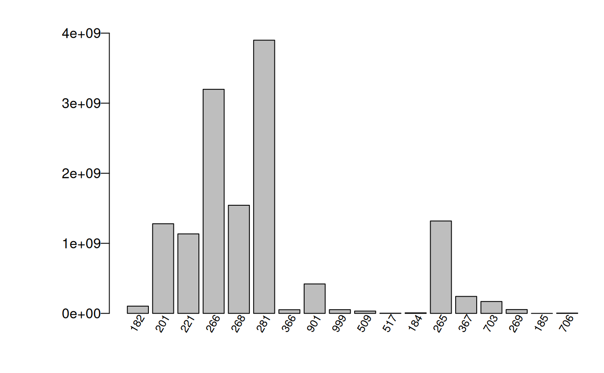

Green-Book (GB) module overview
FIESTA‘s Green-Book (GB) module calculates population
estimates and their sampling errors based on Bechtold and Patterson’s
(2005), ’Green-Book’ for FIA’s nationally-consistent, systematic annual
sample design, chapter 4 (Scott et al. 2005). FIA’s sample design is
based on 2 phases: the first phase uses remotely-sensed data to stratify
the land area to increase precision of estimates; while the 2nd phase
obtains photo and ground observations and measurements for a suite of
information across a hexagonal grid, each approximately 6000 acres in
size. The associated estimators and variance estimators are used for
area and tree attribute totals with the assumption of a simple random,
stratified design and double sampling for stratification. Adjustment
factors are calculated by estimation unit and strata to account for
nonsampled (nonresponse) conditions.
Functions include non-ratio estimators for area and tree estimates by
domain and ratio-of-means estimators for per-acre and per-tree estimates
within domain. In addition, FIESTA adjusts for nonsampled
conditions, supports post-stratification for reducing variance, and
reports by estimation unit or a summed combination of estimation units.
Output from the Green-Book module was tested and compared to output from
FIA’s publicly-available online tool (EVALIDator) for
state-level population estimates and associated sampling errors
generated from the FIA Database (FIADB).
Objective of tutorial
The Green-Book estimators can be used with FIA’s standard state-level population data (i.e, Evaluation) from the FIA database (FIADB) and also population data from a custom boundary. The population data includes a set of FIA plot data and summarized auxiliary information for post-stratification, including a table of area by estimation unit within the population, and a table of strata proportions by estimation unit. This tutorial steps through several examples using FIESTA’s Green Book module, for four different populations: (POP1) an FIA standard Evaluation, Wyoming 561301; (POP2) a custom boundary with one population, Bighorn National Forest; (POP3) a custom boundary with sub-populations, Bighorn National Forest Districts; and (POP4) an FIA standard Evaluation, Rhode Island 441901, stored in a SQLite database. All examples can be used with any population, standard or custom.
GB Examples
GB Example Data
View GB Example Data
Example FIA plot data from FIADB
The examples use FIA plot data from FIA Evaluation 561301, including
three inventory years of field measurements in the state of Wyoming,
from FIADB_1.7.2.00, last updated June 20, 2018, downloaded on June 25,
2018, and stored as internal data objects in FIESTA.
Wyoming (WY), Inventory Years 2011-2013 (Evaluation 561301)
| Data Frame | Description |
|---|---|
| WYplt | WY plot-level data |
| WYcond | WY condition-level data |
| WYtree | WY tree-level data |
Example Auxiliary data
Auxiliary data for state-level estimates, including plot-level
estimation unit and stratum assignments; area by estimation unit; and
pixel counts by strata class and estimation unit, were downloaded from
FIADB at the same time, from the same FIA Evaluation (i.e., 561301), and
stored as internal data objects in FIESTA. Estimates using
auxiliary data from FIADB can be compared with EVALIDator estimates,
using the 2013 evaluation (https://apps.fs.usda.gov/fiadb-api/evalidator).
Auxiliary data for the custom boundaries are summarized from spatial layers stored as external objects in FIESTA, originating from the USDA Forest Service, Automated Lands Program (ALP; 2018) and from a 250m resolution, Moderate Resolution Imaging Spectroradiometer (MODIS), classified map, reclassified from 3 to 2 classes: 1:forest; 2:nonforest (Ruefenacht et al. 2008)
Wyoming (WY), Auxiliary data from FIADB (Evaluation 561301)
| Data Frame | Description |
|---|---|
| WYpltassgn | WY plot-level data with strata and estimation unit assignments |
| WYunitarea | WY estimation unit look-up table with total acres by estimation unit (ESTUNIT) |
| WYstratalut | WY strata look-up table with pixel counts (P1POINTCNT) by strata and estimation unit |
Wyoming (WY), Auxiliary data from other sources
| External data | Description |
|---|---|
| WYbighorn_adminbnd.shp | Polygon shapefile of WY Bighorn National Forest Administrative boundary1 |
| WYbighorn_districtbnd.shp | Polygon shapefile of WY Bighorn National Forest District boundaries2 |
| WYbighorn_forest_nonforest_250m.tif | GeoTIFF raster of predicted forest/nonforest (1/0)3 |
1USDA Forest Service, Automated Lands Program (ALP). 2018. S_USA.AdministrativeForest (http://data.fs.usda.gov/geodata/edw). Description: An area encompassing all the National Forest System lands administered by an administrative unit. The area encompasses private lands, other governmental agency lands, and may contain National Forest System lands within the proclaimed boundaries of another administrative unit. All National Forest System lands fall within one and only one Administrative Forest Area.
2USDA Forest Service, Automated Lands Program (ALP). 2018. S_USA.RangerDistrict (http://data.fs.usda.gov/geodata/edw). Description: A depiction of the boundary that encompareasses a Ranger District.
3Based on 250m resolution, Moderate Resolution Imaging Spectroradiometer (MODIS), classified map, reclassified from 3 to 2 classes: 1:forest; 2:nonforest. Projected in Albers Conical Equal Area, Datum NAD27 (Ruefenacht et al. 2008).
Set up
First, you’ll need to load the FIESTA library:
Next, you’ll need to set up an “outfolder”. This is just a file path
to a folder where you’d like FIESTA to send your data
output. For this vignette, we have set our outfolder file path as a
temporary directory.
outfolder <- tempdir()Get auxiliary data for custom examples
Now, we need to get the auxiliary data for the custom boundaries. The FIESTA spGetStrata function is a spatial wrapper function to facilitate extraction and summary of user-defined spatial data used for post-stratification. The function uses the FIESTA spExtractPoly and spExtractRast functions to subset (i.e., clip) plots to the boundary and extract values from estimation unit (i.e., polygon) and strata values (i.e., raster) to plot center locations, respectively. Other internal spatial functions calculate stratum pixel counts and area by estimation unit. If a polygon strata layer is given, the FIESTA spPoly2Rast function converts the polygon layer to raster before calculating strata weights.
Our custom examples demonstrate how to get data for one area of interest, or population (e.g, Bighorn National Forest) and for one area of interest, with multiple estimation units, or subpopulations (e.g., Bighorn National Forest Districts).
Bighorn National Forest
View Getting Strata Data
# File names for spatial layers, stored as external data objects in FIESTA.
WYbhfn <- system.file("extdata", "sp_data/WYbighorn_adminbnd.shp", package = "FIESTA")
fornffn <- system.file("extdata", "sp_data/WYbighorn_forest_nonforest_250m.tif", package = "FIESTA")
# Get estimation unit and strata information for Bighorn National Forest.
stratdat.bh <- spGetStrata(xyplt = WYplt,
uniqueid = "CN",
unit_layer = WYbhfn,
strat_layer = fornffn,
spMakeSpatial_opts = list(xvar = "LON_PUBLIC",
yvar = "LAT_PUBLIC",
xy.crs = 4269))
# Get names of output components
names(stratdat.bh)output
## [1] "bnd" "pltassgn" "pltassgnid" "unitarea" "unitvar"
## [6] "unitvar2" "areavar" "areaunits" "stratalut" "strvar"
## [11] "getwt" "strwtvar"
# Plot assignment of strata and estimation unit (ONEUNIT, STRATUMCD)
head(stratdat.bh$pltassgn)output
## CN INVYR STATECD CYCLE UNITCD COUNTYCD PLOT MEASYEAR RDDISTCD
## 1 40404876010690 2012 56 3 2 3 83143 2012 6
## 2 40404879010690 2011 56 3 2 3 80153 2011 6
## 3 40404921010690 2013 56 3 2 3 85403 2013 NA
## 4 40404930010690 2012 56 3 2 3 89093 2012 8
## 5 40404939010690 2012 56 3 2 3 86981 2012 6
## 6 40404940010690 2013 56 3 2 3 85570 2013 8
## NF_SAMPLING_STATUS_CD PLOT_STATUS_CD NF_PLOT_STATUS_CD NBRCND NBRCNDSAMP
## 1 0 1 NA 2 2
## 2 0 1 NA 1 1
## 3 0 2 NA 1 1
## 4 0 1 NA 1 1
## 5 0 1 NA 2 2
## 6 0 1 NA 1 1
## NBRCNDFOR CCLIVEPLT FORNONSAMP PLOT_ID ONEUNIT STRATUMCD
## 1 2 67.5 Sampled-Forest ID560200383143 1 1
## 2 1 66.0 Sampled-Forest ID560200380153 1 1
## 3 0 0.0 Sampled-Nonforest ID560200385403 1 1
## 4 1 45.0 Sampled-Forest ID560200389093 1 1
## 5 1 54.0 Sampled-Forest ID560200386981 1 1
## 6 1 52.0 Sampled-Forest ID560200385570 1 1
# Area by estimation unit
stratdat.bh$unitareaoutput
## ONEUNIT ACRES_GIS
## 1 1 1112401
# Pixel counts and strata weights (strwt) by strata and estimation unit
stratdat.bh$stratalutoutput
## ONEUNIT STRATUMCD P2POINTCNT strwt P1POINTCNT P1POINTCNTFOR
## 1 1 1 52289 0.7260344 41 33
## 2 1 2 19731 0.2739656 15 4
# Variable names
stratdat.bh$unitvar # Estimation unit variableoutput
## [1] "ONEUNIT"
stratdat.bh$strvar # Strata variableoutput
## [1] "STRATUMCD"
stratdat.bh$areavar # Area variableoutput
## [1] "ACRES_GIS"Bighorn National Forest Districts
View Getting Strata Data (Districts)
# File names for external spatial data
WYbhdistfn <- system.file("extdata", "sp_data/WYbighorn_districtbnd.shp", package = "FIESTA")
fornffn <- system.file("extdata", "sp_data/WYbighorn_forest_nonforest_250m.tif", package = "FIESTA")
# Get estimation unit and strata information for Bighorn National Forest Districts
stratdat.bhdist <- spGetStrata(xyplt = WYplt,
uniqueid = "CN",
unit_layer = WYbhdistfn,
unitvar = "DISTRICTNA",
strat_layer = fornffn,
spMakeSpatial_opts = list(xvar = "LON_PUBLIC",
yvar = "LAT_PUBLIC",
xy.crs = 4269))
# Get names of output list components
names(stratdat.bhdist)output
## [1] "bnd" "pltassgn" "pltassgnid" "unitarea" "unitvar"
## [6] "unitvar2" "areavar" "areaunits" "stratalut" "strvar"
## [11] "getwt" "strwtvar"
# Plot assignment of strata and estimation unit (DISTRICTNA, STRATUMCD)
head(stratdat.bhdist$pltassgn)output
## CN INVYR STATECD CYCLE UNITCD COUNTYCD PLOT MEASYEAR RDDISTCD
## 1 40404876010690 2012 56 3 2 3 83143 2012 6
## 2 40404879010690 2011 56 3 2 3 80153 2011 6
## 3 40404921010690 2013 56 3 2 3 85403 2013 NA
## 4 40404930010690 2012 56 3 2 3 89093 2012 8
## 5 40404939010690 2012 56 3 2 3 86981 2012 6
## 6 40406947010690 2011 56 3 2 33 88166 2011 6
## NF_SAMPLING_STATUS_CD PLOT_STATUS_CD NF_PLOT_STATUS_CD NBRCND NBRCNDSAMP
## 1 0 1 NA 2 2
## 2 0 1 NA 1 1
## 3 0 2 NA 1 1
## 4 0 1 NA 1 1
## 5 0 1 NA 2 2
## 6 0 1 NA 3 2
## NBRCNDFOR CCLIVEPLT FORNONSAMP PLOT_ID
## 1 2 67.5 Sampled-Forest ID560200383143
## 2 1 66.0 Sampled-Forest ID560200380153
## 3 0 0.0 Sampled-Nonforest ID560200385403
## 4 1 45.0 Sampled-Forest ID560200389093
## 5 1 54.0 Sampled-Forest ID560200386981
## 6 1 14.0 Sampled-Forest ID560203388166
## DISTRICTNA STRATUMCD
## 1 Medicine Wheel Ranger District 1
## 2 Medicine Wheel Ranger District 1
## 3 Medicine Wheel Ranger District 1
## 4 Medicine Wheel Ranger District 1
## 5 Medicine Wheel Ranger District 1
## 6 Medicine Wheel Ranger District 1
# Area by estimation units (Districts)
stratdat.bhdist$unitareaoutput
## DISTRICTNA ACRES_GIS
## 1 Medicine Wheel Ranger District 364522.8
## 2 Powder River Ranger District 334333.7
## 3 Tongue Ranger District 413774.9
# Pixel counts and strata weights (strwt) by strata and estimation unit
stratdat.bhdist$stratalutoutput
## DISTRICTNA STRATUMCD P2POINTCNT strwt P1POINTCNT
## 1 Medicine Wheel Ranger District 1 14472 0.6127789 9
## 2 Medicine Wheel Ranger District 2 9145 0.3872211 7
## 3 Powder River Ranger District 1 15251 0.7044667 13
## 4 Tongue Ranger District 1 22588 0.8437804 19
## 5 Tongue Ranger District 2 4182 0.1562196 2
## P1POINTCNTFOR
## 1 8
## 2 3
## 3 9
## 4 16
## 5 1
# Variable names
stratdat.bhdist$unitvar # Estimation unit variableoutput
## [1] "DISTRICTNA"
stratdat.bhdist$strvar # Strata variableoutput
## [1] "STRATUMCD"
stratdat.bhdist$areavar # Area variableoutput
## [1] "ACRES_GIS"modGBpop()
FIESTA’s population functions (mod*pop)
check input data and perform population-level calculations, such as:
summing number of sampled plots; adjusting for partial nonresponse; and
standardizing auxiliary data. These functions are specific to each
FIESTA module and are run prior to or within a module for
any population of interest.
For FIESTA’s GB Module, the modGBpop
function calculates and outputs: number of plots, adjustment factors,
and an expansion factor by strata. The outputs are similar to data found
in FIADB’s pop_stratum table. The output from modGBpop can
be used for one or more estimates from modGBarea,
modGBtree, or modGBratio functions.
POP1: FIADB POPULATION - Get population data for post-stratified area and tree estimates for Wyoming
View Example
In this example, we use the sample Wyoming data (2013 Evaluation)
stored in FIESTA to generate population data for the GB
module. We check this output with the FIADB pop_stratum table from FIA
DataMart for 561301 Evalid, using the FIESTA::DBqryCSV
function.
GBpopdat <- modGBpop(popTabs = list(cond = FIESTA::WYcond, # FIA plot/condition data
tree = FIESTA::WYtree, # FIA tree data
seed = FIESTA::WYseed), # FIA seedling data
popTabIDs = list(cond = "PLT_CN"), # unique ID of plot in cond
pltassgn = FIESTA::WYpltassgn, # plot assignments
pltassgnid = "CN", # unique ID of plot in pltassgn
pjoinid = "PLT_CN", # plot id to join to pltassgn
unitarea = FIESTA::WYunitarea, # area by estimation units
unitvar = "ESTN_UNIT", # name of estimation unit variable
strata = TRUE, # if using post-stratification
stratalut = FIESTA::WYstratalut, # strata classes and pixels counts
strata_opts = strata_options(getwt = TRUE)) # strata optionsTo get the names of the list components associated with the output of
our call of modGBpop, we run the following code:
names(GBpopdat)output
## [1] "module" "popType" "pltidsadj" "pltcondx"
## [5] "pltcondflds" "pjoinid" "cuniqueid" "condid"
## [9] "ACI" "areawt" "areawt2" "adjcase"
## [13] "dbqueries" "dbqueriesWITH" "pltassgnx" "pltassgnid"
## [17] "unitarea" "areavar" "areaunits" "unitvar"
## [21] "unitvars" "unitltmin" "strata" "stratalut"
## [25] "strvar" "strwtvar" "plotsampcnt" "condsampcnt"
## [29] "states" "invyrs" "adj" "P2POINTCNT"
## [33] "plotunitcnt" "treex" "tuniqueid" "seedx"
## [37] "adjfactors" "adjvarlst" "popdatindb"From this list outputted by GBpopdat we can access many
things. Some examples include the number of plots by plot status
(plotsampcnt), the number of conditions by condition status
(condsampcnt), the number of plots and adjustment factors
by strata (stratalut), and the adjustment factors added to
the plot-level, tree-level, and seedling data (pltidsadj,
treex, and seedx). These objects can be seen
below:
# Number of plots by plot status
GBpopdat$plotsampcnt output
## data frame with 0 columns and 0 rows
# Number of conditions by condition status
GBpopdat$condsampcntoutput
## COND_STATUS_NM COND_STATUS_CD NBRCONDS
## 1 Nonforest land 2 2590
## 2 Forest land 1 590
## 3 Noncensus water 3 10
## 4 Nonsampled 5 14
## 5 Census water 4 20
# Number of plots and adjustment factors by strata
GBpopdat$stratalut output
## Key: <ESTN_UNIT, STRATUMCD>
## ESTN_UNIT STRATUMCD P1POINTCNT n.total n.strata strwt
## <fctr> <num> <num> <int> <int> <num>
## 1: 1 1 30603 133 17 0.17138393
## 2: 1 2 147961 133 116 0.82861607
## 3: 3 1 15896 98 12 0.12145384
## 4: 3 2 114985 98 86 0.87854616
## 5: 5 2 198981 152 152 1.00000000
## 6: 7 1 50473 245 35 0.15293736
## 7: 7 2 279551 245 210 0.84706264
## 8: 9 1 13946 133 16 0.07891401
## 9: 9 2 162778 133 117 0.92108599
## 10: 11 1 34965 85 28 0.29395692
## 11: 11 2 83981 85 57 0.70604308
## 12: 13 1 60592 290 48 0.15780564
## 13: 13 2 323374 290 242 0.84219436
## 14: 15 2 92483 70 70 1.00000000
## 15: 17 2 83149 58 58 1.00000000
## 16: 19 1 24652 128 18 0.14250699
## 17: 19 2 148336 128 110 0.85749301
## 18: 21 2 111389 86 86 1.00000000
## 19: 23 1 49359 132 35 0.29129978
## 20: 23 2 120085 132 97 0.70870022
## 21: 25 2 222755 175 175 1.00000000
## 22: 27 2 108902 79 79 1.00000000
## 23: 29 1 140049 216 100 0.48499131
## 24: 29 2 148717 216 116 0.51500869
## 25: 31 2 87474 64 64 1.00000000
## 26: 33 1 24037 82 18 0.22951399
## 27: 33 2 80693 82 64 0.77048601
## 28: 35 1 55527 158 44 0.27151107
## 29: 35 2 148984 158 114 0.72848893
## 30: 37 2 434729 339 339 1.00000000
## 31: 39 1 128994 125 98 0.73730659
## 32: 39 2 45959 125 27 0.26269341
## 33: 41 2 86508 63 63 1.00000000
## 34: 43 2 92938 63 63 1.00000000
## 35: 45 2 99461 73 73 1.00000000
## ESTN_UNIT STRATUMCD P1POINTCNT n.total n.strata strwt
# Adjustment factors added to plot-level data
head(GBpopdat$pltidsadj)output
## Key: <CN>
## CN ADJ_FACTOR_COND ADJ_FACTOR_SUBP ADJ_FACTOR_MACR
## <char> <num> <num> <int>
## 1: 40404728010690 1.000000 1.000000 0
## 2: 40404729010690 1.000000 1.000000 0
## 3: 40404730010690 1.014925 1.014925 0
## 4: 40404731010690 1.000000 1.000000 0
## 5: 40404733010690 1.000000 1.000000 0
## 6: 40404734010690 1.000000 1.000000 0
## ADJ_FACTOR_MICR
## <num>
## 1: 1.000000
## 2: 1.000000
## 3: 1.014925
## 4: 1.000000
## 5: 1.000000
## 6: 1.000000
# Adjustment factors added to tree data
head(GBpopdat$treex)output
## Key: <PLT_CN, CONDID, SUBP, TREE>
## PLT_CN CONDID SUBP TREE STATUSCD SPCD SPGRPCD DIA HT
## <char> <num> <num> <num> <num> <num> <num> <num> <num>
## 1: 40404729010690 1 1 1 2 113 24 7.7 18
## 2: 40404729010690 1 1 2 1 66 23 10.8 14
## 3: 40404729010690 1 1 3 2 113 24 5.2 23
## 4: 40404729010690 1 1 4 1 113 24 5.2 18
## 5: 40404729010690 1 3 1 1 113 24 8.8 21
## 6: 40404729010690 1 4 1 1 113 24 8.9 28
## TREECLCD AGENTCD STANDING_DEAD_CD VOLCFNET VOLCFGRS VOLBFNET TPA_UNADJ
## <num> <num> <num> <num> <num> <num> <num>
## 1: 3 10 1 1.001201 1.820365 NA 6.018046
## 2: 3 NA NA NA NA NA 6.018046
## 3: 3 10 1 0.466414 0.848025 NA 6.018046
## 4: 2 NA NA 0.630180 0.630180 NA 6.018046
## 5: 3 NA NA 2.491559 2.931246 NA 6.018046
## 6: 3 NA NA 3.824139 4.202350 NA 6.018046
## DRYBIO_AG CARBON_AG tadjfac
## <num> <num> <num>
## 1: 68.32740 34.43701 1
## 2: 128.28703 61.19291 1
## 3: 40.24585 20.28391 1
## 4: 40.61207 19.49379 1
## 5: 144.25115 69.24055 1
## 6: 182.53588 87.61722 1
# Adjustment factors added to seedling data
head(GBpopdat$seedx)output
## Key: <PLT_CN, CONDID, SUBP>
## PLT_CN SUBP CONDID SPCD SPGRPCD TPA_UNADJ TREECOUNT
## <char> <num> <num> <num> <num> <num> <num>
## 1: 40404729010690 2 1 113 24 74.96528 1
## 2: 40404730010690 2 1 202 10 224.89585 3
## 3: 40404738010690 2 1 746 44 2323.92376 31
## 4: 40404738010690 4 1 19 12 74.96528 1
## 5: 40404738010690 4 1 113 24 74.96528 1
## 6: 40404742010690 4 1 746 44 1124.47924 15
## TREECOUNT_CALC tadjfac
## <num> <num>
## 1: 1 1.000000
## 2: 3 1.014925
## 3: 31 1.014925
## 4: 1 1.014925
## 5: 1 1.014925
## 6: 15 1.014925POP2: CUSTOM POPULATION - Get population data for post-stratified area and tree estimates for the Bighorn National Forest
View Example
In this example, we use the sample WY plot data (2013 Evaluation) in
FIESTA and output from spGetStrata to generate population
data for the Bighorn National Forest. Here, we have only one estimation
unit within the population of interest (Bighorn National Forest),
therefore strata and pixel counts are summarized to the population.
If the FIESTA::spGetStrata function is used to obtain
stratification data, the output list object can be input directly into
modGBpop through the stratdat parameter.
GBpopdat.bh <- modGBpop(popTabs = popTables(plt = WYplt,
cond = WYcond,
tree = WYtree,
seed = WYseed),
stratdat = stratdat.bh)
# Get names of output list components
names(GBpopdat.bh)output
## [1] "module" "popType" "pltidsadj" "pltcondx"
## [5] "pltcondflds" "pjoinid" "cuniqueid" "condid"
## [9] "ACI" "areawt" "areawt2" "adjcase"
## [13] "dbqueries" "dbqueriesWITH" "pltassgnx" "pltassgnid"
## [17] "unitarea" "areavar" "areaunits" "unitvar"
## [21] "unitvars" "unitltmin" "strata" "stratalut"
## [25] "strvar" "strwtvar" "plotsampcnt" "condsampcnt"
## [29] "states" "invyrs" "adj" "P2POINTCNT"
## [33] "plotunitcnt" "treex" "tuniqueid" "seedx"
## [37] "adjfactors" "adjvarlst" "popdatindb"The utilization of the stratdat parameter shown above is
simply a shortcut that is available when spGetStrata() was
used. Alternatively, the data can be input through individual parameters
as shown below.
## Using output as individual parameter inputs
GBpopdat.bh <- modGBpop(popTabs = popTables(plt = WYplt,
cond = WYcond,
tree = WYtree,
seed = WYseed),
popTabIDs = popTableIDs(plt = "CN"),
pltassgn = stratdat.bh$pltassgn,
pltassgnid = "CN",
unitvar = stratdat.bh$unitvar,
unitarea = stratdat.bh$unitarea,
areavar = stratdat.bh$areavar,
strata = TRUE,
stratalut =stratdat.bh$stratalut,
strvar = stratdat.bh$strvar)
## Get names of output list components
names(GBpopdat.bh)output
## [1] "module" "popType" "pltidsadj" "pltcondx"
## [5] "pltcondflds" "pjoinid" "cuniqueid" "condid"
## [9] "ACI" "areawt" "areawt2" "adjcase"
## [13] "dbqueries" "dbqueriesWITH" "pltassgnx" "pltassgnid"
## [17] "unitarea" "areavar" "areaunits" "unitvar"
## [21] "unitvars" "unitltmin" "strata" "stratalut"
## [25] "strvar" "strwtvar" "plotsampcnt" "condsampcnt"
## [29] "states" "invyrs" "adj" "P2POINTCNT"
## [33] "plotunitcnt" "treex" "tuniqueid" "seedx"
## [37] "adjfactors" "adjvarlst" "popdatindb"POP3: CUSTOM SUB-POPULATIONS - Get sub-population data for area and tree estimates for the Bighorn National Forest Districts, using post-stratification
View Example
In this example, we use the sample Wyoming plot data (2013
Evaluation) stored in FIESTA and output from spGetStrata to
generate sub-population data for Bighorn National Forest Districts.
Here, we have more than one estimation unit (i.e., sub-population)
within the population of interest (i.e., Bighorn National Forest
Districts), therefore strata and pixel counts are summarized by each
District within the population.
# Bighorn National Forest District
# Using output list from spGetStrata()
GBpopdat.bhdist <- modGBpop(popTabs = popTables(plt = WYplt,
cond = WYcond,
tree = WYtree,
seed = WYseed),
stratdat = stratdat.bhdist)
## Get names of output list components
names(GBpopdat.bhdist)output
## [1] "module" "popType" "pltidsadj" "pltcondx"
## [5] "pltcondflds" "pjoinid" "cuniqueid" "condid"
## [9] "ACI" "areawt" "areawt2" "adjcase"
## [13] "dbqueries" "dbqueriesWITH" "pltassgnx" "pltassgnid"
## [17] "unitarea" "areavar" "areaunits" "unitvar"
## [21] "unitvars" "unitltmin" "strata" "stratalut"
## [25] "strvar" "strwtvar" "plotsampcnt" "condsampcnt"
## [29] "states" "invyrs" "adj" "P2POINTCNT"
## [33] "plotunitcnt" "treex" "tuniqueid" "seedx"
## [37] "adjfactors" "adjvarlst" "popdatindb"POP4: FIADB POPULATION - Get population data for area and tree estimates for Rhode Island, using post-stratification, with data stored in a SQLite database
View Example
In this example, we use the sample Rhode Island data (441901
Evaluation) stored in a SQLite database as external data in
FIESTA. Data were extracted from the FIA database on June
6, 2022. All output can be compared with output from other FIA
tools.
First, let’s look at the SQLite database. Use the DBI package explore the contents.
SQLitefn <- system.file("extdata", "FIA_data/RIdat_eval2019.db", package="FIESTA")
conn <- DBI::dbConnect(RSQLite::SQLite(), SQLitefn)
DBI::dbListTables(conn)
DBI::dbDisconnect(conn)
GBpopdat.RI <- modGBpop(popTabs = popTables(plt = "plot",
cond = "cond",
tree = "tree",
seed = "seed"),
dsn = SQLitefn,
pltassgn = "pop_plot_stratum_assgn",
stratalut = "pop_stratum",
unitarea = "pop_estn_unit",
unitvar = "ESTN_UNIT",
areavar = "AREA_USED",
strata_opts = strata_options(getwt = TRUE,
getwtvar = "P1POINTCNT"))
names(GBpopdat.RI)
# Strata-level population data, including number of plots and adjustment factors
GBpopdat.RI$stratalut modGBarea()
FIESTA‘s modGBarea function generates acre
estimates. Calculations are based on Scott et al. 2015 (’Green-Book’)
for mapped forest inventory plots. The non-ratio estimator for
estimating area by stratum and domain is used. Plots that are totally
nonsampled are excluded from the estimation dataset. Next, an adjustment
factor is calculated by strata to adjust for nonsampled (nonresponse)
conditions that have proportion less than 1. The attribute is the
proportion of the plot which is divided by the adjustment factor, and
averaged by stratum. Strata means are combined using the strata weights
and then expanded to acres using the total land area in the
population.
If there are more than one estimation unit (i.e., subpopulation)
within the population, estimates are generated by estimation unit. If
sumunits=TRUE, the estimates and percent standard errors
returned are a sum combination of all estimation units. If
rawdata=TRUE, the raw data returned will include estimates
by estimation unit.
Parameters defined in the following examples are organized by category: population data (pop); estimation information (est); and output details (out).
POP1: 1.1 Area of forest land, Wyoming, 2011-2013
View Example
Using the modGBarea function we generate estimates by
estimation unit (i.e., ESTN_UNIT) and sum to population (i.e., WY).
FIESTA then returns raw data for area of forest land,
Wyoming, 2011-2013 (sum estimation units).
The following estimates match output from EVALIDator using the WY 2013 Evaluation.
area1.1 <- modGBarea(GBpopdat = GBpopdat,
landarea = "FOREST",
sumunits = TRUE) To get the names of the list components associated with the output of
our call of modGBarea, we run the following code:
names(area1.1)output
## [1] "est" "raw" "statecd" "states"To easily access our estimate and percent sampling error of estimate
we can just grab the est object from out outputted
list:
area1.1$estoutput
## TOTAL Estimate Percent Sampling Error
## 1 Total 10455772 2.37We can also look at raw data and estimates, as shown below:
raw1.1 <- area1.1$raw # extract raw data list object from output
names(raw1.1)output
## [1] "unit_totest" "totest" "domdat" "domdatqry" "module"
## [6] "esttype" "popType" "GBmethod" "rowvar" "colvar"
## [11] "areaunits"
head(raw1.1$unit_totest) # estimates by estimation unit (i.e., ESTN_UNIT)output
## ESTN_UNIT nhat nhat.var NBRPLT.gt0 AREAUSED est est.var
## 1 1 0.20844715 0.0004226522 24 2757613 574816.56 3214028956
## 2 11 0.25385133 0.0005556666 26 1837124 466356.38 1875388511
## 3 13 0.16668783 0.0001399449 53 5930088 988473.50 4921292746
## 4 15 0.02857143 0.0004022479 2 1428579 40816.54 820922693
## 5 17 0.09913793 0.0013966899 8 1283969 127290.03 2302550041
## 6 19 0.14724597 0.0005090321 22 2671802 393412.08 3633738980
## est.se est.cv pse CI99left CI99right CI95left CI95right
## 1 56692.41 0.09862695 9.862695 428786.600 720846.5 463701.49 685931.64
## 2 43305.76 0.09285979 9.285979 354808.144 577904.6 381478.66 551234.10
## 3 70151.93 0.07096996 7.096996 807774.111 1169172.9 850978.25 1125968.75
## 4 28651.75 0.70196412 70.196412 0.000 114618.6 0.00 96972.94
## 5 47984.89 0.37697292 37.697292 3689.134 250890.9 33241.37 221338.69
## 6 60280.50 0.15322484 15.322484 238139.793 548684.4 275264.46 511559.69
## CI68left CI68right NBRPLT
## 1 518438.35 631194.8 133
## 2 423290.63 509422.1 85
## 3 918710.36 1058236.6 290
## 4 12323.59 69309.5 70
## 5 79571.07 175009.0 58
## 6 333465.66 453358.5 128
raw1.1$totest # estimates for population (i.e., WY)output
## TOTAL est est.var NBRPLT.gt0 AREAUSED est.se est.cv pse
## 1 1 10455771 61379281561 556 62600430 247748.4 0.0236949 2.36949
## CI99left CI99right CI95left CI95right CI68left CI68right NBRPLT
## 1 9817614 11093929 9970194 10941349 10209396 10702147 3047POP1: 1.2 Area by forest type on forest land, Wyoming, 2011-2013
View Example
In this example, we look at adding rows to the output and include
returntitle=TRUE to return title information. We use the
variable rowvar to specify a domain whose levels we want to
calculate estimates by.
## Area of forest land by forest type, Wyoming, 2011-2013
area1.2 <- modGBarea(GBpopdat = GBpopdat,
landarea = "FOREST", # est - forest land filter
rowvar = "FORTYPCD", # est - row domain
sumunits = TRUE, # est - sum estimation units to population
returntitle = TRUE) # out - return title informationAgain, we can look at the contents of the output list. The output now includes titlelst, a list of associated titles.
names(area1.2)output
## [1] "est" "titlelst" "raw" "statecd" "states"And the estimates:
## Estimate and percent sampling error of estimate
area1.2$estoutput
## Forest type Estimate Percent Sampling Error
## 1 182 632481.7 17.28
## 2 184 339749.8 23.85
## 3 185 14854.7 100
## 4 201 881189 14.21
## 5 221 889542.8 12.82
## 6 265 467196.7 19.99
## 7 266 1521792.8 10.41
## 8 268 950041.6 13.55
## 9 269 19120 101.99
## 10 281 2483772.2 7.79
## 11 366 236355.9 28.47
## 12 367 362502.8 22.36
## 13 509 95082.1 45.29
## 14 517 19287 107.34
## 15 703 87991.9 44.35
## 16 706 10593.4 100
## 17 901 617017 17.39
## 18 999 827200.1 14.62
## 19 Total 10455771.5 2.37Along with raw data and titles:
raw1.2 <- area1.2$raw # extract raw data list object from output
names(raw1.2)output
## [1] "unit_totest" "totest" "unit_rowest" "rowest" "domdat"
## [6] "domdatqry" "module" "esttype" "popType" "GBmethod"
## [11] "rowvar" "colvar" "areaunits"
head(raw1.2$unit_totest) # estimates by estimation unit (i.e., ESTN_UNIT)output
## ESTN_UNIT nhat nhat.var NBRPLT.gt0 AREAUSED est est.var
## 1 1 0.20844715 0.0004226522 24 2757613 574816.56 3214028956
## 2 11 0.25385133 0.0005556666 26 1837124 466356.38 1875388511
## 3 13 0.16668783 0.0001399449 53 5930088 988473.50 4921292746
## 4 15 0.02857143 0.0004022479 2 1428579 40816.54 820922693
## 5 17 0.09913793 0.0013966899 8 1283969 127290.03 2302550041
## 6 19 0.14724597 0.0005090321 22 2671802 393412.08 3633738980
## est.se est.cv pse CI99left CI99right CI95left CI95right
## 1 56692.41 0.09862695 9.862695 428786.600 720846.5 463701.49 685931.64
## 2 43305.76 0.09285979 9.285979 354808.144 577904.6 381478.66 551234.10
## 3 70151.93 0.07096996 7.096996 807774.111 1169172.9 850978.25 1125968.75
## 4 28651.75 0.70196412 70.196412 0.000 114618.6 0.00 96972.94
## 5 47984.89 0.37697292 37.697292 3689.134 250890.9 33241.37 221338.69
## 6 60280.50 0.15322484 15.322484 238139.793 548684.4 275264.46 511559.69
## CI68left CI68right NBRPLT
## 1 518438.35 631194.8 133
## 2 423290.63 509422.1 85
## 3 918710.36 1058236.6 290
## 4 12323.59 69309.5 70
## 5 79571.07 175009.0 58
## 6 333465.66 453358.5 128
raw1.2$totest # estimates for population (i.e., WY)output
## TOTAL est est.var NBRPLT.gt0 AREAUSED est.se est.cv pse
## 1 1 10455771 61379281561 556 62600430 247748.4 0.0236949 2.36949
## CI99left CI99right CI95left CI95right CI68left CI68right NBRPLT
## 1 9817614 11093929 9970194 10941349 10209396 10702147 3047
head(raw1.2$unit_rowest) # estimates by row, by estimation unit (i.e., ESTN_UNIT)output
## ESTN_UNIT Forest type nhat nhat.var NBRPLT.gt0 AREAUSED est
## 1 1 182 0.01428648 0.0001066487 2 2757613 39396.59
## 2 1 201 0.01023188 0.0000809180 1 2757613 28215.56
## 3 1 221 0.03239380 0.0002137597 4 2757613 89329.58
## 4 1 266 0.04092751 0.0002629835 4 2757613 112862.22
## 5 1 268 0.01023188 0.0000809180 1 2757613 28215.56
## 6 1 281 0.03854903 0.0002367898 4 2757613 106303.32
## est.var est.se est.cv pse CI99left CI99right CI95left CI95right
## 1 811002553 28478.11 0.7228571 72.28571 0 112751.34 0.00 95212.66
## 2 615335251 24805.95 0.8791587 87.91587 0 92111.45 0.00 76834.33
## 3 1625520387 40317.74 0.4513370 45.13370 0 193181.20 10308.25 168350.90
## 4 1999839565 44719.57 0.3962315 39.62315 0 228052.19 25213.48 200510.96
## 5 615335251 24805.95 0.8791587 87.91587 0 92111.45 0.00 76834.33
## 6 1800651626 42434.09 0.3991793 39.91793 0 215606.28 23134.04 189472.60
## CI68left CI68right
## 1 11076.316 67716.87
## 2 3547.081 52884.03
## 3 49235.278 129423.87
## 4 68390.497 157333.95
## 5 3547.081 52884.03
## 6 64104.407 148502.23
head(raw1.2$rowest) # estimates by row for population (i.e., WY)output
## Forest type est est.var NBRPLT.gt0 est.se est.cv pse
## 1 182 632481.70 11940316027 36 109271.75 0.1727667 17.27667
## 2 184 339749.83 6565509067 18 81027.83 0.2384926 23.84926
## 3 185 14854.69 220661757 1 14854.69 1.0000000 100.00000
## 4 201 881188.96 15674351133 47 125197.25 0.1420776 14.20776
## 5 221 889542.77 13008784420 51 114056.06 0.1282187 12.82187
## 6 265 467196.69 8723584461 27 93400.13 0.1999161 19.99161
## CI99left CI99right CI95left CI95right CI68left CI68right
## 1 351016.3 913947.08 418313.0 846650.40 523815.54425 741147.86
## 2 131036.0 548463.69 180938.2 498561.46 259171.07046 420328.60
## 3 0.0 53117.83 0.0 43969.34 82.32642 29627.05
## 4 558702.2 1203675.70 635806.9 1126571.06 756685.57030 1005692.35
## 5 595753.8 1183331.71 665997.0 1113088.54 776118.82419 1002966.72
## 6 226613.9 707779.49 284135.8 650257.59 374314.19798 560079.19
## Titles (list object) for estimate
titlelst1.2 <- area1.2$titlelst
names(titlelst1.2)output
## [1] "title.estpse" "title.unitvar" "title.ref" "outfn.estpse"
## [5] "outfn.rawdat" "outfn.param" "title.rowvar" "title.row"
## [9] "title.unit"
titlelst1.2output
## $title.estpse
## [1] "Area, in acres, and percent sampling error on forest land by forest type"
##
## $title.unitvar
## [1] "ESTN_UNIT"
##
## $title.ref
## [1] ""
##
## $outfn.estpse
## [1] "area_FORTYPCD_forestland"
##
## $outfn.rawdat
## [1] "area_FORTYPCD_forestland_rawdata"
##
## $outfn.param
## [1] "area_FORTYPCD_forestland_parameters"
##
## $title.rowvar
## [1] "Forest type"
##
## $title.row
## [1] "Area, in acres, on forest land by forest type"
##
## $title.unit
## [1] "acres"POP1: 1.3 Area by forest type and stand-size class on forest land, Wyoming, 2011-2013
View Example
In this example, we look at generating estimates by multiple domains.
In order to enhance the readability of the output we use FIA names as
labels. We also output estimates and percent standard error in the same
cell with the allin1 argument in table_options
and save data to an outfolder with the outfolder argument
in savedata_options.
## Area of forest land by forest type and stand-size class, Wyoming, 2011-2013
area1.3 <- modGBarea(GBpopdat = GBpopdat, # pop - population calculations for WY, post-stratification
landarea = "FOREST", # est - forest land filter
rowvar = "FORTYPCD", # est - row domain
colvar = "STDSZCD", # est - column domain
sumunits = TRUE, # est - sum estimation units to population
savedata = TRUE, # out - save data to outfolder
returntitle = TRUE, # out - return title information
table_opts = table_options(row.FIAname = TRUE, # table - row domain names
col.FIAname = TRUE, # table - column domain names
allin1 = TRUE), # table - return output with est(pse)
savedata_opts = savedata_options(outfolder = outfolder, # save - outfolder for saving data
outfn.pre = "WY")) # save - prefix for output filesWe can again look at the output list, estimates, raw data, and titles:
# Look at output list
names(area1.3)output
## [1] "est" "titlelst" "raw" "statecd" "states"
# Estimate and percent sampling error of estimate
head(area1.3$est)output
## Forest type Large diameter Medium diameter
## 1 Rocky Mountain juniper 477,452.6 ( 19.91) 63,177.6 ( 51.17)
## 2 Juniper woodland 317,612.4 ( 24.54) -- ( --)
## 3 Pinyon / juniper woodland 14,854.7 (100.00) -- ( --)
## 4 Douglas-fir 589,713.2 ( 17.41) 111,576.9 ( 41.36)
## 5 Ponderosa pine 786,751.8 ( 13.52) 46,720.3 ( 60.51)
## 6 Engelmann spruce 332,893.7 ( 24.00) 68,400.6 ( 54.85)
## Small diameter Nonstocked Total
## 1 91,851.5 ( 46.14) -- ( --) 632,481.7 ( 17.28)
## 2 22,137.4 (100.00) -- ( --) 339,749.8 ( 23.85)
## 3 -- ( --) -- ( --) 14,854.7 (100.00)
## 4 179,898.8 ( 31.91) -- ( --) 881,189.0 ( 14.21)
## 5 56,070.7 ( 58.39) -- ( --) 889,542.8 ( 12.82)
## 6 65,902.4 ( 50.88) -- ( --) 467,196.7 ( 19.99)
# Raw data (list object) for estimate
raw1.3 <- area1.3$raw # extract raw data list object from output
names(raw1.3)output
## [1] "unit_totest" "totest" "unit_rowest" "rowest" "unit_colest"
## [6] "colest" "unit_grpest" "grpest" "domdat" "domdatqry"
## [11] "module" "esttype" "popType" "GBmethod" "rowvar"
## [16] "colvar" "areaunits"
head(raw1.3$unit_totest) # estimates by estimation unit (i.e., ESTN_UNIT)output
## ESTN_UNIT nhat nhat.var NBRPLT.gt0 AREAUSED est est.var
## 1 1 0.20844715 0.0004226522 24 2757613 574816.56 3214028956
## 2 11 0.25385133 0.0005556666 26 1837124 466356.38 1875388511
## 3 13 0.16668783 0.0001399449 53 5930088 988473.50 4921292746
## 4 15 0.02857143 0.0004022479 2 1428579 40816.54 820922693
## 5 17 0.09913793 0.0013966899 8 1283969 127290.03 2302550041
## 6 19 0.14724597 0.0005090321 22 2671802 393412.08 3633738980
## est.se est.cv pse CI99left CI99right CI95left CI95right
## 1 56692.41 0.09862695 9.862695 428786.600 720846.5 463701.49 685931.64
## 2 43305.76 0.09285979 9.285979 354808.144 577904.6 381478.66 551234.10
## 3 70151.93 0.07096996 7.096996 807774.111 1169172.9 850978.25 1125968.75
## 4 28651.75 0.70196412 70.196412 0.000 114618.6 0.00 96972.94
## 5 47984.89 0.37697292 37.697292 3689.134 250890.9 33241.37 221338.69
## 6 60280.50 0.15322484 15.322484 238139.793 548684.4 275264.46 511559.69
## CI68left CI68right NBRPLT
## 1 518438.35 631194.8 133
## 2 423290.63 509422.1 85
## 3 918710.36 1058236.6 290
## 4 12323.59 69309.5 70
## 5 79571.07 175009.0 58
## 6 333465.66 453358.5 128
head(raw1.3$totest) # estimates for population (i.e., WY)output
## TOTAL est est.var NBRPLT.gt0 AREAUSED est.se est.cv pse
## 1 1 10455771 61379281561 556 62600430 247748.4 0.0236949 2.36949
## CI99left CI99right CI95left CI95right CI68left CI68right NBRPLT
## 1 9817614 11093929 9970194 10941349 10209396 10702147 3047
head(raw1.3$unit_rowest) # estimates by row, by estimation unit (i.e., ESTN_UNIT)output
## ESTN_UNIT FORTYPCD nhat nhat.var NBRPLT.gt0
## 1 1 182 0.01428648 0.0001066487 2
## 2 1 201 0.01023188 0.0000809180 1
## 3 1 221 0.03239380 0.0002137597 4
## 4 1 266 0.04092751 0.0002629835 4
## 5 1 268 0.01023188 0.0000809180 1
## 6 1 281 0.03854903 0.0002367898 4
## Forest type AREAUSED est est.var est.se
## 1 Rocky Mountain juniper 2757613 39396.59 811002553 28478.11
## 2 Douglas-fir 2757613 28215.56 615335251 24805.95
## 3 Ponderosa pine 2757613 89329.58 1625520387 40317.74
## 4 Engelmann spruce / subalpine fir 2757613 112862.22 1999839565 44719.57
## 5 Subalpine fir 2757613 28215.56 615335251 24805.95
## 6 Lodgepole pine 2757613 106303.32 1800651626 42434.09
## est.cv pse CI99left CI99right CI95left CI95right CI68left CI68right
## 1 0.7228571 72.28571 0 112751.34 0.00 95212.66 11076.316 67716.87
## 2 0.8791587 87.91587 0 92111.45 0.00 76834.33 3547.081 52884.03
## 3 0.4513370 45.13370 0 193181.20 10308.25 168350.90 49235.278 129423.87
## 4 0.3962315 39.62315 0 228052.19 25213.48 200510.96 68390.497 157333.95
## 5 0.8791587 87.91587 0 92111.45 0.00 76834.33 3547.081 52884.03
## 6 0.3991793 39.91793 0 215606.28 23134.04 189472.60 64104.407 148502.23
head(raw1.3$rowest) # estimates by row for population (i.e., WY)output
## Forest type est est.var NBRPLT.gt0 est.se
## 1 Rocky Mountain juniper 632481.70 11940316027 36 109271.75
## 2 Juniper woodland 339749.83 6565509067 18 81027.83
## 3 Pinyon / juniper woodland 14854.69 220661757 1 14854.69
## 4 Douglas-fir 881188.96 15674351133 47 125197.25
## 5 Ponderosa pine 889542.77 13008784420 51 114056.06
## 6 Engelmann spruce 467196.69 8723584461 27 93400.13
## est.cv pse CI99left CI99right CI95left CI95right CI68left
## 1 0.1727667 17.27667 351016.3 913947.08 418313.0 846650.40 523815.54425
## 2 0.2384926 23.84926 131036.0 548463.69 180938.2 498561.46 259171.07046
## 3 1.0000000 100.00000 0.0 53117.83 0.0 43969.34 82.32642
## 4 0.1420776 14.20776 558702.2 1203675.70 635806.9 1126571.06 756685.57030
## 5 0.1282187 12.82187 595753.8 1183331.71 665997.0 1113088.54 776118.82419
## 6 0.1999161 19.99161 226613.9 707779.49 284135.8 650257.59 374314.19798
## CI68right
## 1 741147.86
## 2 420328.60
## 3 29627.05
## 4 1005692.35
## 5 1002966.72
## 6 560079.19
head(raw1.3$unit_colest) # estimates by column, by estimation unit (i.e., ESTN_UNIT)output
## ESTN_UNIT STDSZCD nhat nhat.var NBRPLT.gt0 Stand-size class
## 1 1 1 0.077375917 4.560626e-04 9 Large diameter
## 2 1 2 0.061391258 3.337868e-04 6 Medium diameter
## 3 1 3 0.059978760 3.953596e-04 7 Small diameter
## 4 1 5 0.009701211 5.884949e-05 2 Nonstocked
## 5 11 1 0.173224615 7.937587e-04 18 Large diameter
## 6 11 2 0.036008259 3.613427e-04 4 Medium diameter
## AREAUSED est est.var est.se est.cv pse CI99left CI99right
## 1 2757613 213372.84 3468095619 58890.54 0.2759983 27.59983 61680.86 365064.8
## 2 2757613 169293.33 2538257910 50381.13 0.2975966 29.75966 39520.15 299066.5
## 3 2757613 165398.21 3006484369 54831.42 0.3315116 33.15116 24161.84 306634.6
## 4 2757613 26752.19 447516758 21154.59 0.7907613 79.07613 0.00 81242.8
## 5 1837124 318235.10 2678955113 51758.62 0.1626427 16.26427 184913.72 451556.5
## 6 1837124 66151.64 1219540611 34921.92 0.5279071 52.79071 0.00 156104.5
## CI95left CI95right CI68left CI68right
## 1 97949.50 328796.17 154808.675 271937.00
## 2 70548.14 268038.53 119191.424 219395.24
## 3 57930.61 272865.81 110870.673 219925.74
## 4 0.00 68214.42 5714.835 47789.54
## 5 216790.06 419680.13 266763.326 369706.87
## 6 0.00 134597.35 31423.257 100880.02
head(raw1.3$colest) # estimates by column for population (i.e., WY)output
## Stand-size class est est.var NBRPLT.gt0 est.se est.cv
## 1 Large diameter 5344066.4 64292474661 297 253559.6 0.04744694
## 2 Medium diameter 1918907.4 30844444919 104 175625.9 0.09152389
## 3 Small diameter 2365597.5 39151933793 127 197868.5 0.08364419
## 4 Nonstocked 827200.1 14625718427 53 120936.8 0.14620022
## pse CI99left CI99right CI95left CI95right CI68left CI68right
## 1 4.744694 4690940.2 5997193 4847098.7 5841034 5091912.1 5596220.8
## 2 9.152389 1466525.2 2371290 1574687.1 2263128 1744254.9 2093560.0
## 3 8.364419 1855922.1 2875273 1977782.4 2753413 2168825.6 2562369.4
## 4 14.620022 515687.5 1138713 590168.3 1064232 706933.5 947466.7
head(raw1.3$unit_grpest) # estimates by row and column, by estimation unit (i.e., ESTN_UNIT)output
## ESTN_UNIT FORTYPCD STDSZCD nhat nhat.var NBRPLT.gt0
## 1 1 182 1 0.007143242 5.379211e-05 1
## 2 1 182 3 0.007143242 5.379211e-05 1
## 3 1 201 1 0.010231876 8.091800e-05 1
## 4 1 221 1 0.032393804 2.137597e-04 4
## 5 1 266 1 0.020463753 1.517213e-04 2
## 6 1 266 2 0.020463753 1.517213e-04 2
## Stand-size class Forest type AREAUSED est
## 1 Large diameter Rocky Mountain juniper 2757613 19698.30
## 2 Small diameter Rocky Mountain juniper 2757613 19698.30
## 3 Large diameter Douglas-fir 2757613 28215.56
## 4 Large diameter Ponderosa pine 2757613 89329.58
## 5 Large diameter Engelmann spruce / subalpine fir 2757613 56431.11
## 6 Medium diameter Engelmann spruce / subalpine fir 2757613 56431.11
## est.var est.se est.cv pse CI99left CI99right CI95left CI95right
## 1 409058305 20225.19 1.0267481 102.67481 0 71794.93 0.00 59338.94
## 2 409058305 20225.19 1.0267481 102.67481 0 71794.93 0.00 59338.94
## 3 615335251 24805.95 0.8791587 87.91587 0 92111.45 0.00 76834.33
## 4 1625520387 40317.74 0.4513370 45.13370 0 193181.20 10308.25 168350.90
## 5 1153753595 33966.95 0.6019188 60.19188 0 143924.17 0.00 123005.11
## 6 1153753595 33966.95 0.6019188 60.19188 0 143924.17 0.00 123005.11
## CI68left CI68right
## 1 0.000 39811.40
## 2 0.000 39811.40
## 3 3547.081 52884.03
## 4 49235.278 129423.87
## 5 22652.411 90209.81
## 6 22652.411 90209.81
head(raw1.3$grpest) # estimates by row and column for population (i.e., WY)output
## Forest type Stand-size class est est.var NBRPLT.gt0
## 1 Rocky Mountain juniper Large diameter 477452.63 9035011628 28
## 2 Rocky Mountain juniper Medium diameter 63177.58 1045063815 4
## 3 Rocky Mountain juniper Small diameter 91851.49 1795723195 5
## 4 Juniper woodland Large diameter 317612.44 6075444741 17
## 5 Juniper woodland Small diameter 22137.40 490064326 1
## 6 Pinyon / juniper woodland Large diameter 14854.69 220661757 1
## est.se est.cv pse CI99left CI99right CI95left CI95right
## 1 95052.68 0.1990829 19.90829 232613.2 722292.11 291152.806 663752.46
## 2 32327.45 0.5116918 51.16918 0.0 146447.56 0.000 126538.21
## 3 42375.97 0.4613532 46.13532 0.0 201004.76 8796.105 174906.87
## 4 77945.14 0.2454096 24.54096 116839.1 518385.81 164842.771 470382.10
## 5 22137.40 1.0000000 100.00000 0.0 79159.55 0.000 65525.90
## 6 14854.69 1.0000000 100.00000 0.0 53117.83 0.000 43969.34
## CI68left CI68right
## 1 382926.74707 571978.52
## 2 31029.29567 95325.86
## 3 49710.36671 133992.61
## 4 240099.27894 395125.60
## 5 122.68804 44152.11
## 6 82.32642 29627.05
## Titles (list object) for estimate
titlelst1.3 <- area1.3$titlelst
names(titlelst1.3)output
## [1] "title.estpse" "title.unitvar" "title.ref" "outfn.estpse"
## [5] "outfn.rawdat" "outfn.param" "title.rowvar" "title.row"
## [9] "title.colvar" "title.col" "title.unit"
titlelst1.3output
## $title.estpse
## [1] "Area, in acres (percent sampling error), by forest type and stand-size class on forest land"
##
## $title.unitvar
## [1] "ESTN_UNIT"
##
## $title.ref
## [1] ""
##
## $outfn.estpse
## [1] "WY_area_FORTYPCD_STDSZCD_forestland"
##
## $outfn.rawdat
## [1] "WY_area_FORTYPCD_STDSZCD_forestland_rawdata"
##
## $outfn.param
## [1] "WY_area_FORTYPCD_STDSZCD_forestland_parameters"
##
## $title.rowvar
## [1] "Forest type"
##
## $title.row
## [1] "Area, in acres (percent sampling error), by forest type on forest land"
##
## $title.colvar
## [1] "Stand-size class"
##
## $title.col
## [1] "Area, in acres (percent sampling error), by stand-size class on forest land"
##
## $title.unit
## [1] "acres"
# List output files in outfolder
list.files(outfolder, pattern = "WY_area")output
## [1] "WY_area_FORTYPCD_STDSZCD_forestland.csv"
list.files(paste0(outfolder, "/rawdata"), pattern = "WY_area")output
## [1] "WY_area_FORTYPCD_STDSZCD_forestland_rawdata_colest.csv"
## [2] "WY_area_FORTYPCD_STDSZCD_forestland_rawdata_domdat.csv"
## [3] "WY_area_FORTYPCD_STDSZCD_forestland_rawdata_grpest.csv"
## [4] "WY_area_FORTYPCD_STDSZCD_forestland_rawdata_rowest.csv"
## [5] "WY_area_FORTYPCD_STDSZCD_forestland_rawdata_totest.csv"
## [6] "WY_area_FORTYPCD_STDSZCD_forestland_rawdata_unit_colest.csv"
## [7] "WY_area_FORTYPCD_STDSZCD_forestland_rawdata_unit_grpest.csv"
## [8] "WY_area_FORTYPCD_STDSZCD_forestland_rawdata_unit_rowest.csv"
## [9] "WY_area_FORTYPCD_STDSZCD_forestland_rawdata_unit_totest.csv"POP2: 2.1 Area by forest type and stand-size class, Bighorn National Forest
View Example
We now shift to producing estimates for the Bighorn National Forest.
In this example, we utilize the title_opts argument to
customize the title outputs.
area2.1 <- modGBarea(GBpopdat = GBpopdat.bh, # pop - population calculations for Bighorn NF, post-stratification
landarea = "FOREST", # est - forest land filter
rowvar = "FORTYPCD", # est - row domain
colvar = "STDSZCD", # est - column domain
returntitle = TRUE, # out - return title information
title_opts = title_options(title.ref = "Bighorn National Forest, 2011-2013"), # title - customize title reference
table_opts = table_options(row.FIAname = TRUE, # table - return FIA row names
col.FIAname = TRUE)) # table - return FIA column namesTo get the names of the list components associated with the output of
our call of modGBarea, we run the following code:
names(area2.1)output
## [1] "est" "pse" "titlelst" "raw" "statecd" "states" "invyr"To easily access our estimate and percent sampling error of estimate
we can just grab the est object from our ouputted list:
area2.1$estoutput
## Forest type Large diameter Medium diameter
## 1 Douglas-fir 19819.4 --
## 2 Engelmann spruce 45091.6 19819.4
## 3 Engelmann spruce / subalpine fir 49548.6 9909.7
## 4 Subalpine fir 24774.3 --
## 5 Lodgepole pine 164008.2 203149.2
## 6 Aspen -- --
## 7 Nonstocked -- --
## 8 Total 303242.1 232878.3
## Small diameter Nonstocked Total
## 1 19819.4 -- 39638.9
## 2 -- -- 64911
## 3 9909.7 -- 69368
## 4 20317.3 -- 45091.6
## 5 40136.7 -- 407294.1
## 6 19819.4 -- 19819.4
## 7 -- 19819.4 19819.4
## 8 110002.6 19819.4 665942.4We can also look at raw data and titles for estimate, as shown below. Note the change in titles.
raw2.1 <- area2.1$raw # extract raw data list object from output
names(raw2.1)output
## [1] "unit_totest" "totest" "unit_rowest" "rowest" "unit_colest"
## [6] "colest" "unit_grpest" "grpest" "domdat" "domdatqry"
## [11] "module" "esttype" "popType" "GBmethod" "rowvar"
## [16] "colvar" "areaunits"
head(raw2.1$unit_grpest) # estimates by row and group domainsoutput
## ONEUNIT FORTYPCD STDSZCD nhat nhat.var NBRPLT.gt0 Stand-size class
## 1 1 201 1 0.017816796 3.222659e-04 1 Large diameter
## 2 1 201 3 0.017816796 3.222659e-04 1 Small diameter
## 3 1 265 1 0.040535366 6.799631e-04 3 Large diameter
## 4 1 265 2 0.017816796 3.222659e-04 1 Medium diameter
## 5 1 266 1 0.044541990 6.928718e-04 3 Large diameter
## 6 1 266 2 0.008908398 8.056649e-05 1 Medium diameter
## Forest type AREAUSED est est.var est.se
## 1 Douglas-fir 1112401 19819.430 398783824 19969.572
## 2 Douglas-fir 1112401 19819.430 398783824 19969.572
## 3 Engelmann spruce 1112401 45091.601 841411576 29007.095
## 4 Engelmann spruce 1112401 19819.430 398783824 19969.572
## 5 Engelmann spruce / subalpine fir 1112401 49548.576 857385222 29281.141
## 6 Engelmann spruce / subalpine fir 1112401 9909.715 99695956 9984.786
## est.cv pse CI99left CI99right CI95left CI95right CI68left CI68right
## 1 1.0075755 100.75755 0 71257.64 0 58959.07 0.00 39678.33
## 2 1.0075755 100.75755 0 71257.64 0 58959.07 0.00 39678.33
## 3 0.6432926 64.32926 0 119808.93 0 101944.46 16245.27 73937.94
## 4 1.0075755 100.75755 0 71257.64 0 58959.07 0.00 39678.33
## 5 0.5909583 59.09583 0 124971.80 0 106938.56 20429.71 78667.44
## 6 1.0075755 100.75755 0 35628.82 0 29479.54 0.00 19839.16
# Titles (list object) for estimate
titlelst2.1 <- area2.1$titlelst
names(titlelst2.1)output
## [1] "title.est" "title.pse" "title.unitvar" "title.ref"
## [5] "outfn.estpse" "outfn.rawdat" "outfn.param" "title.rowvar"
## [9] "title.row" "title.colvar" "title.col" "title.unit"
titlelst2.1output
## $title.est
## [1] "Area, in acres, on forest land by forest type and stand-size class"
##
## $title.pse
## [1] "Percent sampling error of area, in acres, on forest land by forest type and stand-size class"
##
## $title.unitvar
## [1] "ONEUNIT"
##
## $title.ref
## [1] "Bighorn National Forest, 2011-2013"
##
## $outfn.estpse
## [1] "area_FORTYPCD_STDSZCD_forestland"
##
## $outfn.rawdat
## [1] "area_FORTYPCD_STDSZCD_forestland_rawdata"
##
## $outfn.param
## [1] "area_FORTYPCD_STDSZCD_forestland_parameters"
##
## $title.rowvar
## [1] "Forest type"
##
## $title.row
## [1] "Area, in acres, on forest land by forest type; Bighorn National Forest, 2011-2013"
##
## $title.colvar
## [1] "Stand-size class"
##
## $title.col
## [1] "Area, in acres, on forest land by stand-size class; Bighorn National Forest, 2011-2013"
##
## $title.unit
## [1] "acres"POP2: 2.2 Area by forest type group and primary disturbance class, Bighorn National Forest
View Example
Note: Since we only have one estimation unit within the population of interest, we set sumunits=FALSE. Let’s also add a few more table options to control the forest type groups displayed in the table (rowlut) and fill the NULL values with 0s (estnull).
area2.2 <- modGBarea(GBpopdat = GBpopdat.bh, # pop - population calculations for Bighorn NF, post-stratification
landarea = "FOREST", # est - forest land filter
sumunits = TRUE, # est - sum estimation units to population
rowvar = "FORTYPGRPCD", # est - row domain
colvar = "DSTRBCD1", # est - column domain
returntitle = TRUE, # out - return title information
title_opts = title_options(
title.ref = "Bighorn National Forest, 2011-2013" # title - customize title reference
),
table_opts = table_options(
row.FIAname = TRUE, # table - return FIA row names
col.FIAname = TRUE, # table - return FIA column names
estnull = 0,
rowlut = c(180, 200, 220, 260, 280, 900, 999),
raw.keep0 = TRUE
))To get the names of the list components associated with the output of
our call of modGBarea, we run the following code:
names(area2.2)output
## [1] "est" "pse" "titlelst" "raw" "statecd" "states" "invyr"To easily access our estimate and percent sampling error of estimate
we can just grab the est object from our ouputted list:
area2.2$estoutput
## Forest-type group No visible disturbance Disease Disease to trees Fire
## 1 180 0 0 0 0
## 2 200 39638.9 0 0 0
## 3 220 0 0 0 0
## 4 260 133781.2 4954.9 20317.3 20317.3
## 5 280 352292.8 35181.9 0 0
## 6 900 19819.4 0 0 0
## 7 999 19819.4 0 0 0
## 8 Total 565351.6 40136.7 20317.3 20317.3
## Wind Total
## 1 0 0.0
## 2 0 39638.9
## 3 0 0.0
## 4 0 179370.6
## 5 19819.4 407294.1
## 6 0 19819.4
## 7 0 19819.4
## 8 19819.4 665942.4We can also look at raw data and titles for estimate, as shown below. Note the change in titles.
## Raw data (list object) for estimate
raw2.2 <- area2.2$raw # extract raw data list object from output
names(raw2.2)output
## [1] "unit_totest" "totest" "unit_rowest" "rowest" "unit_colest"
## [6] "colest" "unit_grpest" "grpest" "domdat" "domdatqry"
## [11] "module" "esttype" "popType" "GBmethod" "rowvar"
## [16] "colvar" "areaunits"
head(raw2.2$unit_grpest) # estimates by row and group domainsoutput
## ONEUNIT Forest-type group DSTRBCD1 nhat nhat.var NBRPLT.gt0
## 1 1 200 0 0.035633592 6.284186e-04 2
## 2 1 260 0 0.120263373 1.552919e-03 9
## 3 1 260 20 0.004454199 2.014162e-05 1
## 4 1 260 22 0.018264371 3.415839e-04 1
## 5 1 260 30 0.018264371 3.415839e-04 1
## 6 1 280 0 0.316695703 3.345707e-03 20
## Primary disturbance AREAUSED est est.var est.se est.cv
## 1 No visible disturbance 1112401 39638.860 777628457 27885.990 0.7035013
## 2 No visible disturbance 1112401 133781.154 1921639553 43836.509 0.3276733
## 3 Disease 1112401 4954.858 24923989 4992.393 1.0075755
## 4 Disease to trees 1112401 20317.313 422688561 20559.391 1.0119148
## 5 Fire 1112401 20317.313 422688561 20559.391 1.0119148
## 6 No visible disturbance 1112401 352292.769 4140101523 64343.621 0.1826425
## pse CI99left CI99right CI95left CI95right CI68left CI68right
## 1 70.35013 0.00 111468.41 0.00 94294.40 11907.42 67370.303
## 2 32.76733 20865.79 246696.52 47863.17 219699.13 90187.59 177374.716
## 3 100.75755 0.00 17814.41 0.00 14739.77 0.00 9919.582
## 4 101.19148 0.00 73274.80 0.00 60612.98 0.00 40762.762
## 5 101.19148 0.00 73274.80 0.00 60612.98 0.00 40762.762
## 6 18.26425 186554.59 518030.95 226181.59 478403.95 288305.75 416279.790
## Titles (list object) for estimate
titlelst2.2 <- area2.2$titlelst
names(titlelst2.2)output
## [1] "title.est" "title.pse" "title.unitvar" "title.ref"
## [5] "outfn.estpse" "outfn.rawdat" "outfn.param" "title.rowvar"
## [9] "title.row" "title.colvar" "title.col" "title.unit"
titlelst2.2output
## $title.est
## [1] "Area, in acres, on forest land by forest-type group and primary disturbance"
##
## $title.pse
## [1] "Percent sampling error of area, in acres, on forest land by forest-type group and primary disturbance"
##
## $title.unitvar
## [1] "ONEUNIT"
##
## $title.ref
## [1] "Bighorn National Forest, 2011-2013"
##
## $outfn.estpse
## [1] "area_FORTYPGRPCD_DSTRBCD1_forestland"
##
## $outfn.rawdat
## [1] "area_FORTYPGRPCD_DSTRBCD1_forestland_rawdata"
##
## $outfn.param
## [1] "area_FORTYPGRPCD_DSTRBCD1_forestland_parameters"
##
## $title.rowvar
## [1] "Forest-type group"
##
## $title.row
## [1] "Area, in acres, on forest land by forest-type group; Bighorn National Forest, 2011-2013"
##
## $title.colvar
## [1] "Primary disturbance"
##
## $title.col
## [1] "Area, in acres, on forest land by primary disturbance; Bighorn National Forest, 2011-2013"
##
## $title.unit
## [1] "acres"POP3: 3.1 Area by forest type group and primary disturbance class, Bighorn National Forest Districts
View Example
In this example, we add a filter to remove instances where there is no visible disturbance from the table output. This filter does not change the population data set the estimates are derived from, it only changes the output.
area3.1 <- modGBarea(GBpopdat = GBpopdat.bhdist, # pop - population calculations for Bighorn NF, post-stratification
landarea = "FOREST", # est - forest land filter
sumunits = TRUE, # est - sum estimation units to population
pcfilter = "DSTRBCD1 > 0", # est - condition filter for table output
rowvar = "FORTYPGRPCD", # est - row domain
colvar = "DSTRBCD1", # est - column domain
returntitle = TRUE, # out - return title information
title_opts = title_options(
title.ref = "Bighorn National Forest, 2011-2013" # title - customize title reference
),
table_opts = table_options(
row.FIAname = TRUE, # table - return FIA row names
col.FIAname = TRUE # table - return FIA column names
))To get the names of the list components associated with the output of
our call of modGBarea, we run the following code:
names(area3.1)output
## [1] "est" "pse" "titlelst" "raw" "statecd" "states" "invyr"To easily access our estimate and percent sampling error of estimate
we can just grab the est object from our ouputted list:
area3.1$estoutput
## Forest-type group Disease Disease to trees Fire
## 1 Fir / spruce / mountain hemlock group 6382.1 20164.4 20164.4
## 2 Lodgepole pine group 39310.6 -- --
## 3 Total 45692.6 20164.4 20164.4
## Wind Total
## 1 -- 46710.9
## 2 18375.5 57686.1
## 3 18375.5 104397We can also look at raw data and titles for estimate, as shown below:
raw3.1 <- area3.1$raw
names(raw3.1)output
## [1] "unit_totest" "totest" "unit_rowest" "rowest" "unit_colest"
## [6] "colest" "unit_grpest" "grpest" "domdat" "domdatqry"
## [11] "module" "esttype" "popType" "GBmethod" "rowvar"
## [16] "colvar" "areaunits"
head(raw3.1$unit_rowest) # estimates by estimation unit for row domainsoutput
## DISTRICTNA FORTYPGRPCD nhat nhat.var NBRPLT.gt0
## 1 Medicine Wheel Ranger District 260 0.12814256 0.006624630 3
## 2 Medicine Wheel Ranger District 280 0.10784120 0.006431702 2
## 3 Tongue Ranger District 280 0.04440949 0.002133382 1
## Forest-type group AREAUSED est est.var est.se
## 1 Fir / spruce / mountain hemlock group 364522.8 46710.89 880260198 29669.18
## 2 Lodgepole pine group 364522.8 39310.58 854624495 29233.96
## 3 Lodgepole pine group 413774.9 18375.53 365255577 19111.66
## est.cv pse CI99left CI99right CI95left CI95right CI68left CI68right
## 1 0.6351663 63.51663 0 123133.63 0 104861.41 17206.14 76215.64
## 2 0.7436665 74.36665 0 114612.27 0 96608.09 10238.64 68382.52
## 3 1.0400602 104.00602 0 67603.91 0 55833.70 0.00 37381.27
raw3.1$rowest # estimates for population for row domainsoutput
## Forest-type group est est.var NBRPLT.gt0 est.se
## 1 Fir / spruce / mountain hemlock group 46710.89 880260198 3 29669.18
## 2 Lodgepole pine group 57686.11 1219880072 3 34926.78
## est.cv pse CI99left CI99right CI95left CI95right CI68left CI68right
## 1 0.6351663 63.51663 0 123133.6 0 104861.4 17206.14 76215.64
## 2 0.6054626 60.54626 0 147651.5 0 126141.3 22952.90 92419.32
head(raw3.1$unit_colest) # estimates by estimation unit for column domainsoutput
## DISTRICTNA DSTRBCD1 nhat nhat.var NBRPLT.gt0
## 1 Medicine Wheel Ranger District 20 0.12534917 0.008479138 2
## 2 Medicine Wheel Ranger District 22 0.05531730 0.003799284 1
## 3 Medicine Wheel Ranger District 30 0.05531730 0.003799284 1
## 4 Tongue Ranger District 52 0.04440949 0.002133382 1
## Primary disturbance AREAUSED est est.var est.se est.cv pse
## 1 Disease 364522.8 45692.63 1126681476 33566.08 0.7346059 73.46059
## 2 Disease to trees 364522.8 20164.42 504836949 22468.58 1.1142686 111.42686
## 3 Fire 364522.8 20164.42 504836949 22468.58 1.1142686 111.42686
## 4 Wind 413774.9 18375.53 365255577 19111.66 1.0400602 104.00602
## CI99left CI99right CI95left CI95right CI68left CI68right
## 1 0 132153.12 0 111480.93 12312.58 79072.68
## 2 0 78039.64 0 64202.02 0.00 42508.47
## 3 0 78039.64 0 64202.02 0.00 42508.47
## 4 0 67603.91 0 55833.70 0.00 37381.27
raw3.1$colest # estimates for population for column domainsoutput
## Primary disturbance est est.var NBRPLT.gt0 est.se est.cv
## 1 Disease 45692.63 1126681476 2 33566.08 0.7346059
## 2 Disease to trees 20164.42 504836949 1 22468.58 1.1142686
## 3 Fire 20164.42 504836949 1 22468.58 1.1142686
## 4 Wind 18375.53 365255577 1 19111.66 1.0400602
## pse CI99left CI99right CI95left CI95right CI68left CI68right
## 1 73.46059 0 132153.12 0 111480.93 12312.58 79072.68
## 2 111.42686 0 78039.64 0 64202.02 0.00 42508.47
## 3 111.42686 0 78039.64 0 64202.02 0.00 42508.47
## 4 104.00602 0 67603.91 0 55833.70 0.00 37381.27
## Titles (list object) for estimate
titlelst3.1 <- area3.1$titlelst
names(titlelst3.1)output
## [1] "title.est" "title.pse" "title.unitvar" "title.ref"
## [5] "outfn.estpse" "outfn.rawdat" "outfn.param" "title.rowvar"
## [9] "title.row" "title.colvar" "title.col" "title.unit"
titlelst3.1output
## $title.est
## [1] "Area, in acres, on forest land by forest-type group and primary disturbance (DSTRBCD1 > 0)"
##
## $title.pse
## [1] "Percent sampling error of area, in acres, on forest land by forest-type group and primary disturbance (DSTRBCD1 > 0)"
##
## $title.unitvar
## [1] "DISTRICTNA"
##
## $title.ref
## [1] "Bighorn National Forest, 2011-2013"
##
## $outfn.estpse
## [1] "area_FORTYPGRPCD_DSTRBCD1_forestland"
##
## $outfn.rawdat
## [1] "area_FORTYPGRPCD_DSTRBCD1_forestland_rawdata"
##
## $outfn.param
## [1] "area_FORTYPGRPCD_DSTRBCD1_forestland_parameters"
##
## $title.rowvar
## [1] "Forest-type group"
##
## $title.row
## [1] "Area, in acres, on forest land by forest-type group (DSTRBCD1 > 0); Bighorn National Forest, 2011-2013"
##
## $title.colvar
## [1] "Primary disturbance"
##
## $title.col
## [1] "Area, in acres, on forest land by primary disturbance (DSTRBCD1 > 0); Bighorn National Forest, 2011-2013"
##
## $title.unit
## [1] "acres"POP4: 4.1 Area by forest type group and stand-size class, Rhode Island, 2019
View Example
Note: estimates should match other FIA tools.
area4.1 <- modGBarea(GBpopdat = GBpopdat.RI, # pop - population calculations for Bighorn NF, post-stratification
landarea = "FOREST", # est - forest land filter
sumunits = TRUE, # est - sum estimation units to population
rowvar = "FORTYPCD", # est - row domain
colvar = "STDSZCD", # est - column domain
returntitle = TRUE, # out - return title information
table_opts = table_options(
row.FIAname = TRUE, # table - return FIA row names
col.FIAname = TRUE # table - return FIA column names
))To get the names of the list components associated with the output of
our call of modGBarea, we run the following code:
names(area4.1)output
## [1] "est" "pse" "titlelst" "raw" "statecd" "states"To easily access our estimate and percent sampling error of estimate
we can just grab the est object from our ouputted list:
area4.1$estoutput
## Forest type Large diameter
## 1 Eastern white pine 29664.4
## 2 Eastern hemlock 1015.5
## 3 Pitch pine 11079.8
## 4 Eastern white pine / northern red oak / white ash 11494.2
## 5 Other pine / hardwood 1267.4
## 6 Chestnut oak --
## 7 White oak / red oak / hickory 75625.8
## 8 White oak 11354.2
## 9 Northern red oak 31766.7
## 10 Yellow-poplar / white oak / northern red oak 3745.7
## 11 Scarlet oak 6384.2
## 12 Chestnut oak / black oak / scarlet oak 31237.2
## 13 Red maple / oak 15559.7
## 14 Mixed upland hardwoods 4800.7
## 15 Sweetbay / swamp tupelo / red maple 18424.4
## 16 Silver maple / American elm 1411.5
## 17 Red maple / lowland 3187.3
## 18 Sugar maple / beech / yellow birch 8744
## 19 Black cherry 2304.4
## 20 Red maple / upland 3745.7
## 21 Aspen 1990.2
## 22 Other hardwoods 1942.8
## 23 Nonstocked --
## 24 Total 276745.7
## Medium diameter Small diameter Nonstocked Total
## 1 -- -- -- 29664.4
## 2 -- -- -- 1015.5
## 3 -- -- -- 11079.8
## 4 2888.3 -- -- 14382.6
## 5 -- -- -- 1267.4
## 6 3745.7 -- -- 3745.7
## 7 22315.7 -- -- 97941.5
## 8 653.5 -- -- 12007.7
## 9 -- -- -- 31766.7
## 10 -- -- -- 3745.7
## 11 19346.9 -- -- 25731.1
## 12 337.8 -- -- 31575
## 13 1569 -- -- 17128.7
## 14 -- -- -- 4800.7
## 15 7108.3 -- -- 25532.8
## 16 -- -- -- 1411.5
## 17 10300.1 -- -- 13487.4
## 18 -- -- -- 8744
## 19 -- -- -- 2304.4
## 20 5086.7 -- -- 8832.4
## 21 -- 3000 -- 4990.1
## 22 3745.7 936.4 -- 6624.9
## 23 -- -- 3347.5 3347.5
## 24 77097.8 3936.4 3347.5 361127.4We can also look at raw data and titles for estimate, as shown below. Note the change in titles.
raw4.1 <- area4.1$raw
names(raw4.1)output
## [1] "unit_totest" "totest" "unit_rowest" "rowest" "unit_colest"
## [6] "colest" "unit_grpest" "grpest" "domdat" "domdatqry"
## [11] "module" "esttype" "popType" "GBmethod" "rowvar"
## [16] "colvar" "areaunits"
head(raw4.1$unit_grpest) # estimates by row and group domainsoutput
## ESTN_UNIT FORTYPCD STDSZCD nhat nhat.var NBRPLT.gt0
## 1 2 103 1 0.026662405 1.600966e-04 4
## 2 2 105 1 0.001786383 2.880391e-06 1
## 3 2 167 1 0.006389858 3.795914e-05 1
## 4 2 401 1 0.014878180 7.034373e-05 4
## 5 2 401 2 0.005081007 1.297166e-05 2
## 6 2 409 1 0.002229531 2.996697e-06 2
## Stand-size class Forest type AREAUSED
## 1 Large diameter Eastern white pine 568453.6
## 2 Large diameter Eastern hemlock 568453.6
## 3 Large diameter Pitch pine 568453.6
## 4 Large diameter Eastern white pine / northern red oak / white ash 568453.6
## 5 Medium diameter Eastern white pine / northern red oak / white ash 568453.6
## 6 Large diameter Other pine / hardwood 568453.6
## est est.var est.se est.cv pse CI99left CI99right CI95left
## 1 15156.340 51733547.1 7192.6036 0.4745607 47.45607 0 33683.259 1059.096
## 2 1015.476 930768.0 964.7632 0.9500603 95.00603 0 3500.541 0.000
## 3 3632.338 12266097.9 3502.2989 0.9641997 96.41997 0 12653.662 0.000
## 4 8457.555 22730838.2 4767.6869 0.5637193 56.37193 0 20738.302 0.000
## 5 2888.317 4191655.5 2047.3533 0.7088396 70.88396 0 8161.949 0.000
## 6 1267.385 968351.2 984.0484 0.7764399 77.64399 0 3802.126 0.000
## CI95right CI68left CI68right
## 1 29253.584 8003.59845 22309.081
## 2 2906.377 56.05943 1974.892
## 3 10496.717 149.44889 7115.226
## 4 17802.049 3716.29112 13198.819
## 5 6901.056 852.31018 4924.323
## 6 3196.085 288.79044 2245.980
## Titles (list object) for estimate
titlelst4.1 <- area4.1$titlelst
names(titlelst4.1)output
## [1] "title.est" "title.pse" "title.unitvar" "title.ref"
## [5] "outfn.estpse" "outfn.rawdat" "outfn.param" "title.rowvar"
## [9] "title.row" "title.colvar" "title.col" "title.unit"
titlelst4.1output
## $title.est
## [1] "Area, in acres, on forest land by forest type and stand-size class"
##
## $title.pse
## [1] "Percent sampling error of area, in acres, on forest land by forest type and stand-size class"
##
## $title.unitvar
## [1] "ESTN_UNIT"
##
## $title.ref
## [1] ""
##
## $outfn.estpse
## [1] "area_FORTYPCD_STDSZCD_forestland"
##
## $outfn.rawdat
## [1] "area_FORTYPCD_STDSZCD_forestland_rawdata"
##
## $outfn.param
## [1] "area_FORTYPCD_STDSZCD_forestland_parameters"
##
## $title.rowvar
## [1] "Forest type"
##
## $title.row
## [1] "Area, in acres, on forest land by forest type"
##
## $title.colvar
## [1] "Stand-size class"
##
## $title.col
## [1] "Area, in acres, on forest land by stand-size class"
##
## $title.unit
## [1] "acres"modGBtree
FIESTA‘s modGBtree function generates tree
estimates based Scott et al. 2005 (’the green-book’) for mapped forest
inventory plots. The non-ratio estimator for estimating tree attributes
by stratum and domain is used. Plots that are totally nonsampled are
excluded from estimation dataset. Next, an adjustment factor is
calculated by strata to adjust for nonsampled (nonresponse) conditions
that have proportion less than 1. Attributes adjusted to a per-acre
value are summed by plot, divided by the adjustment factor, and averaged
by stratum. Strata means are combined using the strata weights and then
expanded to using the total land area in the population.
If there are more than one estimation unit (i.e., subpopulation)
within the population, estimates are generated by estimation unit. If
sumunits = TRUE, the estimates and percent standard errors
returned are a sum combination of all estimation units. If
rawdata = TRUE, the raw data returned will include
estimates by estimation unit.
Parameters defined in the following examples are organized by category: population data (pop); estimation information (est); and output details (out).
The following reference table can be used for defining
estvar and estvar.filter:
FIESTAutils::ref_estvar[, c("ESTTITLE", "ESTVAR", "ESTFILTER", "ESTUNITS")] output
## ESTTITLE
## 1 Number of trees (timber species at least 1 inch dia)
## 2 Number of trees (at least 1 inch dia)
## 3 Number of trees (woodland species at least 1 inch dia)
## 4 Number of live trees (timber species at least 1 inch dia)
## 5 Number of live trees (at least 1 inch dia)
## 6 Number of live trees (woodland species at least 1 inch dia)
## 7 Number of live trees (timber species at least 5 inch dia)
## 8 Number of live trees (at least 5 inch dia)
## 9 Number of live trees (woodland species at least 5 inch dia)
## 10 Number of standing-dead trees (timber species at least 5 inch dia)
## 11 Number of standing-dead trees (at least 5 inch dia)
## 12 Number of standing-dead trees (woodland species at least 5 inch dia)
## 13 Number of growing-stock trees (at least 5 inch dia)
## 14 Number of saplings (timber species 1 to 5 inch dia)
## 15 Number of saplings (1 to 5 inch dia)
## 16 Number of saplings (woodland species 1 to 5 inch dia)
## 17 Basal area of trees (timber species at least 1 inch dia)
## 18 Basal area of trees (at least 1 inch dia)
## 19 Basal area of trees (woodland species at least 1 inch dia)
## 20 Basal area of live trees (timber species at least 1 inch dia)
## 21 Basal area of live trees (at least 1 inch dia)
## 22 Basal area of live trees (woodland species at least 1 inch dia)
## 23 Basal area of live trees (timber species at least 5 inch dia)
## 24 Basal area of live trees (at least 5 inch dia)
## 25 Basal area of live trees (woodland species at least 5 inch dia)
## 26 Basal area of dead trees (timber species at least 5 inch dia)
## 27 Basal area of dead trees (at least 5 inch dia)
## 28 Basal area of dead trees (woodland species at least 5 inch dia)
## 29 Basal area of saplings (timber species 1 to 5 inch dia)
## 30 Basal area of saplings (1 to 5 inch dia)
## 31 Basal area of saplings (woodland species 1 to 5 inch dia)
## 32 Net merchantable bole wood volume of trees (timber species at least 5 inch dia)
## 33 Net merchantable bole wood volume of live trees (timber species at least 5 inch dia)
## 34 Net merchantable bole wood volume of standing-dead trees (timber species at least 5 inch dia)
## 35 Net merchantable bole wood volume of growing-stock trees (at least 5 inch dia)
## 36 Gross merchantable bole wood volume of trees (timber species at least 5 inch dia)
## 37 Gross merchantable bole wood volume of live trees (timber species at least 5 inch dia)
## 38 Gross merchantable bole wood volume of standing-dead trees (timber species at least 5 inch dia)
## 39 Gross merchantable bole wood volume of growing-stock trees (at least 5 inch dia)
## 40 Gross stem-top (above 4-inch top dia) wood volume of live trees (timber species at least 5 inch dia)
## 41 Sound bole wood volume of trees (timber species at least 5 inch dia)
## 42 Sound bole wood volume of live trees (timber species at least 5 inch dia)
## 43 Sound bole wood volume of standing-dead trees (timber species at least 5 inch dia)
## 44 Net sawlog wood volume of sawtimber trees
## 45 Gross sawlog wood volume of sawtimber trees
## 46 Net sawlog wood volume of sawtimber trees
## 47 Gross sawlog wood volume of sawtimber trees
## 48 Net sawlog wood volume of sawtimber trees
## 49 Gross sawlog wood volume of sawtimber trees
## 50 Gross total-stem wood volume (timber species at least 1 inch dia)
## 51 Gross total-stem wood volume (timber species at least 1 inch dia and woodland species at least 1.5 inch dia)
## 52 Gross total-stem wood volume (woodland species at least 1.5 inch dia)
## 53 Gross total-stem wood volume of live trees (timber species at least 1 inch dia)
## 54 Gross total-stem wood volume of live trees (timber species at least 1 inch dia and woodland species at least 1.5 inch dia)
## 55 Gross total-stem wood volume of live trees (woodland species at least 1.5 inch dia)
## 56 Gross total-stem wood volume of live trees (timber species at least 5 inch dia)
## 57 Gross total-stem wood volume of live trees (at least 5 inch dia)
## 58 Gross total-stem wood volume of live trees (woodland species at least 5 inch dia)
## 59 Gross total-stem wood volume of standing-dead trees (timber species at least 5 inch dia)
## 60 Gross total-stem wood volume of standing-dead trees (at least 5 inch dia)
## 61 Gross total-stem wood volume of standing-dead trees (woodland species at least 5 inch dia)
## 62 Gross total-stem wood volume of live saplings (timber species at least 1 and less than 5 inch dia)
## 63 Gross total-stem wood volume of live saplings (timber species at least 1 and less than 5 inch dia and woodland species at least 1.5 and less than 5 inch dia)
## 64 Gross total-stem wood volume of live saplings (woodland species at least 1.5 dia and less than 5 inch dia)
## 65 Gross sound total-stem wood volume (timber species at least 1 inch dia)
## 66 Gross sound total-stem wood volume (timber species at least 1 inch dia and woodland species at least 1.5 inch dia)
## 67 Gross sound total-stem wood volume (woodland species at least 1.5 inch dia)
## 68 Gross sound total-stem wood volume of live trees (timber species at least 1 inch dia)
## 69 Gross sound total-stem wood volume of live trees (timber species at least 1 inch dia and woodland species at least 1.5 inch dia)
## 70 Gross sound total-stem wood volume of live trees (woodland species at least 1.5 inch dia)
## 71 Gross sound total-stem wood volume of live trees (timber species at least 5 inch dia)
## 72 Gross sound total-stem wood volume of live trees (at least 5 inch dia)
## 73 Gross sound total-stem wood volume of live trees (woodland species at least 5 inch dia)
## 74 Gross sound total-stem wood volume of standing-dead trees (timber species at least 5 inch dia)
## 75 Gross sound total-stem wood volume of standing-dead trees (at least 5 inch dia)
## 76 Gross sound total-stem wood volume of standing-dead trees (woodland species at least 5 inch dia)
## 77 Gross sound total-stem wood volume of live saplings (timber species at least 1 and less than 5 inch dia)
## 78 Gross sound total-stem wood volume of live trees (timber species at least 1 and less than 5 inch dia and woodland species at least 1.5 and less than 5 inch dia)
## 79 Gross sound total-stem wood volume of live trees (woodland species at least 1.5 dia and less than 5 inch dia)
## 80 Gross total-stem bark volume of live trees (timber species at least 1 inch dia)
## 81 Gross total-stem bark volume of live trees (timber species at least 1 inch dia and woodland species at least 1.5 inch dia)
## 82 Gross total-stem bark volume of live trees (woodland species at least 1.5 inch dia)
## 83 Gross total-stem bark volume of standing-dead trees (timber species at least 1 inch dia)
## 84 Gross total-stem bark volume of standing-dead trees (timber species at least 1 inch dia and woodland species at least 1.5 inch dia)
## 85 Gross total-stem bark volume of standing-dead trees (woodland species at least 1.5 inch dia)
## 86 Gross total-stem bark volume of live saplings (timber species at least 1 and less than 5 inch dia)
## 87 Aboveground dry weight of trees (timber species at least 1 inch dia)
## 88 Aboveground dry weight of trees (at least 1 inch dia)
## 89 Aboveground dry weight of trees (woodland species at least 1 inch dia)
## 90 Aboveground dry weight of live trees (timber species at least 1 inch dia)
## 91 Aboveground dry weight of live trees (at least 1 inch dia)
## 92 Aboveground dry weight of live trees (woodland species at least 1 inch dia)
## 93 Aboveground dry weight of live trees (timber species at least 5 inch dia)
## 94 Aboveground dry weight of live trees (at least 5 inch dia)
## 95 Aboveground dry weight of live trees (woodland species at least 5 inch dia)
## 96 Aboveground dry weight of standing-dead trees (timber species at least 1 inch dia)
## 97 Aboveground dry weight of standing-dead trees (at least 1 inch dia)
## 98 Aboveground dry weight of standing-dead trees (woodland species at least 1 inch dia)
## 99 Aboveground dry weight of standing-dead trees (timber species at least 5 inch dia)
## 100 Aboveground dry weight of standing-dead trees (at least 5 inch dia)
## 101 Aboveground dry weight of standing-dead trees (woodland species at least 5 inch dia)
## 102 Aboveground dry weight of live saplings (timber species at least 1 and less than 5 inch dia)
## 103 Aboveground dry weight of live saplings (at least 1 and less than 5 inch dia)
## 104 Aboveground dry weight of live saplings (woodland species at least 1 and less than 5 inch dia)
## 105 Belowground dry weight of trees (timber species at least 1 inch dia)
## 106 Belowground dry weight of trees (at least 1 inch dia)
## 107 Belowground dry weight of trees (woodland species at least 1 inch dia)
## 108 Belowground dry weight of live trees (timber species at least 1 inch dia)
## 109 Belowground dry weight of live trees (at least 1 inch dia)
## 110 Belowground dry weight of live trees (woodland species at least 1 inch dia)
## 111 Belowground dry weight of live trees (timber species at least 5 inch dia)
## 112 Belowground dry weight of live trees (at least 5 inch dia)
## 113 Belowground dry weight of live trees (woodland species at least 5 inch dia)
## 114 Belowground dry weight of standing-dead trees (timber species at least 5 inch dia)
## 115 Belowground dry weight of standing-dead trees (at least 5 inch dia)
## 116 Belowground dry weight of standing-dead trees (woodland species at least 5 inch dia)
## 117 Belowground dry weight of live saplings (timber species at least 1 and less than 5 inch dia)
## 118 Belowground dry weight of live saplings (at least 1 and less than 5 inch dia)
## 119 Belowground dry weight of live saplings (woodland species at least 1 and less than 5 inch dia)
## 120 Oven-dry biomass of wood in the merchantable bole of timber species (at least 5 inch dia)
## 121 Oven-dry biomass of wood in the merchantable bole of standing-dead timber species (at least 5 inch dia)
## 122 Oven-dry biomass of wood in the stump of timber species (at least 5 inch dia)
## 123 Oven-dry biomass of wood in the stump of standing-dead timber species (at least 5 inch dia)
## 124 Oven-dry biomass of wood in the total stem of timber species (at least 1 inch dia)
## 125 Oven-dry biomass of wood in the total stem of live timber species (at least 1 inch dia)
## 126 Oven-dry biomass of wood in the total stem of live timber species (at least 5 inch dia)
## 127 Oven-dry biomass of wood in the total stem of standing-dead timber species (at least 5 inch dia)
## 128 Oven-dry biomass in the branches/limbs of timber species (at least 1 inch dia)
## 129 Oven-dry biomass in the branches/limbs of live timber species (at least 1 inch dia)
## 130 Oven-dry biomass in the branches/limbs of live timber species (at least 5 inch dia)
## 131 Oven-dry biomass in the branches/limbs of standing-dead timber species (at least 5 inch dia)
## 132 Oven-dry biomass of foliage in live trees (timber species at least 1 inch dia)
## 133 Oven-dry biomass of foliage in live trees (at least 1 inch dia)
## 134 Oven-dry biomass of foliage in live trees (woodland species at least 1 inch dia)
## 135 Oven-dry biomass of foliage in live trees (timber species at least 5 inch dia)
## 136 Oven-dry biomass of foliage in live trees (at least 5 inch dia)
## 137 Oven-dry biomass of foliage in live trees (woodland species at least 5 inch dia)
## 138 Oven-dry biomass of foliage in live saplings (timber species at least 1 and less than 5 inch dia)
## 139 Oven-dry biomass of foliage in live saplings (at least 1 and less than 5 inch dia)
## 140 Oven-dry biomass of foliage in live saplings (woodland species at least 1 and less than 5 inch dia)
## 141 Aboveground carbon in trees (timber species at least 1 inch dia)
## 142 Aboveground carbon in trees (at least 1 inch dia)
## 143 Aboveground carbon in trees (woodland species at least 1 inch dia)
## 144 Aboveground carbon in live trees (timber species at least 1 inch dia)
## 145 Aboveground carbon in live trees (at least 1 inch dia)
## 146 Aboveground carbon in live trees (woodland species at least 1 inch dia)
## 147 Aboveground carbon in live trees (timber species at least 5 inch dia)
## 148 Aboveground carbon in live trees (at least 5 inch dia)
## 149 Aboveground carbon in live trees (woodland species at least 5 inch dia)
## 150 Aboveground carbon in standing-dead trees (timber species at least 5 inch dia)
## 151 Aboveground carbon in standing-dead trees (at least 5 inch dia)
## 152 Aboveground carbon in standing-dead trees (woodland species at least 5 inch dia)
## 153 Aboveground carbon of live saplings (timber species at least 1 and less than 5 inch dia)
## 154 Aboveground carbon of live saplings (at least 1 and less than 5 inch dia)
## 155 Aboveground carbon of live saplings (woodland species at least 1 and less than 5 inch dia)
## 156 Belowground carbon in trees (timber species at least 1 inch dia)
## 157 Belowground carbon in trees (at least 1 inch dia)
## 158 Belowground carbon in trees (woodland species at least 1 inch dia)
## 159 Belowground carbon in live trees (timber species at least 1 inch dia)
## 160 Belowground carbon in live trees (at least 1 inch dia)
## 161 Belowground carbon in live trees (woodland species at least 1 inch dia)
## 162 Belowground carbon in live trees (timber species at least 5 inch dia)
## 163 Belowground carbon in live trees (at least 5 inch dia)
## 164 Belowground carbon in live trees (woodland species at least 5 inch dia)
## 165 Belowground carbon in standing-dead trees (timber species at least 5 inch dia)
## 166 Belowground carbon in standing-dead trees (at least 5 inch dia)
## 167 Belowground carbon in standing-dead trees (woodland species at least 5 inch dia)
## 168 Belowground carbon of live saplings (timber species at least 1 and less than 5 inch dia)
## 169 Belowground carbon of live saplings (at least 1 and less than 5 inch dia)
## 170 Belowground carbon of live saplings (woodland species at least 1 and less than 5 inch dia)
## 171 Tree age
## 172 Number of seedlings (timber species less than 1 inch dia)
## 173 Number of seedlings (less than 1 inch dia)
## 174 Number of seedlings (woodland species less than 1 inch dia)
## 175 Number of trees (timber species including seedlings)
## 176 Number of trees (including seedlings)
## 177 Number of trees (woodland species including seedlings)
## 178 Percent cover
## ESTVAR ESTFILTER
## 1 TPA_UNADJ
## 2 TPA_UNADJ
## 3 TPA_UNADJ
## 4 TPA_UNADJ STATUSCD == 1 & DIA >= 1.0
## 5 TPA_UNADJ STATUSCD == 1 & DIA >= 1.0
## 6 TPA_UNADJ STATUSCD == 1 & DIA >= 1.0
## 7 TPA_UNADJ STATUSCD == 1 & DIA >= 5.0
## 8 TPA_UNADJ STATUSCD == 1 & DIA >= 5.0
## 9 TPA_UNADJ STATUSCD == 1 & DIA >= 5.0
## 10 TPA_UNADJ STATUSCD == 2 & STANDING_DEAD_CD == 1 & DIA >= 5.0
## 11 TPA_UNADJ STATUSCD == 2 & STANDING_DEAD_CD == 1 & DIA >= 5.0
## 12 TPA_UNADJ STATUSCD == 2 & STANDING_DEAD_CD == 1 & DIA >= 5.0
## 13 TPA_UNADJ TREECLCD == 2 & DIA >= 5.0
## 14 TPA_UNADJ DIA < 5.0
## 15 TPA_UNADJ DIA < 5.0
## 16 TPA_UNADJ DIA < 5.0
## 17 BA
## 18 BA
## 19 BA
## 20 BA STATUSCD == 1 & DIA >= 1.0
## 21 BA STATUSCD == 1 & DIA >= 1.0
## 22 BA STATUSCD == 1 & DIA >= 1.0
## 23 BA STATUSCD == 1 & DIA >= 5.0
## 24 BA STATUSCD == 1 & DIA >= 5.0
## 25 BA STATUSCD == 1 & DIA >= 5.0
## 26 BA STATUSCD == 2 & STANDING_DEAD_CD == 1 & DIA >= 5.0
## 27 BA STATUSCD == 2 & STANDING_DEAD_CD == 1 & DIA >= 5.0
## 28 BA STATUSCD == 2 & STANDING_DEAD_CD == 1 & DIA >= 5.0
## 29 BA DIA < 5.0
## 30 BA DIA < 5.0
## 31 BA DIA < 5.0
## 32 VOLCFNET DIA >= 5.0
## 33 VOLCFNET STATUSCD == 1 & DIA >= 5.0
## 34 VOLCFNET STATUSCD == 2 & STANDING_DEAD_CD == 1 & DIA >= 5.0
## 35 VOLCFNET TREECLCD == 2 & DIA >= 5.0
## 36 VOLCFGRS DIA >= 5.0
## 37 VOLCFGRS STATUSCD == 1 & DIA >= 5.0
## 38 VOLCFGRS STATUSCD == 2 & STANDING_DEAD_CD == 1 & DIA >= 5.0
## 39 VOLCFGRS TREECLCD == 2 & DIA >= 5.0
## 40 VOLCFGRS_TOP DIA >= 5.0
## 41 VOLCFSND DIA >= 5.0
## 42 VOLCFSND STATUSCD == 1 & DIA >= 5.0
## 43 VOLCFSND STATUSCD == 2 & STANDING_DEAD_CD == 1 & DIA >= 5.0
## 44 VOLCSNET STATUSCD == 1
## 45 VOLCSGRS STATUSCD == 1
## 46 VOLBFNET TREECLCD == 2 & STATUSCD == 1
## 47 VOLBFGRS TREECLCD == 2 & STATUSCD == 1
## 48 VOLBSNET TREECLCD == 2 & STATUSCD == 1
## 49 VOLBSGRS TREECLCD == 2 & STATUSCD == 1
## 50 VOLTSGRS
## 51 VOLTSGRS
## 52 VOLTSGRS
## 53 VOLTSGRS STATUSCD == 1
## 54 VOLTSGRS STATUSCD == 1
## 55 VOLTSGRS STATUSCD == 1
## 56 VOLTSGRS STATUSCD == 1 & DIA >= 5.0
## 57 VOLTSGRS STATUSCD == 1 & DIA >= 5.0
## 58 VOLTSGRS STATUSCD == 1 & DIA >= 5.0
## 59 VOLTSGRS STATUSCD == 2 & STANDING_DEAD_CD == 1 & DIA >= 5.0
## 60 VOLTSGRS STATUSCD == 2 & STANDING_DEAD_CD == 1 & DIA >= 5.0
## 61 VOLTSGRS STATUSCD == 2 & STANDING_DEAD_CD == 1 & DIA >= 5.0
## 62 VOLTSGRS DIA < 5
## 63 VOLTSGRS DIA < 5
## 64 VOLTSGRS DIA < 5
## 65 VOLTSSND
## 66 VOLTSSND
## 67 VOLTSSND
## 68 VOLTSSND STATUSCD == 1
## 69 VOLTSSND STATUSCD == 1
## 70 VOLTSSND STATUSCD == 1
## 71 VOLTSSND STATUSCD == 1 & DIA >= 5.0
## 72 VOLTSSND STATUSCD == 1 & DIA >= 5.0
## 73 VOLTSSND STATUSCD == 1 & DIA >= 5.0
## 74 VOLTSSND STATUSCD == 2 & STANDING_DEAD_CD == 1 & DIA >= 5.0
## 75 VOLTSSND STATUSCD == 2 & STANDING_DEAD_CD == 1 & DIA >= 5.0
## 76 VOLTSSND STATUSCD == 2 & STANDING_DEAD_CD == 1 & DIA >= 5.0
## 77 VOLTSSND DIA < 5
## 78 VOLTSSND DIA < 5
## 79 VOLTSSND DIA < 5
## 80 VOLTSGRS_BARK STATUSCD == 1 & DIA >= 1.0
## 81 VOLTSGRS_BARK STATUSCD == 1 & DIA >= 1.0
## 82 VOLTSGRS_BARK STATUSCD == 1 & DIA >= 1.0
## 83 VOLTSGRS_BARK STATUSCD == 2 & STANDING_DEAD_CD == 1 & DIA >= 1.0
## 84 VOLTSGRS_BARK STATUSCD == 2 & STANDING_DEAD_CD == 1 & DIA >= 1.0
## 85 VOLTSGRS_BARK STATUSCD == 2 & STANDING_DEAD_CD == 1 & DIA >= 1.0
## 86 VOLTSGRS_BARK DIA < 5
## 87 DRYBIO_AG DIA >= 1.0
## 88 DRYBIO_AG DIA >= 1.0
## 89 DRYBIO_AG DIA >= 1.0
## 90 DRYBIO_AG STATUSCD == 1 & DIA >= 1.0
## 91 DRYBIO_AG STATUSCD == 1 & DIA >= 1.0
## 92 DRYBIO_AG STATUSCD == 1 & DIA >= 1.0
## 93 DRYBIO_AG STATUSCD == 1 & DIA >= 5.0
## 94 DRYBIO_AG STATUSCD == 1 & DIA >= 5.0
## 95 DRYBIO_AG STATUSCD == 1 & DIA >= 5.0
## 96 DRYBIO_AG STATUSCD == 2 & STANDING_DEAD_CD == 1 & DIA >= 1.0
## 97 DRYBIO_AG STATUSCD == 2 & STANDING_DEAD_CD == 1 & DIA >= 1.0
## 98 DRYBIO_AG STATUSCD == 2 & STANDING_DEAD_CD == 1 & DIA >= 1.0
## 99 DRYBIO_AG STATUSCD == 2 & STANDING_DEAD_CD == 1 & DIA >= 5.0
## 100 DRYBIO_AG STATUSCD == 2 & STANDING_DEAD_CD == 1 & DIA >= 5.0
## 101 DRYBIO_AG STATUSCD == 2 & STANDING_DEAD_CD == 1 & DIA >= 5.0
## 102 DRYBIO_AG STATUSCD == 1 & DIA < 5.0
## 103 DRYBIO_AG STATUSCD == 1 & DIA < 5.0
## 104 DRYBIO_AG STATUSCD == 1 & DIA < 5.0
## 105 DRYBIO_BG DIA >= 1.0
## 106 DRYBIO_BG DIA >= 1.0
## 107 DRYBIO_BG DIA >= 1.0
## 108 DRYBIO_BG STATUSCD == 1
## 109 DRYBIO_BG STATUSCD == 1
## 110 DRYBIO_BG STATUSCD == 1
## 111 DRYBIO_BG STATUSCD == 1 & DIA >= 5.0
## 112 DRYBIO_BG STATUSCD == 1 & DIA >= 5.0
## 113 DRYBIO_BG STATUSCD == 1 & DIA >= 5.0
## 114 DRYBIO_BG STATUSCD == 2 & STANDING_DEAD_CD == 1 & DIA >= 5.0
## 115 DRYBIO_BG STATUSCD == 2 & STANDING_DEAD_CD == 1 & DIA >= 5.0
## 116 DRYBIO_BG STATUSCD == 2 & STANDING_DEAD_CD == 1 & DIA >= 5.0
## 117 DRYBIO_BG DIA < 5.0
## 118 DRYBIO_BG DIA < 5.0
## 119 DRYBIO_BG DIA < 5.0
## 120 DRYBIO_BOLE STATUSCD == 1 & DIA >= 5.0
## 121 DRYBIO_BOLE STATUSCD == 2 & STANDING_DEAD_CD == 1 & DIA >= 5.0
## 122 DRYBIO_STUMP STATUSCD == 1 & DIA >= 5.0
## 123 DRYBIO_STUMP STATUSCD == 2 & STANDING_DEAD_CD == 1 & DIA >= 5.0
## 124 DRYBIO_STEM DIA >= 1.0
## 125 DRYBIO_STEM STATUSCD == 1
## 126 DRYBIO_STEM STATUSCD == 1 & DIA >= 5.0
## 127 DRYBIO_STEM STATUSCD == 2 & STANDING_DEAD_CD == 1 & DIA >= 5.0
## 128 DRYBIO_BRANCH DIA >= 1.0
## 129 DRYBIO_BRANCH STATUSCD == 1
## 130 DRYBIO_BRANCH STATUSCD == 1 & DIA >= 5.0
## 131 DRYBIO_BRANCH STATUSCD == 2 & STANDING_DEAD_CD == 1 & DIA >= 5.0
## 132 DRYBIO_FOLIAGE STATUSCD == 1
## 133 DRYBIO_FOLIAGE STATUSCD == 1
## 134 DRYBIO_FOLIAGE STATUSCD == 1
## 135 DRYBIO_FOLIAGE STATUSCD == 1 & DIA >= 5.0
## 136 DRYBIO_FOLIAGE STATUSCD == 1 & DIA >= 5.0
## 137 DRYBIO_FOLIAGE STATUSCD == 1 & DIA >= 5.0
## 138 DRYBIO_FOLIAGE DIA < 5.0
## 139 DRYBIO_FOLIAGE DIA < 5.0
## 140 DRYBIO_FOLIAGE DIA < 5.0
## 141 CARBON_AG DIA >= 1.0
## 142 CARBON_AG DIA >= 1.0
## 143 CARBON_AG DIA >= 1.0
## 144 CARBON_AG STATUSCD == 1
## 145 CARBON_AG STATUSCD == 1
## 146 CARBON_AG STATUSCD == 1
## 147 CARBON_AG STATUSCD == 1 & DIA >= 5.0
## 148 CARBON_AG STATUSCD == 1 & DIA >= 5.0
## 149 CARBON_AG STATUSCD == 1 & DIA >= 5.0
## 150 CARBON_AG STATUSCD == 2 & STANDING_DEAD_CD == 1 & DIA >= 5.0
## 151 CARBON_AG STATUSCD == 2 & STANDING_DEAD_CD == 1 & DIA >= 5.0
## 152 CARBON_AG STATUSCD == 2 & STANDING_DEAD_CD == 1 & DIA >= 5.0
## 153 CARBON_AG DIA < 5.0
## 154 CARBON_AG DIA < 5.0
## 155 CARBON_AG DIA < 5.0
## 156 CARBON_BG DIA >= 1.0
## 157 CARBON_BG DIA >= 1.0
## 158 CARBON_BG DIA >= 1.0
## 159 CARBON_BG STATUSCD == 1
## 160 CARBON_BG STATUSCD == 1
## 161 CARBON_BG STATUSCD == 1
## 162 CARBON_BG STATUSCD == 1 & DIA >= 5.0
## 163 CARBON_BG STATUSCD == 1 & DIA >= 5.0
## 164 CARBON_BG STATUSCD == 1 & DIA >= 5.0
## 165 CARBON_BG STATUSCD == 2 & STANDING_DEAD_CD == 1 & DIA >= 5.0
## 166 CARBON_BG STATUSCD == 2 & STANDING_DEAD_CD == 1 & DIA >= 5.0
## 167 CARBON_BG STATUSCD == 2 & STANDING_DEAD_CD == 1 & DIA >= 5.0
## 168 CARBON_BG DIA < 5.0
## 169 CARBON_BG DIA < 5.0
## 170 CARBON_BG DIA < 5.0
## 171 TREEAGE
## 172 TPA_UNADJ
## 173 TPA_UNADJ
## 174 TPA_UNADJ
## 175 TPA_UNADJ STATUSCD == 1
## 176 TPA_UNADJ STATUSCD == 1
## 177 TPA_UNADJ STATUSCD == 1
## 178 COVER_PCT_SUM
## ESTUNITS
## 1 trees
## 2 trees
## 3 trees
## 4 trees
## 5 trees
## 6 trees
## 7 trees
## 8 trees
## 9 trees
## 10 trees
## 11 trees
## 12 trees
## 13 trees
## 14 trees
## 15 trees
## 16 trees
## 17 square feet
## 18 square feet
## 19 square feet
## 20 square feet
## 21 square feet
## 22 square feet
## 23 square feet
## 24 square feet
## 25 square feet
## 26 square feet
## 27 square feet
## 28 square feet
## 29 square feet
## 30 square feet
## 31 square feet
## 32 cubic feet
## 33 cubic feet
## 34 cubic feet
## 35 cubic feet
## 36 cubic feet
## 37 cubic feet
## 38 cubic feet
## 39 cubic feet
## 40 cubic feet
## 41 cubic feet
## 42 cubic feet
## 43 cubic feet
## 44 cubic feet
## 45 cubic feet
## 46 board feet (International 1/4-inch rule)
## 47 board feet (International 1/4-inch rule)
## 48 board feet (Scribner rule)
## 49 board feet (Scribner rule)
## 50 cubic feet
## 51 cubic feet
## 52 cubic feet
## 53 cubic feet
## 54 cubic feet
## 55 cubic feet
## 56 cubic feet
## 57 cubic feet
## 58 cubic feet
## 59 cubic feet
## 60 cubic feet
## 61 cubic feet
## 62 cubic feet
## 63 cubic feet
## 64 cubic feet
## 65 cubic feet
## 66 cubic feet
## 67 cubic feet
## 68 cubic feet
## 69 cubic feet
## 70 cubic feet
## 71 cubic feet
## 72 cubic feet
## 73 cubic feet
## 74 cubic feet
## 75 cubic feet
## 76 cubic feet
## 77 cubic feet
## 78 cubic feet
## 79 cubic feet
## 80 cubic feet
## 81 cubic feet
## 82 cubic feet
## 83 cubic feet
## 84 cubic feet
## 85 cubic feet
## 86 cubic feet
## 87 tons
## 88 tons
## 89 tons
## 90 tons
## 91 tons
## 92 tons
## 93 tons
## 94 tons
## 95 tons
## 96 tons
## 97 tons
## 98 tons
## 99 tons
## 100 tons
## 101 tons
## 102 tons
## 103 tons
## 104 tons
## 105 tons
## 106 tons
## 107 tons
## 108 tons
## 109 tons
## 110 tons
## 111 tons
## 112 tons
## 113 tons
## 114 tons
## 115 tons
## 116 tons
## 117 tons
## 118 tons
## 119 tons
## 120 tons
## 121 tons
## 122 tons
## 123 tons
## 124 tons
## 125 tons
## 126 tons
## 127 tons
## 128 tons
## 129 tons
## 130 tons
## 131 tons
## 132 tons
## 133 tons
## 134 tons
## 135 tons
## 136 tons
## 137 tons
## 138 tons
## 139 tons
## 140 tons
## 141 tons
## 142 tons
## 143 tons
## 144 tons
## 145 tons
## 146 tons
## 147 tons
## 148 tons
## 149 tons
## 150 tons
## 151 tons
## 152 tons
## 153 tons
## 154 tons
## 155 tons
## 156 tons
## 157 tons
## 158 tons
## 159 tons
## 160 tons
## 161 tons
## 162 tons
## 163 tons
## 164 tons
## 165 tons
## 166 tons
## 167 tons
## 168 tons
## 169 tons
## 170 tons
## 171 years
## 172 seedlings
## 173 seedlings
## 174 seedlings
## 175 trees
## 176 trees
## 177 trees
## 178 percentPOP1: 1.1 Net cubic-foot volume of live trees, Wyoming, 2011-2013
View Example
Now, we can generate estimates by estimation unit (i.e., ESTN_UNIT)
and sum to population (i.e., WY) with modGBtree:
tree1.1 <- modGBtree(GBpopdat = GBpopdat, # pop - population calculations
landarea = "FOREST", # est - forest land filter
sumunits = TRUE, # est - sum estimation units to population
estvar = "VOLCFNET", # est - net cubic-foot volume
estvar.filter = "STATUSCD == 1", # est - live trees only
returntitle = TRUE) # out - return title informationWe can now take a look at the output list, estimates and percent sampling errors, raw data, and titles:
# Look at output list
names(tree1.1)output
## [1] "est" "titlelst" "raw" "statecd" "states"
# Estimate and percent sampling error of estimate
tree1.1$estoutput
## TOTAL Estimate Percent Sampling Error
## 1 Total 13516579068 4.7
# Raw data (list object) for estimate
raw1.1 <- tree1.1$raw # extract raw data list object from output
names(raw1.1)output
## [1] "unit_totest" "totest" "domdat" "domdatqry"
## [5] "estvar" "estvar.filter" "module" "esttype"
## [9] "GBmethod" "rowvar" "colvar" "areaunits"
## [13] "estunits"
head(raw1.1$unit_totest) # estimates by estimation unit (i.e., ESTN_UNIT)output
## ESTN_UNIT nhat nhat.var NBRPLT.gt0 AREAUSED est est.var
## 1 1 182.99248 570.5481 23 2757613 504622439 4.338693e+15
## 2 11 332.82332 3942.7626 26 1837124 611437715 1.330692e+16
## 3 13 135.25819 314.7875 46 5930088 802092998 1.106980e+16
## 4 15 0.00000 0.0000 0 1428579 0 0.000000e+00
## 5 17 50.79925 1750.3331 5 1283969 65224666 2.885558e+15
## 6 19 282.93497 3261.2022 21 2671802 755946217 2.328018e+16
## est.se est.cv pse CI99left CI99right CI95left CI95right
## 1 65868753 0.1305308 13.05308 334955776 674289103 375522056 633722823
## 2 115355627 0.1886629 18.86629 314301311 908574118 385344841 837530588
## 3 105213108 0.1311732 13.11732 531081993 1073104004 595879097 1008306900
## 4 0 NaN NaN 0 0 0 0
## 5 53717389 0.8235748 82.35748 0 203591490 0 170508813
## 6 152578427 0.2018377 20.18377 362930234 1148962200 456897995 1054994438
## CI68left CI68right NBRPLT
## 1 439118739 570126140 133
## 2 496721402 726154027 85
## 3 697462994 906723002 290
## 4 0 0 70
## 5 11804985 118644346 58
## 6 604213397 907679036 128
head(raw1.1$totest) # estimates for population (i.e., WY)output
## TOTAL est est.var NBRPLT.gt0 AREAUSED est.se est.cv
## 1 1 13516579068 4.027576e+17 470 62600430 634631854 0.04695211
## pse CI99left CI99right CI95left CI95right CI68left
## 1 4.695211 11881875741 15151282396 12272723490 14760434646 12885464418
## CI68right NBRPLT
## 1 14147693719 3047
# Titles (list object) for estimate
titlelst1.1 <- tree1.1$titlelst
names(titlelst1.1)output
## [1] "title.estpse" "title.yvar" "title.estvar" "title.unitvar"
## [5] "title.ref" "outfn.estpse" "outfn.rawdat" "outfn.param"
## [9] "title.tot" "title.unit"
titlelst1.1output
## $title.estpse
## [1] "VOLCFNET_TPA_ADJ_live, in cubic feet, and percent sampling error on forest land"
##
## $title.yvar
## [1] ", in cubic feet"
##
## $title.estvar
## [1] "VOLCFNET_TPA_ADJ_live"
##
## $title.unitvar
## [1] "ESTN_UNIT"
##
## $title.ref
## [1] ""
##
## $outfn.estpse
## [1] "tree_VOLCFNET_TPA_ADJ_live_forestland"
##
## $outfn.rawdat
## [1] "tree_VOLCFNET_TPA_ADJ_live_forestland_rawdata"
##
## $outfn.param
## [1] "tree_VOLCFNET_TPA_ADJ_live_forestland_parameters"
##
## $title.tot
## [1] "VOLCFNET_TPA_ADJ_live, in cubic feet, on forest land"
##
## $title.unit
## [1] "cubic feet"POP1: 1.2 Net cubic-foot volume of live trees by forest type, Wyoming, 2011-2013
View Example
This example adds rows to the output for net cubic-foot volume of
live trees (at least 5 inches diameter) by forest type, Wyoming,
2011-2013. We also choose to return titles with
returntitle = TRUE.
tree1.2 <- modGBtree(GBpopdat = GBpopdat, # pop - population calculations
landarea = "FOREST", # est - forest land filter
sumunits = TRUE, # est - sum estimation units to population
estvar = "VOLCFNET", # est - net cubic-foot volume
estvar.filter = "STATUSCD == 1", # est - live trees only
rowvar = "FORTYPCD", # est - row domain
returntitle = TRUE) # out - return title informationAgain, we investigate the output of the returned list:
# Look at output list
names(tree1.2)output
## [1] "est" "titlelst" "raw" "statecd" "states"
# Estimate and percent sampling error of estimate
tree1.2$estoutput
## Forest type Estimate Percent Sampling Error
## 1 182 103705329.9 42.43
## 2 184 7591934.5 86.68
## 3 185 -- --
## 4 201 1279391473.1 20.05
## 5 221 1134539402 15.44
## 6 265 1318783735.9 27.1
## 7 266 3197965334.6 12.53
## 8 268 1543226579.4 16.43
## 9 269 54704348.4 101.99
## 10 281 3899090965.5 10.64
## 11 366 52426047.4 49.94
## 12 367 242115077.6 27.2
## 13 509 32834363.6 63.49
## 14 517 2578979.3 107.34
## 15 703 169546392.1 58.21
## 16 706 4455857.7 100
## 17 901 420518373.4 27.81
## 18 999 53104873.9 42.69
## 19 Total 13516579068.4 4.7
# Raw data (list object) for estimate
raw1.2 <- tree1.2$raw # extract raw data list object from output
names(raw1.2)output
## [1] "unit_totest" "totest" "unit_rowest" "rowest"
## [5] "domdat" "domdatqry" "estvar" "estvar.filter"
## [9] "module" "esttype" "GBmethod" "rowvar"
## [13] "colvar" "areaunits" "estunits"
head(raw1.2$unit_totest) # estimates by estimation unit (i.e., ESTN_UNIT)output
## ESTN_UNIT nhat nhat.var NBRPLT.gt0 AREAUSED est est.var
## 1 1 182.99248 570.5481 23 2757613 504622439 4.338693e+15
## 2 11 332.82332 3942.7626 26 1837124 611437715 1.330692e+16
## 3 13 135.25819 314.7875 46 5930088 802092998 1.106980e+16
## 4 15 0.00000 0.0000 0 1428579 0 0.000000e+00
## 5 17 50.79925 1750.3331 5 1283969 65224666 2.885558e+15
## 6 19 282.93497 3261.2022 21 2671802 755946217 2.328018e+16
## est.se est.cv pse CI99left CI99right CI95left CI95right
## 1 65868753 0.1305308 13.05308 334955776 674289103 375522056 633722823
## 2 115355627 0.1886629 18.86629 314301311 908574118 385344841 837530588
## 3 105213108 0.1311732 13.11732 531081993 1073104004 595879097 1008306900
## 4 0 NaN NaN 0 0 0 0
## 5 53717389 0.8235748 82.35748 0 203591490 0 170508813
## 6 152578427 0.2018377 20.18377 362930234 1148962200 456897995 1054994438
## CI68left CI68right NBRPLT
## 1 439118739 570126140 133
## 2 496721402 726154027 85
## 3 697462994 906723002 290
## 4 0 0 70
## 5 11804985 118644346 58
## 6 604213397 907679036 128
head(raw1.2$totest) # estimates for population (i.e., WY)output
## TOTAL est est.var NBRPLT.gt0 AREAUSED est.se est.cv
## 1 1 13516579068 4.027576e+17 470 62600430 634631854 0.04695211
## pse CI99left CI99right CI95left CI95right CI68left
## 1 4.695211 11881875741 15151282396 12272723490 14760434646 12885464418
## CI68right NBRPLT
## 1 14147693719 3047
head(raw1.2$unit_rowest) # estimates by row, by estimation unit (i.e., ESTN_UNIT)output
## ESTN_UNIT Forest type nhat nhat.var NBRPLT.gt0 AREAUSED est
## 1 1 182 0.4333135 0.1979394 1 2757613 1194911
## 2 1 201 15.9927786 197.6889704 1 2757613 44101894
## 3 1 221 33.6483513 248.1857429 4 2757613 92789131
## 4 1 266 66.8269701 727.3782450 4 2757613 184282921
## 5 1 268 8.7794104 59.5751697 1 2757613 24210216
## 6 1 281 44.1639244 440.8727504 4 2757613 121787012
## est.var est.se est.cv pse CI99left CI99right CI95left
## 1 1.505216e+12 1226873 1.0267481 102.67481 0 4355125 0
## 2 1.503312e+15 38772565 0.8791587 87.91587 0 143973404 0
## 3 1.887311e+15 43443192 0.4681927 46.81927 0 204691379 7642038
## 4 5.531297e+15 74372687 0.4035788 40.35788 0 375854268 38515134
## 5 4.530352e+14 21284623 0.8791587 87.91587 0 79035772 0
## 6 3.352586e+15 57901518 0.4754326 47.54326 0 270931438 8302123
## CI95right CI68left CI68right
## 1 3599537 0 2414984
## 2 120094726 5544211 82659577
## 3 177936224 49586706 135991556
## 4 330050709 110322417 258243426
## 5 65927311 3043555 45376877
## 6 235271901 64206392 179367633
head(raw1.2$rowest) # estimates by row for population (i.e., WY)output
## Forest type est est.var NBRPLT.gt0 est.se est.cv pse
## 1 182 103705330 1.936588e+15 22 44006682 0.4243435 42.43435
## 2 184 7591935 4.330587e+13 4 6580719 0.8668040 86.68040
## 3 185 0 0.000000e+00 0 0 NaN NaN
## 4 201 1279391473 6.583002e+16 47 256573611 0.2005435 20.05435
## 5 221 1134539402 3.068444e+16 51 175169736 0.1543972 15.43972
## 6 265 1318783736 1.277336e+17 26 357398338 0.2710060 27.10060
## CI99left CI99right CI95left CI95right CI68left CI68right
## 1 0 217059031 17453818 189956841 59942538 147468122
## 2 0 24542744 0 20489908 1047686 14136183
## 3 0 0 0 0 0 0
## 4 618501647 1940281299 776516436 1782266510 1024239823 1534543123
## 5 683332063 1585746741 791213028 1477865776 960340477 1308738327
## 6 398186623 2239380848 618295865 2019271607 963366141 1674201331
# Titles (list object) for estimate
titlelst1.2 <- tree1.2$titlelst
names(titlelst1.2)output
## [1] "title.estpse" "title.yvar" "title.estvar" "title.unitvar"
## [5] "title.ref" "outfn.estpse" "outfn.rawdat" "outfn.param"
## [9] "title.rowvar" "title.row" "title.unit"
titlelst1.2output
## $title.estpse
## [1] "VOLCFNET_TPA_ADJ_live, in cubic feet, and percent sampling error on forest land by forest type"
##
## $title.yvar
## [1] ", in cubic feet"
##
## $title.estvar
## [1] "VOLCFNET_TPA_ADJ_live"
##
## $title.unitvar
## [1] "ESTN_UNIT"
##
## $title.ref
## [1] ""
##
## $outfn.estpse
## [1] "tree_VOLCFNET_TPA_ADJ_live_FORTYPCD_forestland"
##
## $outfn.rawdat
## [1] "tree_VOLCFNET_TPA_ADJ_live_FORTYPCD_forestland_rawdata"
##
## $outfn.param
## [1] "tree_VOLCFNET_TPA_ADJ_live_FORTYPCD_forestland_parameters"
##
## $title.rowvar
## [1] "Forest type"
##
## $title.row
## [1] "VOLCFNET_TPA_ADJ_live, in cubic feet, on forest land by forest type"
##
## $title.unit
## [1] "cubic feet"We can also create a simple barplot from the output:
datBarplot(raw1.2$unit_rowest,
xvar = titlelst1.2$title.rowvar,
yvar = "est")plot

POP1: 1.3 Net cubic-foot volume of live trees by forest type and stand-size class, Wyoming, 2011-2013
View Example
This examples adds rows and columns to the output, including FIA
names, for net cubic-foot volume of live trees (at least 5 inches
diameter) by forest type and stand-size class, Wyoming, 2011-2013. We
also use the *_options functions to return output with
estimates (est) and percent standard error (pse) in same cell - est(pse)
with allin1 = TRUE and save data to an outfolder with
savedata = TRUE and outfolder = outfolder.
tree1.3 <- modGBtree(GBpopdat = GBpopdat, # pop - population calculations
landarea = "FOREST", # est - forest land filter
sumunits = TRUE, # est - sum estimation units to population
estvar = "VOLCFNET", # est - net cubic-foot volume
estvar.filter = "STATUSCD == 1", # est - live trees only
rowvar = "FORTYPCD", # est - row domain
colvar = "STDSZCD", # est - column domain
returntitle = TRUE, # out - return title information
savedata = TRUE, # out - save data to outfolder
table_opts = table_options(
row.FIAname = TRUE, # est - row domain names
col.FIAname = TRUE, # est - column domain names
allin1 = TRUE # out - return output with est(pse)
),
savedata_opts = savedata_options(
outfolder = outfolder, # out - outfolder for saving data
outfn.pre = "WY" # out - prefix for output files
))Again, we investigate the output of the returned list:
# Look at output list from modGBarea()
names(tree1.3)output
## [1] "est" "titlelst" "raw" "statecd" "states"
# Estimate and percent sampling error of estimate
tree1.3$estoutput
## Forest type Large diameter
## 1 Rocky Mountain juniper 85,055,988.6 ( 49.82)
## 2 Juniper woodland 7,591,934.5 ( 86.68)
## 3 Pinyon / juniper woodland -- ( --)
## 4 Douglas-fir 1,140,205,175.8 ( 22.15)
## 5 Ponderosa pine 1,074,972,177.1 ( 16.31)
## 6 Engelmann spruce 1,148,600,635.6 ( 30.12)
## 7 Engelmann spruce / subalpine fir 2,595,233,199.9 ( 14.80)
## 8 Subalpine fir 1,245,621,714.4 ( 19.26)
## 9 Blue spruce 54,704,348.4 (101.99)
## 10 Lodgepole pine 2,307,223,821.3 ( 15.56)
## 11 Limber pine 37,629,737.1 ( 67.46)
## 12 Whitebark pine 118,870,056.2 ( 45.01)
## 13 Bur oak 18,577,479.5 (107.34)
## 14 Elm / ash / black locust -- ( --)
## 15 Cottonwood 164,843,686.0 ( 59.83)
## 16 Sugarberry / hackberry / elm / green ash -- ( --)
## 17 Aspen 70,340,496.6 ( 49.87)
## 18 Nonstocked -- ( --)
## 19 Total 10,069,470,451.1 ( 6.36)
## Medium diameter Small diameter Nonstocked
## 1 16,736,394.2 ( 70.48) 1,912,947.0 ( 89.45) -- ( --)
## 2 -- ( --) -- ( --) -- ( --)
## 3 -- ( --) -- ( --) -- ( --)
## 4 94,302,692.8 ( 46.03) 44,883,604.5 ( 51.47) -- ( --)
## 5 52,603,087.3 ( 66.66) 6,964,137.6 ( 84.92) -- ( --)
## 6 137,667,904.0 ( 65.78) 32,515,196.4 ( 69.63) -- ( --)
## 7 454,333,764.9 ( 28.34) 148,398,369.8 ( 37.24) -- ( --)
## 8 236,873,679.2 ( 38.35) 60,731,185.8 ( 40.74) -- ( --)
## 9 -- ( --) -- ( --) -- ( --)
## 10 1,414,909,655.2 ( 16.23) 176,957,489.0 ( 29.11) -- ( --)
## 11 -- ( --) 14,796,310.4 ( 44.11) -- ( --)
## 12 83,010,320.7 ( 43.06) 40,234,700.7 ( 49.07) -- ( --)
## 13 7,750,865.8 ( 72.26) 6,506,018.4 ( 74.53) -- ( --)
## 14 -- ( --) 2,578,979.3 (107.34) -- ( --)
## 15 2,057,215.9 (102.34) 2,645,490.2 (102.13) -- ( --)
## 16 4,455,857.7 (100.00) -- ( --) -- ( --)
## 17 240,712,660.9 ( 44.47) 109,465,215.8 ( 32.21) -- ( --)
## 18 -- ( --) -- ( --) 53,104,873.9 ( 42.69)
## 19 2,745,414,098.6 ( 11.08) 648,589,644.9 ( 14.26) 53,104,873.9 ( 42.69)
## Total
## 1 103,705,329.9 ( 42.43)
## 2 7,591,934.5 ( 86.68)
## 3 -- ( --)
## 4 1,279,391,473.1 ( 20.05)
## 5 1,134,539,402.0 ( 15.44)
## 6 1,318,783,735.9 ( 27.10)
## 7 3,197,965,334.6 ( 12.53)
## 8 1,543,226,579.4 ( 16.43)
## 9 54,704,348.4 (101.99)
## 10 3,899,090,965.5 ( 10.64)
## 11 52,426,047.4 ( 49.94)
## 12 242,115,077.6 ( 27.20)
## 13 32,834,363.6 ( 63.49)
## 14 2,578,979.3 (107.34)
## 15 169,546,392.1 ( 58.21)
## 16 4,455,857.7 (100.00)
## 17 420,518,373.4 ( 27.81)
## 18 53,104,873.9 ( 42.69)
## 19 13,516,579,068.4 ( 4.70)
# Raw data (list object) for estimate
raw1.3 <- tree1.3$raw # extract raw data list object from output
names(raw1.3)output
## [1] "unit_totest" "totest" "unit_rowest" "rowest"
## [5] "unit_colest" "colest" "unit_grpest" "grpest"
## [9] "domdat" "domdatqry" "estvar" "estvar.filter"
## [13] "module" "esttype" "GBmethod" "rowvar"
## [17] "colvar" "areaunits" "estunits"
head(raw1.3$unit_totest) # estimates by estimation unit (i.e., ESTN_UNIT)output
## ESTN_UNIT nhat nhat.var NBRPLT.gt0 AREAUSED est est.var
## 1 1 182.99248 570.5481 23 2757613 504622439 4.338693e+15
## 2 11 332.82332 3942.7626 26 1837124 611437715 1.330692e+16
## 3 13 135.25819 314.7875 46 5930088 802092998 1.106980e+16
## 4 15 0.00000 0.0000 0 1428579 0 0.000000e+00
## 5 17 50.79925 1750.3331 5 1283969 65224666 2.885558e+15
## 6 19 282.93497 3261.2022 21 2671802 755946217 2.328018e+16
## est.se est.cv pse CI99left CI99right CI95left CI95right
## 1 65868753 0.1305308 13.05308 334955776 674289103 375522056 633722823
## 2 115355627 0.1886629 18.86629 314301311 908574118 385344841 837530588
## 3 105213108 0.1311732 13.11732 531081993 1073104004 595879097 1008306900
## 4 0 NaN NaN 0 0 0 0
## 5 53717389 0.8235748 82.35748 0 203591490 0 170508813
## 6 152578427 0.2018377 20.18377 362930234 1148962200 456897995 1054994438
## CI68left CI68right NBRPLT
## 1 439118739 570126140 133
## 2 496721402 726154027 85
## 3 697462994 906723002 290
## 4 0 0 70
## 5 11804985 118644346 58
## 6 604213397 907679036 128
head(raw1.3$totest) # estimates for population (i.e., WY)output
## TOTAL est est.var NBRPLT.gt0 AREAUSED est.se est.cv
## 1 1 13516579068 4.027576e+17 470 62600430 634631854 0.04695211
## pse CI99left CI99right CI95left CI95right CI68left
## 1 4.695211 11881875741 15151282396 12272723490 14760434646 12885464418
## CI68right NBRPLT
## 1 14147693719 3047
head(raw1.3$unit_rowest) # estimates by row, by estimation unit (i.e., ESTN_UNIT)output
## ESTN_UNIT FORTYPCD nhat nhat.var NBRPLT.gt0
## 1 1 182 0.4333135 0.1979394 1
## 2 1 201 15.9927786 197.6889704 1
## 3 1 221 33.6483513 248.1857429 4
## 4 1 266 66.8269701 727.3782450 4
## 5 1 268 8.7794104 59.5751697 1
## 6 1 281 44.1639244 440.8727504 4
## Forest type AREAUSED est est.var est.se
## 1 Rocky Mountain juniper 2757613 1194911 1.505216e+12 1226873
## 2 Douglas-fir 2757613 44101894 1.503312e+15 38772565
## 3 Ponderosa pine 2757613 92789131 1.887311e+15 43443192
## 4 Engelmann spruce / subalpine fir 2757613 184282921 5.531297e+15 74372687
## 5 Subalpine fir 2757613 24210216 4.530352e+14 21284623
## 6 Lodgepole pine 2757613 121787012 3.352586e+15 57901518
## est.cv pse CI99left CI99right CI95left CI95right CI68left CI68right
## 1 1.0267481 102.67481 0 4355125 0 3599537 0 2414984
## 2 0.8791587 87.91587 0 143973404 0 120094726 5544211 82659577
## 3 0.4681927 46.81927 0 204691379 7642038 177936224 49586706 135991556
## 4 0.4035788 40.35788 0 375854268 38515134 330050709 110322417 258243426
## 5 0.8791587 87.91587 0 79035772 0 65927311 3043555 45376877
## 6 0.4754326 47.54326 0 270931438 8302123 235271901 64206392 179367633
head(raw1.3$rowest) # estimates by row for population (i.e., WY)output
## Forest type est est.var NBRPLT.gt0 est.se
## 1 Rocky Mountain juniper 103705330 1.936588e+15 22 44006682
## 2 Juniper woodland 7591935 4.330587e+13 4 6580719
## 3 Pinyon / juniper woodland 0 0.000000e+00 0 0
## 4 Douglas-fir 1279391473 6.583002e+16 47 256573611
## 5 Ponderosa pine 1134539402 3.068444e+16 51 175169736
## 6 Engelmann spruce 1318783736 1.277336e+17 26 357398338
## est.cv pse CI99left CI99right CI95left CI95right CI68left
## 1 0.4243435 42.43435 0 217059031 17453818 189956841 59942538
## 2 0.8668040 86.68040 0 24542744 0 20489908 1047686
## 3 NaN NaN 0 0 0 0 0
## 4 0.2005435 20.05435 618501647 1940281299 776516436 1782266510 1024239823
## 5 0.1543972 15.43972 683332063 1585746741 791213028 1477865776 960340477
## 6 0.2710060 27.10060 398186623 2239380848 618295865 2019271607 963366141
## CI68right
## 1 147468122
## 2 14136183
## 3 0
## 4 1534543123
## 5 1308738327
## 6 1674201331
head(raw1.3$unit_colest) # estimates by column, by estimation unit (i.e., ESTN_UNIT)output
## ESTN_UNIT STDSZCD nhat nhat.var NBRPLT.gt0 Stand-size class AREAUSED
## 1 1 1 88.530660 752.979451 9 Large diameter 2757613
## 2 1 2 81.400543 618.813946 6 Medium diameter 2757613
## 3 1 3 10.541634 24.150550 6 Small diameter 2757613
## 4 1 5 2.519642 5.926747 2 Nonstocked 2757613
## 5 11 1 297.218677 4439.407623 18 Large diameter 1837124
## 6 11 2 27.239856 336.141484 4 Medium diameter 1837124
## est est.var est.se est.cv pse CI99left CI99right
## 1 244133298 5.725979e+15 75670200 0.3099544 30.99544 49219780 439046816
## 2 224471197 4.705727e+15 68598302 0.3055996 30.55996 47773681 401168713
## 3 29069746 1.836512e+14 13551795 0.4661821 46.61821 0 63976857
## 4 6948198 4.506953e+13 6713384 0.9662050 96.62050 0 24240730
## 5 546027565 1.498311e+16 122405514 0.2241746 22.41746 230731854 861323275
## 6 50042992 1.134486e+15 33682128 0.6730638 67.30638 0 136802406
## CI95left CI95right CI68left CI68right
## 1 95822432 392444164 168882471.4 319384125
## 2 90020996 358921398 156253074.9 292689319
## 3 2508715 55630777 15593056.4 42546436
## 4 0 20106190 272020.7 13624376
## 5 306117165 785937964 424300436.0 667754693
## 6 0 116058751 16547534.3 83538451
head(raw1.3$colest) # estimates by column for population (i.e., WY)output
## Stand-size class est est.var NBRPLT.gt0 est.se est.cv
## 1 Large diameter 10069470451 4.096126e+17 272 640009849 0.06355943
## 2 Medium diameter 2745414099 9.257240e+16 102 304257131 0.11082377
## 3 Small diameter 648589645 8.557190e+15 95 92505081 0.14262497
## 4 Nonstocked 53104874 5.140209e+14 17 22672028 0.42692933
## pse CI99left CI99right CI95left CI95right CI68left
## 1 6.355943 8420914327 11718026575 8815074197 11323866705 9433007611
## 2 11.082377 1961699664 3529128533 2149081079 3341747118 2442843196
## 3 14.262497 410312346 886866944 467283017 829896273 556597238
## 4 42.692933 0 111504149 8668515 97541233 30558497
## CI68right
## 1 10705933291
## 2 3047985001
## 3 740582052
## 4 75651251
head(raw1.3$unit_grpest) # estimates by row and column, by estimation unit (i.e., ESTN_UNIT)output
## ESTN_UNIT FORTYPCD STDSZCD nhat nhat.var NBRPLT.gt0 Stand-size class
## 1 1 182 1 0.4333135 0.1979394 1 Large diameter
## 2 1 201 1 15.9927786 197.6889704 1 Large diameter
## 3 1 221 1 33.6483513 248.1857429 4 Large diameter
## 4 1 266 1 38.1576244 532.2301642 2 Large diameter
## 5 1 266 2 28.6693457 300.8404694 2 Medium diameter
## 6 1 268 2 8.7794104 59.5751697 1 Medium diameter
## Forest type AREAUSED est est.var est.se
## 1 Rocky Mountain juniper 2757613 1194911 1.505216e+12 1226873
## 2 Douglas-fir 2757613 44101894 1.503312e+15 38772565
## 3 Ponderosa pine 2757613 92789131 1.887311e+15 43443192
## 4 Engelmann spruce / subalpine fir 2757613 105223961 4.047307e+15 63618447
## 5 Engelmann spruce / subalpine fir 2757613 79058960 2.287720e+15 47830117
## 6 Subalpine fir 2757613 24210216 4.530352e+14 21284623
## est.cv pse CI99left CI99right CI95left CI95right CI68left CI68right
## 1 1.0267481 102.67481 0 4355125 0 3599537 0 2414984
## 2 0.8791587 87.91587 0 143973404 0 120094726 5544211 82659577
## 3 0.4681927 46.81927 0 204691379 7642038 177936224 49586706 135991556
## 4 0.6046004 60.46004 0 269094220 0 229913825 41958095 168489827
## 5 0.6049930 60.49930 0 202261178 0 172804268 31493923 126623998
## 6 0.8791587 87.91587 0 79035772 0 65927311 3043555 45376877
head(raw1.3$grpest) # estimates by row and column for population (i.e., WY)output
## Forest type Stand-size class est est.var NBRPLT.gt0
## 1 Rocky Mountain juniper Large diameter 85055989 1.795608e+15 17
## 2 Rocky Mountain juniper Medium diameter 16736394 1.391279e+14 3
## 3 Rocky Mountain juniper Small diameter 1912947 2.927804e+12 2
## 4 Juniper woodland Large diameter 7591935 4.330587e+13 4
## 5 Juniper woodland Small diameter 0 0.000000e+00 0
## 6 Pinyon / juniper woodland Large diameter 0 0.000000e+00 0
## est.se est.cv pse CI99left CI99right CI95left CI95right CI68left
## 1 42374616 0.4981967 49.81967 0 194205767 2003267 168108710 42916217.5
## 2 11795249 0.7047664 70.47664 0 47118942 0 39854658 5006515.8
## 3 1711083 0.8944747 89.44747 0 6320404 0 5266607 211347.4
## 4 6580719 0.8668040 86.68040 0 24542744 0 20489908 1047686.2
## 5 0 NaN NaN 0 0 0 0 0.0
## 6 0 NaN NaN 0 0 0 0 0.0
## CI68right
## 1 127195760
## 2 28466273
## 3 3614547
## 4 14136183
## 5 0
## 6 0
# Titles (list object) for estimate
titlelst1.3 <- tree1.3$titlelst
names(titlelst1.3)output
## [1] "title.estpse" "title.yvar" "title.estvar" "title.unitvar"
## [5] "title.ref" "outfn.estpse" "outfn.rawdat" "outfn.param"
## [9] "title.rowvar" "title.row" "title.colvar" "title.col"
## [13] "title.unit"
titlelst1.3output
## $title.estpse
## [1] "VOLCFNET_TPA_ADJ_live, in cubic feet (percent sampling error), by forest type and stand-size class on forest land"
##
## $title.yvar
## [1] ", in cubic feet"
##
## $title.estvar
## [1] "VOLCFNET_TPA_ADJ_live"
##
## $title.unitvar
## [1] "ESTN_UNIT"
##
## $title.ref
## [1] ""
##
## $outfn.estpse
## [1] "WY_tree_VOLCFNET_TPA_ADJ_live_FORTYPCD_STDSZCD_forestland"
##
## $outfn.rawdat
## [1] "WY_tree_VOLCFNET_TPA_ADJ_live_FORTYPCD_STDSZCD_forestland_rawdata"
##
## $outfn.param
## [1] "WY_tree_VOLCFNET_TPA_ADJ_live_FORTYPCD_STDSZCD_forestland_parameters"
##
## $title.rowvar
## [1] "Forest type"
##
## $title.row
## [1] "VOLCFNET_TPA_ADJ_live, in cubic feet (percent sampling error), by forest type on forest land"
##
## $title.colvar
## [1] "Stand-size class"
##
## $title.col
## [1] "VOLCFNET_TPA_ADJ_live, in cubic feet (percent sampling error), by stand-size class on forest land"
##
## $title.unit
## [1] "cubic feet"
# List output files in outfolder
list.files(outfolder, pattern = "WY_tree")output
## [1] "WY_tree_VOLCFNET_TPA_ADJ_live_FORTYPCD_STDSZCD_forestland.csv"
list.files(paste0(outfolder, "/rawdata"), pattern = "WY_tree")output
## [1] "WY_tree_VOLCFNET_TPA_ADJ_live_FORTYPCD_STDSZCD_forestland_rawdata_colest.csv"
## [2] "WY_tree_VOLCFNET_TPA_ADJ_live_FORTYPCD_STDSZCD_forestland_rawdata_domdat.csv"
## [3] "WY_tree_VOLCFNET_TPA_ADJ_live_FORTYPCD_STDSZCD_forestland_rawdata_grpest.csv"
## [4] "WY_tree_VOLCFNET_TPA_ADJ_live_FORTYPCD_STDSZCD_forestland_rawdata_rowest.csv"
## [5] "WY_tree_VOLCFNET_TPA_ADJ_live_FORTYPCD_STDSZCD_forestland_rawdata_totest.csv"
## [6] "WY_tree_VOLCFNET_TPA_ADJ_live_FORTYPCD_STDSZCD_forestland_rawdata_unit_colest.csv"
## [7] "WY_tree_VOLCFNET_TPA_ADJ_live_FORTYPCD_STDSZCD_forestland_rawdata_unit_grpest.csv"
## [8] "WY_tree_VOLCFNET_TPA_ADJ_live_FORTYPCD_STDSZCD_forestland_rawdata_unit_rowest.csv"
## [9] "WY_tree_VOLCFNET_TPA_ADJ_live_FORTYPCD_STDSZCD_forestland_rawdata_unit_totest.csv"POP1: 1.4 Number of live trees by species, Wyoming, 2011-2013
View Example
tree1.4 <- modGBtree(GBpopdat = GBpopdat, # pop - population calculations
landarea = "FOREST", # est - forest land filter
sumunits = TRUE, # est - sum estimation units to population
estvar = "TPA_UNADJ", # est - number of trees per acre
estvar.filter = "STATUSCD == 1", # est - live trees only
rowvar = "SPCD", # est - row domain
returntitle = TRUE, # out - return title information
table_opts = table_options(
row.FIAname = TRUE, # est - row domain names
allin1 = FALSE # out - return output with est and pse
))We can also look at the output list and estimates again:
# Look at output list
names(tree1.4)output
## [1] "est" "titlelst" "raw" "statecd" "states"
# Estimate and percent sampling error of estimate
tree1.4$estoutput
## Species Estimate
## 1 subalpine fir (Abies lasiocarpa) 1149064734.8
## 2 Utah juniper (Juniperus osteosperma) 45255337.2
## 3 Rocky Mountain juniper (Juniperus scopulorum) 100653677.7
## 4 Engelmann spruce (Picea engelmannii) 472342495.2
## 5 blue spruce (Picea pungens) 6731266.5
## 6 whitebark pine (Pinus albicaulis) 237604255.6
## 7 common or two-needle pinyon (Pinus edulis) 119195
## 8 lodgepole pine (Pinus contorta) 1458559077
## 9 limber pine (Pinus flexilis) 93252400.8
## 10 ponderosa pine (Pinus ponderosa) 260988183.4
## 11 Douglas-fir (Pseudotsuga menziesii) 206129936.1
## 12 boxelder (Acer negundo) 1126869.5
## 13 paper birch (Betula papyrifera) 1445853.5
## 14 curlleaf mountain-mahogany (Cercocarpus ledifolius) 538260.9
## 15 green ash (Fraxinus pennsylvanica) 1288927.3
## 16 plains cottonwood (Populus deltoides) 2027267.7
## 17 quaking aspen (Populus tremuloides) 253876469.7
## 18 narrowleaf cottonwood (Populus angustifolia) 4585746.2
## 19 bur oak (Quercus macrocarpa) 23604682.5
## 20 Other --
## 21 Total 4319194636.6
## Percent Sampling Error
## 1 8.33
## 2 27.67
## 3 20.77
## 4 11.91
## 5 63.82
## 6 15.55
## 7 100
## 8 11.36
## 9 20.6
## 10 15.71
## 11 19.48
## 12 81.93
## 13 107.34
## 14 69.47
## 15 91.98
## 16 82.62
## 17 18.88
## 18 57.8
## 19 38.4
## 20 --
## 21 4.83POP1: 1.5 Number of live trees (including seedlings) by species, Wyoming, 2011-2013
View Example
We can also add seedlings.
Note: seedling data are only available for estimating number of trees (estvar = TPA_UNADJ).
Note: must include seedling data in population data calculations.
tree1.5 <- modGBtree(GBpopdat = GBpopdat, # pop - population calculations
estseed = "add", # est - add seedling data
landarea = "FOREST", # est - forest land filter
sumunits = TRUE, # est - sum estimation units to population
estvar = "TPA_UNADJ", # est - number of trees per acre
estvar.filter = "STATUSCD == 1", # est - live trees only
rowvar = "SPCD", # est - row domain
returntitle = TRUE, # out - return title information
table_opts = table_options(
row.FIAname = TRUE, # est - row domain names
allin1 = FALSE, # out - return output with est and pse
))And again we can look at our outputs and compare estimates:
# Look at output list
names(tree1.5)output
## [1] "est" "titlelst" "raw" "statecd" "states"
# Estimate and percent sampling error of estimate
tree1.5$estoutput
## Species Estimate
## 1 subalpine fir (Abies lasiocarpa) 7595942257.9
## 2 Utah juniper (Juniperus osteosperma) 51536534.9
## 3 Rocky Mountain juniper (Juniperus scopulorum) 149789362.2
## 4 Engelmann spruce (Picea engelmannii) 1653336667.9
## 5 blue spruce (Picea pungens) 9597932.4
## 6 whitebark pine (Pinus albicaulis) 1409480053.3
## 7 common or two-needle pinyon (Pinus edulis) 119195
## 8 lodgepole pine (Pinus contorta) 4417708153.6
## 9 limber pine (Pinus flexilis) 465590560
## 10 ponderosa pine (Pinus ponderosa) 628036829
## 11 Douglas-fir (Pseudotsuga menziesii) 547823866.2
## 12 boxelder (Acer negundo) 5891677.2
## 13 paper birch (Betula papyrifera) 10120975
## 14 curlleaf mountain-mahogany (Cercocarpus ledifolius) 538260.9
## 15 green ash (Fraxinus pennsylvanica) 4180634.3
## 16 plains cottonwood (Populus deltoides) 2027267.7
## 17 quaking aspen (Populus tremuloides) 1870428252.5
## 18 narrowleaf cottonwood (Populus angustifolia) 51593597.3
## 19 bur oak (Quercus macrocarpa) 367717832.4
## 20 Other --
## 21 Total 19241459909.8
## Percent Sampling Error
## 1 8.12
## 2 27.08
## 3 20.65
## 4 10.4
## 5 72.35
## 6 14.49
## 7 100
## 8 14.09
## 9 19.17
## 10 21.73
## 11 24.23
## 12 96.11
## 13 75.3
## 14 69.47
## 15 79.48
## 16 82.62
## 17 16.35
## 18 61.75
## 19 50.87
## 20 --
## 21 5.21
# Compare estimates with and without seedlings
head(tree1.4$est)output
## Species Estimate
## 1 subalpine fir (Abies lasiocarpa) 1149064734.8
## 2 Utah juniper (Juniperus osteosperma) 45255337.2
## 3 Rocky Mountain juniper (Juniperus scopulorum) 100653677.7
## 4 Engelmann spruce (Picea engelmannii) 472342495.2
## 5 blue spruce (Picea pungens) 6731266.5
## 6 whitebark pine (Pinus albicaulis) 237604255.6
## Percent Sampling Error
## 1 8.33
## 2 27.67
## 3 20.77
## 4 11.91
## 5 63.82
## 6 15.55
head(tree1.5$est)output
## Species Estimate
## 1 subalpine fir (Abies lasiocarpa) 7595942257.9
## 2 Utah juniper (Juniperus osteosperma) 51536534.9
## 3 Rocky Mountain juniper (Juniperus scopulorum) 149789362.2
## 4 Engelmann spruce (Picea engelmannii) 1653336667.9
## 5 blue spruce (Picea pungens) 9597932.4
## 6 whitebark pine (Pinus albicaulis) 1409480053.3
## Percent Sampling Error
## 1 8.12
## 2 27.08
## 3 20.65
## 4 10.4
## 5 72.35
## 6 14.49POP1: 1.6 Number of seedlings by species, Wyoming, 2011-2013
View Example
Of course, we can also look at only seedlings.
tree1.6 <- modGBtree(GBpopdat = GBpopdat, # pop - population calculations
estseed = "only", # est - add seedling data
landarea = "FOREST", # est - forest land filter
sumunits = TRUE, # est - sum estimation units to population
estvar = "TPA_UNADJ", # est - number of trees per acre
rowvar = "SPCD", # est - row domain
returntitle = TRUE, # out - return title information
table_opts = table_options(
row.FIAname = TRUE, # est - row domain names
allin1 = FALSE # out - return output with est and pse
))And again we can look at our outputs and compare estimates:
# Look at output list
names(tree1.6)output
## [1] "est" "titlelst" "raw" "statecd" "states"
# Estimate and percent sampling error of estimate
tree1.6$estoutput
## Species Estimate
## 1 subalpine fir (Abies lasiocarpa) 6446877524.5
## 2 Utah juniper (Juniperus osteosperma) 6281197.2
## 3 Rocky Mountain juniper (Juniperus scopulorum) 49135684.6
## 4 Engelmann spruce (Picea engelmannii) 1180994171.7
## 5 blue spruce (Picea pungens) 2866665.9
## 6 whitebark pine (Pinus albicaulis) 1171875796.9
## 7 lodgepole pine (Pinus contorta) 2959149075.2
## 8 limber pine (Pinus flexilis) 372338158.8
## 9 ponderosa pine (Pinus ponderosa) 367048644.9
## 10 Douglas-fir (Pseudotsuga menziesii) 341693928.8
## 11 boxelder (Acer negundo) 4764807.8
## 12 paper birch (Betula papyrifera) 8675121.5
## 13 green ash (Fraxinus pennsylvanica) 2891707
## 14 quaking aspen (Populus tremuloides) 1616551782.8
## 15 narrowleaf cottonwood (Populus angustifolia) 47007851
## 16 bur oak (Quercus macrocarpa) 344113149.7
## 17 Other --
## 18 Total 14922265268.5
## Percent Sampling Error
## 1 8.72
## 2 49.99
## 3 32.32
## 4 11.58
## 5 101.99
## 6 15.95
## 7 17.66
## 8 20.34
## 9 32.58
## 10 33.54
## 11 100
## 12 74.48
## 13 107.34
## 14 17.32
## 15 64.53
## 16 53
## 17 --
## 18 5.99
# Compare estimates with, without, and only seedlings
head(tree1.4$est)output
## Species Estimate
## 1 subalpine fir (Abies lasiocarpa) 1149064734.8
## 2 Utah juniper (Juniperus osteosperma) 45255337.2
## 3 Rocky Mountain juniper (Juniperus scopulorum) 100653677.7
## 4 Engelmann spruce (Picea engelmannii) 472342495.2
## 5 blue spruce (Picea pungens) 6731266.5
## 6 whitebark pine (Pinus albicaulis) 237604255.6
## Percent Sampling Error
## 1 8.33
## 2 27.67
## 3 20.77
## 4 11.91
## 5 63.82
## 6 15.55
head(tree1.5$est)output
## Species Estimate
## 1 subalpine fir (Abies lasiocarpa) 7595942257.9
## 2 Utah juniper (Juniperus osteosperma) 51536534.9
## 3 Rocky Mountain juniper (Juniperus scopulorum) 149789362.2
## 4 Engelmann spruce (Picea engelmannii) 1653336667.9
## 5 blue spruce (Picea pungens) 9597932.4
## 6 whitebark pine (Pinus albicaulis) 1409480053.3
## Percent Sampling Error
## 1 8.12
## 2 27.08
## 3 20.65
## 4 10.4
## 5 72.35
## 6 14.49
head(tree1.6$est)output
## Species Estimate
## 1 subalpine fir (Abies lasiocarpa) 6446877524.5
## 2 Utah juniper (Juniperus osteosperma) 6281197.2
## 3 Rocky Mountain juniper (Juniperus scopulorum) 49135684.6
## 4 Engelmann spruce (Picea engelmannii) 1180994171.7
## 5 blue spruce (Picea pungens) 2866665.9
## 6 whitebark pine (Pinus albicaulis) 1171875796.9
## Percent Sampling Error
## 1 8.72
## 2 49.99
## 3 32.32
## 4 11.58
## 5 101.99
## 6 15.95POP2: 2.1 Number of live trees by forest type and species on forest land, Bighorn National Forest
View Example
tree2.1 <- modGBtree(GBpopdat = GBpopdat.bh, # pop - population calculations
landarea = "FOREST", # est - forest land filter
sumunits = TRUE, # est - sum estimation units to population
estvar = "TPA_UNADJ", # est - number of trees per acre
estvar.filter = "STATUSCD == 1", # est - live trees only
rowvar = "FORTYPCD", # est - row domain
colvar = "SPCD", # est - column domain
returntitle = TRUE, # out - return title information
table_opts = table_options(
row.FIAname = TRUE, # est - row domain names
col.FIAname = TRUE, # est - column domain names
allin1 = TRUE # out - return output with est(pse)
))And we can see our output:
# Look at output list
names(tree2.1)output
## [1] "est" "titlelst" "raw" "statecd" "states" "invyr"
# Estimate and percent sampling error of estimate
head(tree2.1$est)output
## Forest type subalpine fir (Abies lasiocarpa)
## 1 Douglas-fir -- ( --)
## 2 Engelmann spruce 5,748,668.0 ( 77.02)
## 3 Engelmann spruce / subalpine fir 27,057,507.4 ( 64.52)
## 4 Subalpine fir 11,180,825.6 ( 86.24)
## 5 Lodgepole pine 27,362,519.2 ( 36.76)
## 6 Aspen -- ( --)
## Rocky Mountain juniper (Juniperus scopulorum)
## 1 -- ( --)
## 2 -- ( --)
## 3 -- ( --)
## 4 -- ( --)
## 5 -- ( --)
## 6 -- ( --)
## Engelmann spruce (Picea engelmannii) lodgepole pine (Pinus contorta)
## 1 -- ( --) -- ( --)
## 2 13,619,359.8 ( 52.63) 4,641,377.9 ( 98.14)
## 3 12,145,337.2 ( 60.75) -- ( --)
## 4 119,274.3 (100.76) 2,504,759.0 ( 79.85)
## 5 28,612,774.3 ( 44.96) 158,998,728.3 ( 22.59)
## 6 -- ( --) 11,886,153.3 (100.76)
## limber pine (Pinus flexilis) Douglas-fir (Pseudotsuga menziesii)
## 1 4,283,555.1 ( 97.92) 21,223,387.2 ( 89.14)
## 2 -- ( --) 3,513,431.2 (100.76)
## 3 357,822.7 (100.76) 1,431,290.9 ( 79.06)
## 4 -- ( --) -- ( --)
## 5 -- ( --) 238,548.4 (100.76)
## 6 -- ( --) -- ( --)
## quaking aspen (Populus tremuloides) Other Total
## 1 -- ( --) -- ( --) 25,506,942.3 ( 90.53)
## 2 -- ( --) -- ( --) 27,522,836.9 ( 50.80)
## 3 -- ( --) -- ( --) 40,991,958.3 ( 55.71)
## 4 -- ( --) -- ( --) 13,804,858.8 ( 85.10)
## 5 10,052,879.2 ( 84.38) -- ( --) 225,265,449.4 ( 19.47)
## 6 -- ( --) -- ( --) 11,886,153.3 (100.76)POP2: 2.2 Net cubic-foot volume of standing dead trees by species and cause of death on forest land, Bighorn National Forest
View Example
We can also examine dead trees with the filter
estvar.filter = "STATUSCD == 2 & STANDING_DEAD_CD == 1".
deadtree.filter <- "STATUSCD == 2 & STANDING_DEAD_CD == 1"
tree2.2 <- modGBtree(GBpopdat = GBpopdat.bh, # pop - population calculations
landarea = "FOREST", # est - forest land filter
sumunits = TRUE, # est - sum estimation units to population
estvar = "VOLCFNET", # est - number of trees per acre
estvar.filter = deadtree.filter, # est - standing dead trees only
rowvar = "SPCD", # est - row domain
colvar = "AGENTCD", # est - column domain
returntitle = TRUE, # out - return title information
table_opts = table_options(
row.FIAname = TRUE, # est - row domain names
col.FIAname = TRUE, # est - column domain names
allin1 = TRUE # out - return output with est(pse)
))And we can see our output of dead trees:
# Look at output list
names(tree2.2)output
## [1] "est" "titlelst" "raw" "statecd" "states" "invyr"
# Estimate and percent sampling error of estimate
head(tree2.2$est)output
## Species Insect
## 1 subalpine fir (Abies lasiocarpa) 2,982,393.6 (100.76)
## 2 Rocky Mountain juniper (Juniperus scopulorum) -- ( --)
## 3 Engelmann spruce (Picea engelmannii) 47,430,545.1 ( 97.66)
## 4 lodgepole pine (Pinus contorta) 3,819,221.4 ( 62.70)
## 5 limber pine (Pinus flexilis) -- ( --)
## 6 Douglas-fir (Pseudotsuga menziesii) -- ( --)
## Disease Fire Unidentified animal
## 1 28,505,537.5 ( 62.63) 2,629,756.0 (101.19) -- ( --)
## 2 -- ( --) -- ( --) -- ( --)
## 3 3,821,319.6 ( 75.96) 29,761,541.2 (101.19) -- ( --)
## 4 1,334,682.8 (100.76) -- ( --) 2,740,770.5 ( 84.11)
## 5 -- ( --) 2,363,965.1 (100.76) -- ( --)
## 6 -- ( --) -- ( --) -- ( --)
## Weather Vegetation (e.g., suppression) Unidentified
## 1 573,086.4 (101.19) 293,076.1 (100.76) 9,225,808.8 ( 66.35)
## 2 -- ( --) -- ( --) -- ( --)
## 3 937,611.0 (100.76) -- ( --) 7,016,945.1 ( 75.36)
## 4 904,673.0 ( 77.35) -- ( --) 12,381,170.2 ( 55.63)
## 5 -- ( --) -- ( --) 141,365.1 (100.76)
## 6 -- ( --) -- ( --) -- ( --)
## Other Total
## 1 -- ( --) -- ( --)
## 2 -- ( --) 21,180,518.0 ( 43.17)
## 3 -- ( --) -- ( --)
## 4 -- ( --) 2,505,330.2 ( 95.10)
## 5 -- ( --) -- ( --)
## 6 -- ( --) 88,967,962.0 ( 63.07)Adding diameter classes to population tree data (for
modGBtree and modGBratio examples 7-9)
View Example
# Look at tree data in GBpopdat.bh
head(GBpopdat.bh$treex)output
## Key: <PLT_CN, CONDID, SUBP, TREE>
## PLT_CN CONDID SUBP TREE STATUSCD SPCD SPGRPCD DIA HT
## <char> <num> <num> <num> <num> <num> <num> <num> <num>
## 1: 40404876010690 1 1 2 1 108 21 10.2 81
## 2: 40404876010690 1 1 3 1 108 21 9.1 49
## 3: 40404876010690 1 1 5 1 108 21 10.0 61
## 4: 40404876010690 1 1 7 1 108 21 12.9 71
## 5: 40404876010690 1 1 9 1 19 12 12.1 64
## 6: 40404876010690 1 1 14 1 108 21 6.3 29
## TREECLCD AGENTCD STANDING_DEAD_CD VOLCFNET VOLCFGRS VOLBFNET TPA_UNADJ
## <num> <num> <num> <num> <num> <num> <num>
## 1: 2 NA NA 19.676475 19.676475 100.93822 6.018046
## 2: 2 NA NA 8.852893 8.852893 34.97113 6.018046
## 3: 2 NA NA 13.668155 13.668155 63.82976 6.018046
## 4: 2 NA NA 26.086436 26.086436 149.04320 6.018046
## 5: 2 NA NA 19.055442 19.055442 104.72982 6.018046
## 6: 2 NA NA 2.197854 2.197854 NA 6.018046
## DRYBIO_AG CARBON_AG tadjfac
## <num> <num> <num>
## 1: 688.6915 346.41183 1.006135
## 2: 366.9639 184.58284 1.006135
## 3: 529.3556 266.26586 1.006135
## 4: 1008.6610 507.35649 1.006135
## 5: 675.8936 325.78072 1.006135
## 6: 113.8587 57.27094 1.006135
# Use reference data frame stored as an R object in FIESTA
head(FIESTAutils::ref_diacl2in)output
## MIN MAX DIACL2IN
## 1 1 2.9 1.0-2.9
## 2 3 4.9 3.0-4.9
## 3 5 6.9 5.0-6.9
## 4 7 8.9 7.0-8.9
## 5 9 10.9 9.0-10.9
## 6 11 12.9 11.0-12.9
# Appends a new column to GBpopdat$treex classifying the DIA variable based on MIN and MAX columns in ref_diacl2in
dat <- datLUTclass(x = GBpopdat.bh$treex,
xvar = "DIA",
LUT = FIESTAutils::ref_diacl2in,
LUTclassnm = "DIACL2IN")
GBpopdat.bh$treex <- dat$xLUT
# Look at tree data, with new column (DIACL2IN)
head(GBpopdat.bh$treex)output
## PLT_CN CONDID SUBP TREE STATUSCD SPCD SPGRPCD DIA HT TREECLCD
## 1 40404876010690 1 1 2 1 108 21 10.2 81 2
## 2 40404876010690 1 1 3 1 108 21 9.1 49 2
## 3 40404876010690 1 1 5 1 108 21 10.0 61 2
## 4 40404876010690 1 1 7 1 108 21 12.9 71 2
## 5 40404876010690 1 1 9 1 19 12 12.1 64 2
## 6 40404876010690 1 1 14 1 108 21 6.3 29 2
## AGENTCD STANDING_DEAD_CD VOLCFNET VOLCFGRS VOLBFNET TPA_UNADJ DRYBIO_AG
## 1 NA NA 19.676475 19.676475 100.93822 6.018046 688.6915
## 2 NA NA 8.852893 8.852893 34.97113 6.018046 366.9639
## 3 NA NA 13.668155 13.668155 63.82976 6.018046 529.3556
## 4 NA NA 26.086436 26.086436 149.04320 6.018046 1008.6610
## 5 NA NA 19.055442 19.055442 104.72982 6.018046 675.8936
## 6 NA NA 2.197854 2.197854 NA 6.018046 113.8587
## CARBON_AG tadjfac DIACL2IN
## 1 346.41183 1.006135 9.0-10.9
## 2 184.58284 1.006135 9.0-10.9
## 3 266.26586 1.006135 9.0-10.9
## 4 507.35649 1.006135 11.0-12.9
## 5 325.78072 1.006135 11.0-12.9
## 6 57.27094 1.006135 5.0-6.9
# Look at table of new diameter classes (DIACL2IN)
table(GBpopdat.bh$treex$DIACL2IN)output
##
## 1.0-2.9 3.0-4.9 5.0-6.9 7.0-8.9 9.0-10.9 11.0-12.9 13.0-14.9 15.0-16.9
## 82 49 602 450 222 121 62 29
## 17.0-18.9 19.0-20.9 21.0-22.9 23.0-24.9 25.0-26.9 27.0-28.9 29.0-30.9 31.0-32.9
## 25 17 7 5 1 1 0 0
## 33.0-34.9 35.0-36.9 37.0-38.9 39.0-40.9 41.0-42.9 43.0-44.9 45.0-46.9 47.0-48.9
## 0 0 0 0 0 0 0 0
## 49.0-50.9 51.0-52.9 53.0-54.9 55.0-56.9 57.0-58.9 59.0-60.9 61.0-62.9 63.0-64.9
## 0 0 0 0 0 0 0 0
## 65.0-66.9 67.0-68.9 69.0-70.9 71.0-72.9 73.0-74.9 75.0-76.9 77.0-78.9 79.0-80.9
## 0 0 0 0 0 0 0 0
# Another way to append diameter classes
# First, create a new variable using cut function to define 4 diameter classes
dat <- datLUTclass(x = GBpopdat.bh$treex,
xvar = "DIA",
cutbreaks = c(0, 5, 10, 20, 100))
GBpopdat.bh$treex <- dat$xLUT
# Look at tree data, with new column (DIACL2IN)
head(GBpopdat.bh$treex)output
## PLT_CN CONDID SUBP TREE STATUSCD SPCD SPGRPCD DIA HT TREECLCD
## 1 40404876010690 1 1 2 1 108 21 10.2 81 2
## 2 40404876010690 1 1 3 1 108 21 9.1 49 2
## 3 40404876010690 1 1 5 1 108 21 10.0 61 2
## 4 40404876010690 1 1 7 1 108 21 12.9 71 2
## 5 40404876010690 1 1 9 1 19 12 12.1 64 2
## 6 40404876010690 1 1 14 1 108 21 6.3 29 2
## AGENTCD STANDING_DEAD_CD VOLCFNET VOLCFGRS VOLBFNET TPA_UNADJ DRYBIO_AG
## 1 NA NA 19.676475 19.676475 100.93822 6.018046 688.6915
## 2 NA NA 8.852893 8.852893 34.97113 6.018046 366.9639
## 3 NA NA 13.668155 13.668155 63.82976 6.018046 529.3556
## 4 NA NA 26.086436 26.086436 149.04320 6.018046 1008.6610
## 5 NA NA 19.055442 19.055442 104.72982 6.018046 675.8936
## 6 NA NA 2.197854 2.197854 NA 6.018046 113.8587
## CARBON_AG tadjfac DIACL2IN DIACL
## 1 346.41183 1.006135 9.0-10.9 10-19.9
## 2 184.58284 1.006135 9.0-10.9 5-9.9
## 3 266.26586 1.006135 9.0-10.9 10-19.9
## 4 507.35649 1.006135 11.0-12.9 10-19.9
## 5 325.78072 1.006135 11.0-12.9 10-19.9
## 6 57.27094 1.006135 5.0-6.9 5-9.9
# Look at table of new diameter classes (DIACL)
table(GBpopdat.bh$treex$DIACL)output
##
## 0-4.9 5-9.9 10-19.9 20+
## 131 1177 344 21POP2: 2.3 Number of Live Trees by Species Groups and Diameter Class on forest land, Bighorn National Forest
View Example
We can also look at the number of live trees by species group and diameter class (DIACL2IN):
tree2.3 <- modGBtree(GBpopdat = GBpopdat.bh, # pop - population calculations
landarea = "FOREST", # est - forest land filter
sumunits = TRUE, # est - sum estimation units to population
estvar = "TPA_UNADJ", # est - number of trees per acre
estvar.filter = "STATUSCD == 1", # est - live trees only
rowvar = "SPGRPCD", # est - row domain
colvar = "DIACL2IN", # est - column domain
returntitle = TRUE, # out - return title information
table_opts = table_options(
row.FIAname = TRUE, # est - row domain names
allin1 = TRUE # out - return output with est(pse)
))Outputs:
# Look at output list
names(tree2.3)output
## [1] "est" "titlelst" "raw" "statecd" "states" "invyr"
# Estimate and percent sampling error of estimate
head(tree2.3$est)output
## Species group 1.0-2.9 11.0-12.9
## 1 Douglas-fir 14,857,691.8 (100.76) 119,274.3 (100.76)
## 2 True fir 35,733,107.9 ( 34.02) 1,318,009.6 ( 44.43)
## 3 Engelmann and other spruces 19,538,942.7 ( 52.05) 4,067,309.8 ( 28.16)
## 4 Lodgepole pine 43,087,305.9 ( 36.30) 7,168,439.9 ( 22.35)
## 5 Woodland softwoods -- ( --) -- ( --)
## 6 Other western softwoods 2,971,538.3 (100.76) -- ( --)
## 13.0-14.9 15.0-16.9 17.0-18.9
## 1 357,822.7 ( 74.35) 357,822.7 (100.76) -- ( --)
## 2 119,274.3 (100.76) 122,270.6 (101.19) 119,274.3 (100.76)
## 3 2,045,640.1 ( 39.54) 834,919.8 ( 64.85) 957,190.4 ( 55.17)
## 4 3,226,397.2 ( 30.61) 1,076,464.5 ( 41.49) 834,919.8 ( 74.03)
## 5 -- ( --) -- ( --) -- ( --)
## 6 -- ( --) -- ( --) -- ( --)
## 19.0-20.9 21.0-22.9 23.0-24.9 25.0-26.9
## 1 119,274.3 (100.76) 119,274.3 (100.76) 119,274.3 (100.76) -- ( --)
## 2 -- ( --) -- ( --) -- ( --) -- ( --)
## 3 1,079,460.8 ( 42.09) 119,274.3 (100.76) 244,541.0 (101.19) -- ( --)
## 4 357,822.7 ( 74.35) -- ( --) 119,274.3 (100.76) -- ( --)
## 5 -- ( --) -- ( --) -- ( --) -- ( --)
## 6 -- ( --) -- ( --) -- ( --) -- ( --)
## 27.0-28.9 3.0-4.9 5.0-6.9 7.0-8.9
## 1 -- ( --) 5,943,076.6 ( 60.40) 2,146,936.4 ( 46.77) 1,550,565.3 ( 60.21)
## 2 -- ( --) 23,772,306.9 ( 41.20) 6,461,783.1 ( 32.38) 2,862,582.3 ( 36.05)
## 3 -- ( --) 7,428,845.7 ( 59.10) 8,247,900.7 ( 29.96) 6,458,787.2 ( 34.84)
## 4 -- ( --) 34,284,662.9 ( 34.68) 37,267,497.1 ( 24.24) 32,818,394.4 ( 21.39)
## 5 -- ( --) -- ( --) -- ( --) -- ( --)
## 6 -- ( --) -- ( --) 1,192,742.3 ( 82.60) 357,822.7 ( 74.35)
## 9.0-10.9 Total
## 1 715,645.7 ( 56.70) -- ( --)
## 2 840,912.8 ( 36.35) 26,406,658.4 ( 72.43)
## 3 3,473,934.7 ( 36.36) 54,496,747.2 ( 28.35)
## 4 17,789,840.3 ( 20.44) 178,031,019.0 ( 20.43)
## 5 -- ( --) 10,052,879.4 ( 84.38)
## 6 119,274.3 (100.76) 71,349,521.8 ( 30.27)POP2: 2.4 Number of Live Trees by Species Groups and a Different Diameter Class on forest land, Bighorn National Forest
View Example
Next, we can look at number of live trees by species group and diameter class (DIACL):
tree2.4 <- modGBtree(GBpopdat = GBpopdat.bh, # pop - population calculations
landarea = "FOREST", # est - forest land filter
sumunits = TRUE, # est - sum estimation units to population
estvar = "TPA_UNADJ", # est - number of trees per acre
estvar.filter = "STATUSCD == 1", # est - live trees only
rowvar = "SPGRPCD", # est - row domain
colvar = "DIACL", # est - column domain
returntitle = TRUE, # out - return title information
table_opts = table_options(
row.FIAname = TRUE, # est - row domain names
allin1 = TRUE # out - return output with est(pse)
))Outputs:
# Look at output list
names(tree2.4)output
## [1] "est" "titlelst" "raw" "statecd" "states" "invyr"
# Estimate and percent sampling error of estimate
head(tree2.4$est)output
## Species group 0-4.9 10-19.9
## 1 Douglas-fir 20,800,768.4 ( 86.59) 1,192,742.5 ( 47.37)
## 2 True fir 59,505,414.9 ( 31.91) 1,798,103.0 ( 38.15)
## 3 Engelmann and other spruces 26,967,788.8 ( 45.56) 10,415,811.0 ( 29.66)
## 4 Lodgepole pine 77,371,969.0 ( 30.20) 19,823,495.2 ( 20.78)
## 5 Woodland softwoods -- ( --) -- ( --)
## 6 Other western softwoods 2,971,538.3 (100.76) 119,274.3 (100.76)
## 20+ 5-9.9 Total
## 1 357,822.7 ( 74.35) 4,055,324.4 ( 51.25) -- ( --)
## 2 -- ( --) 10,046,003.3 ( 31.06) 26,406,658.0 ( 72.43)
## 3 727,630.6 ( 71.82) 16,385,515.6 ( 32.40) 54,496,746.0 ( 28.35)
## 4 238,548.6 ( 70.35) 80,597,006.6 ( 21.14) 178,031,019.4 ( 20.43)
## 5 -- ( --) -- ( --) 10,052,879.2 ( 84.38)
## 6 -- ( --) 1,550,565.3 ( 80.36) 71,349,521.2 ( 30.27)POP2: 2.5 Number of Live Trees (+ seedlings) by Species Groups and a Different Diameter Class on forest land, Bighorn National Forest
View Example
Finally, we add seedlings to Example 8:
tree2.5 <- modGBtree(GBpopdat = GBpopdat.bh, # pop - population calculations
estseed = "add", # est - add seedling data
landarea = "FOREST", # est - forest land filter
sumunits = TRUE, # est - sum estimation units to population
estvar = "TPA_UNADJ", # est - number of trees per acre
estvar.filter = "STATUSCD == 1", # est - live trees only
rowvar = "SPGRPCD", # est - row domain
colvar = "DIACL", # est - column domain
returntitle = TRUE, # out - return title information
table_opts = table_options(
row.FIAname = TRUE, # est - row domain names
allin1 = TRUE # out - return output with est(pse)
))And look at the outputs:
# Look at output list
names(tree2.5)output
## [1] "est" "titlelst" "raw" "statecd" "states" "invyr"
# Estimate and percent sampling error of estimate
head(tree2.5$est)output
## Species group 0-4.9 10-19.9
## 1 Douglas-fir 20,800,768.4 ( 86.59) 1,192,742.5 ( 47.37)
## 2 True fir 59,505,414.9 ( 31.91) 1,798,103.0 ( 38.15)
## 3 Engelmann and other spruces 26,967,788.8 ( 45.56) 10,415,811.0 ( 29.66)
## 4 Lodgepole pine 77,371,969.0 ( 30.20) 19,823,495.2 ( 20.78)
## 5 Woodland softwoods -- ( --) -- ( --)
## 6 Other western softwoods 2,971,538.3 (100.76) 119,274.3 (100.76)
## 20+ 5-9.9 Total
## 1 357,822.7 ( 74.35) 4,055,324.4 ( 51.25) -- ( --)
## 2 -- ( --) 10,046,003.3 ( 31.06) 51,664,734.0 ( 80.14)
## 3 727,630.6 ( 71.82) 16,385,515.6 ( 32.40) 124,925,080.4 ( 31.82)
## 4 238,548.6 ( 70.35) 80,597,006.6 ( 21.14) 250,908,357.0 ( 19.12)
## 5 -- ( --) -- ( --) 87,312,876.5 ( 76.24)
## 6 -- ( --) 1,550,565.3 ( 80.36) 410,709,267.1 ( 24.79)POP3: 3.1 Volume of Dead Trees by Forest Type Group and Primary Disturbance on forest land, Bighorn National Forest Districts
View Example
deadtree.filter <- "STATUSCD == 2 & STANDING_DEAD_CD == 1"
tree3.1 <- modGBtree(GBpopdat = GBpopdat.bhdist, # pop - population calculations
landarea = "FOREST", # est - forest land filter
sumunits = FALSE, # est - sum estimation units to population
estvar = "VOLCFNET", # est - number of trees per acre
estvar.filter = deadtree.filter, # est - only dead trees
rowvar = "FORTYPGRPCD", # est - row domain
returntitle = TRUE, # out - return title information
table_opts = table_options(
row.FIAname = TRUE, # est - row domain names
allin1 = TRUE # out - return output with est(pse)
))Outputs:
# Look at output list
names(tree3.1)output
## [1] "est" "titlelst" "raw" "statecd" "states" "invyr"
# Estimate and percent sampling error of estimate
tree3.1$estoutput
## Forest-type group Medicine Wheel Ranger District
## 1 Douglas-fir group 182,083.8 ( 97.68)
## 2 Fir / spruce / mountain hemlock group 148,461,368.7 ( 48.08)
## 3 Lodgepole pine group 33,776,650.8 ( 54.79)
## 4 Aspen / birch / group -- ( --)
## 5 Nonstocked -- ( --)
## 6 Total 182,420,103.3 ( 37.56)
## Powder River Ranger District Tongue Ranger District
## 1 -- ( --) -- ( --)
## 2 64,537,347.3 ( 98.86) 436,728.7 (104.01)
## 3 11,612,957.3 ( 85.04) 28,663,666.9 ( 28.27)
## 4 8,948,775.3 (121.05) -- ( --)
## 5 -- ( --) 2,327,938.3 (104.01)
## 6 85,099,079.9 ( 73.73) 31,428,333.9 ( 25.75)
# Estimate and percent sampling error by district
tree3.1$raw$unit_rowestoutput
## DISTRICTNA FORTYPGRPCD nhat nhat.var
## 1 Medicine Wheel Ranger District 200 0.4995129 2.380862e-01
## 2 Medicine Wheel Ranger District 260 407.2759306 3.834984e+04
## 3 Medicine Wheel Ranger District 280 92.6599088 2.577884e+03
## 4 Powder River Ranger District 260 193.0327470 3.642051e+04
## 5 Powder River Ranger District 280 34.7346328 8.726093e+02
## 6 Powder River Ranger District 900 26.7660006 1.049784e+03
## 7 Tongue Ranger District 200 0.0000000 0.000000e+00
## 8 Tongue Ranger District 260 1.0554742 1.205070e+00
## 9 Tongue Ranger District 280 69.2735787 3.834289e+02
## 10 Tongue Ranger District 999 5.6260987 3.423984e+01
## NBRPLT.gt0 Forest-type group AREAUSED est
## 1 1 Douglas-fir group 364522.8 182083.8
## 2 5 Fir / spruce / mountain hemlock group 364522.8 148461368.7
## 3 5 Lodgepole pine group 364522.8 33776650.8
## 4 3 Fir / spruce / mountain hemlock group 334333.7 64537347.3
## 5 3 Lodgepole pine group 334333.7 11612957.3
## 6 1 Aspen / birch / group 334333.7 8948775.3
## 7 0 Douglas-fir group 413774.9 0.0
## 8 1 Fir / spruce / mountain hemlock group 413774.9 436728.7
## 9 13 Lodgepole pine group 413774.9 28663666.9
## 10 1 Nonstocked 413774.9 2327938.3
## est.var est.se est.cv pse CI99left CI99right CI95left
## 1 3.163615e+10 177865.5 0.9768332 97.68332 0 640235.1 0
## 2 5.095808e+15 71384926.4 0.4808317 48.08317 0 332336753.8 8549484
## 3 3.425413e+14 18507870.1 0.5479486 54.79486 0 81449764.8 0
## 4 4.071048e+15 63804764.1 0.9886487 98.86487 0 228887528.2 0
## 5 9.753940e+13 9876203.5 0.8504469 85.04469 0 37052371.8 0
## 6 1.173438e+14 10832534.3 1.2105047 121.05047 0 36851534.4 0
## 7 0.000000e+00 0.0 NaN NaN 0 0.0 0
## 8 2.063196e+11 454224.2 1.0400602 104.00602 0 1606732.6 0
## 9 6.564674e+13 8102267.3 0.2826668 28.26668 7793609 49533724.4 12783515
## 10 5.862191e+12 2421196.1 1.0400602 104.00602 0 8564526.2 0
## CI95right CI68left CI68right
## 1 530693.9 5204.047 358963.6
## 2 288373253.4 77472065.888 219450671.4
## 3 70051409.5 15371353.487 52181948.0
## 4 189592386.9 1086196.679 127988497.9
## 5 30969960.5 1791488.901 21434425.8
## 6 30180152.3 0.000 19721274.4
## 7 0.0 0.000 0.0
## 8 1326991.7 0.000 888435.5
## 9 44543819.0 20606303.257 36721030.5
## 10 7073395.5 0.000 4735715.9POP4: 4.1 Net cubic-foot volume of live trees by forest type group and stand-size class, Rhode Island, 2019
View Example
tree4.1 <- modGBtree(GBpopdat = GBpopdat.RI, # pop - population calculations
landarea = "FOREST", # est - forest land filter
sumunits = TRUE, # est - sum estimation units to population
estvar = "VOLCFNET", # est - net cubic-foot volume estimate
estvar.filter = "STATUSCD == 1", # est - live trees only
rowvar = "FORTYPCD", # est - row domain
colvar = "STDSZCD", # est - column domain
returntitle = TRUE, # out - return title information
table_opts = table_options(
row.FIAname = TRUE, # est - row domain names
col.FIAname = TRUE, # est - column domain names
allin1 = TRUE # out - return output with est(pse)
))Outputs:
# Look at output list
names(tree4.1)output
## [1] "est" "titlelst" "raw" "statecd" "states"
# Estimate and percent sampling error of estimate
head(tree4.1$est)output
## Forest type Large diameter
## 1 Eastern white pine 111,564,015.5 ( 34.27)
## 2 Eastern hemlock 3,935,773.9 ( 95.01)
## 3 Pitch pine 29,414,660.9 ( 56.42)
## 4 Eastern white pine / northern red oak / white ash 44,820,940.9 ( 51.95)
## 5 Other pine / hardwood 1,692,470.3 ( 94.75)
## 6 Chestnut oak -- ( --)
## Medium diameter Small diameter Nonstocked Total
## 1 -- ( --) -- ( --) -- ( --) 111,564,015.5 ( 34.27)
## 2 -- ( --) -- ( --) -- ( --) 3,935,773.9 ( 95.01)
## 3 -- ( --) -- ( --) -- ( --) 29,414,660.9 ( 56.42)
## 4 1,921,936.2 ( 69.09) -- ( --) -- ( --) 46,742,877.1 ( 50.82)
## 5 -- ( --) -- ( --) -- ( --) 1,692,470.3 ( 94.75)
## 6 5,958,482.8 ( 96.42) -- ( --) -- ( --) 5,958,482.8 ( 96.42)modGBratio
FIESTA‘s modGBratio function generates
per-acre and per-tree estimates based on Scott et al. 2005 (’the
green-book’) for mapped forest inventory plots. The ratio estimator for
estimating per-acre or per-tree by stratum and domain is used, referred
to as Ratio of Means (ROM).
If there are more than one estimation unit (i.e., subpopulation) within the population, estimates are generated by estimation unit. If sumunits = TRUE, the estimates and percent standard errors returned are a sum combination of all estimation units. If rawdata = TRUE, the raw data returned will include estimates by estimation unit.
Parameters defined in the following examples are organized by category: population data (pop); estimation information (est); and output details (out).
POP1: 1.1 Net cubic-foot volume per acre of live trees on timberland, Wyoming, 2011-2013
View Example
We generate estimates by estimation unit (i.e., ESTN_UNIT) and sum to population (i.e., WY):
ratio1.1 <- modGBratio(GBpopdat = GBpopdat, # pop - population calculations
landarea = "TIMBERLAND", # est - forest land filter
sumunits = TRUE, # est - sum estimation units to population
estvarn = "VOLCFNET", # est - net cubic-foot volume, numerator
estvarn.filter = "STATUSCD == 1", # est - live trees only, numerator
returntitle = TRUE) # out - return title informationAnd we can look at our output:
# Look at output list
names(ratio1.1)output
## [1] "est" "titlelst" "raw"
# Estimate and percent sampling error of estimate
head(ratio1.1$est)output
## TOTAL Estimate Percent Sampling Error
## 1 Total 1580 4.83
# Raw data (list object) for estimate
raw1.1 <- ratio1.1$raw # extract raw data list object from output
names(raw1.1)output
## [1] "unit_totest" "totest" "domdatn" "domdatd"
## [5] "domdatnqry" "domdatdqry" "estvarn" "estvarn.filter"
## [9] "estvard" "module" "esttype" "GBmethod"
## [13] "rowvar" "colvar" "areaunits" "estunitsn"
head(raw1.1$unit_totest) # estimates by estimation unit (i.e., ESTN_UNIT)output
## ESTN_UNIT nhat nhat.var dhat dhat.var covar NBRPLT.gt0
## 1 1 180.53243 595.20944 0.16708433 0.0003208604 0.2137592 18
## 2 11 330.89121 3992.65230 0.24597749 0.0006412162 0.7076197 25
## 3 13 71.40710 336.36757 0.07062209 0.0001539055 0.1502340 21
## 4 17 48.43950 1749.13627 0.05603448 0.0008712607 0.7968569 3
## 5 19 260.38471 3487.08469 0.12740773 0.0005089103 1.0499381 18
## 6 21 9.51378 62.35546 0.02325581 0.0002672351 0.1093239 2
## AREAUSED estn estd estn.var estn.se estn.cv estn.pse
## 1 2757613 497838569 460753.93 4.526228e+15 67277249 0.1351387 13.51387
## 2 1837124 607888182 451891.15 1.347530e+16 116083159 0.1909614 19.09614
## 3 5930088 423450387 418795.22 1.182868e+16 108759749 0.2568418 25.68418
## 4 1283969 62194813 71946.54 2.883585e+15 53699020 0.8634003 86.34003
## 5 2671802 695696398 340408.24 2.489264e+16 157774030 0.2267858 22.67858
## 6 1720074 16364406 40001.72 1.844883e+14 13582646 0.8300116 83.00116
## estd.var estd.se estd.cv estd.pse est.covar rhat rhat.var
## 1 2439960647 49395.96 0.1072068 10.72068 1.625517e+12 1080.4869 18192.04
## 2 2164120339 46520.11 0.1029454 10.29454 2.388234e+12 1345.2093 53701.35
## 3 5412232656 73567.88 0.1756655 17.56655 5.283119e+12 1011.1156 38076.50
## 4 1436339850 37899.07 0.5267672 52.67672 1.313680e+12 864.4587 325657.46
## 5 3632869614 60273.29 0.1770618 17.70618 7.495010e+12 2043.7120 81387.31
## 6 790656264 28118.61 0.7029350 70.29350 3.234516e+11 409.0925 32601.35
## rhat.se rhat.cv pse CI99left CI99right CI95left CI95right
## 1 134.8779 0.1248307 12.48307 733.0645 1427.9093 816.13106 1344.8427
## 2 231.7355 0.1722673 17.22673 748.2982 1942.1205 891.01604 1799.4026
## 3 195.1320 0.1929868 19.29868 508.4889 1513.7424 628.66390 1393.5673
## 4 570.6641 0.6601403 66.01403 0.0000 2334.3919 0.00000 1982.9397
## 5 285.2846 0.1395914 13.95914 1308.8675 2778.5564 1484.56442 2602.8595
## 6 180.5584 0.4413633 44.13633 0.0000 874.1803 55.20449 762.9806
## CI68left CI68right NBRPLT
## 1 946.3565 1214.6172 133
## 2 1114.7581 1575.6605 85
## 3 817.0650 1205.1662 290
## 4 296.9574 1431.9601 58
## 5 1760.0084 2327.4155 128
## 6 229.5348 588.6503 86
head(raw1.1$totest) # estimates for population (i.e., WY)output
## TOTAL estn estn.var NBRPLT.gt0 AREAUSED estd estd.var
## 1 1 8828144235 3.047333e+17 280 54457532 5587398 54138597407
## est.covar rhat rhat.var rhat.se rhat.cv pse CI99left CI99right
## 1 8.177073e+13 1580.01 5813.426 76.24582 0.04825655 4.825655 1383.614 1776.406
## CI95left CI95right CI68left CI68right NBRPLT
## 1 1430.571 1729.449 1504.187 1655.833 2638
# Titles (list object) for estimate
titlelst <- ratio1.1$titlelst
names(titlelst)output
## [1] "title.estpse" "title.yvar" "title.estvar" "title.yvard"
## [5] "title.unitvar" "title.ref" "outfn.estpse" "outfn.rawdat"
## [9] "outfn.param" "title.tot" "title.unitsn" "title.unitsd"
titlelstoutput
## $title.estpse
## [1] "VOLCFNET_TPA_ADJ_live per acre, in cubic feet, and percent sampling error on timberland"
##
## $title.yvar
## [1] ", in cubic feet"
##
## $title.estvar
## [1] "VOLCFNET_TPA_ADJ_live per acre"
##
## $title.yvard
## [1] "Acres"
##
## $title.unitvar
## [1] "ESTN_UNIT"
##
## $title.ref
## [1] ""
##
## $outfn.estpse
## [1] "ratio_VOLCFNET_TPA_ADJ_live_ESTIMATED_VALUE_timberland"
##
## $outfn.rawdat
## [1] "ratio_VOLCFNET_TPA_ADJ_live_ESTIMATED_VALUE_timberland_rawdata"
##
## $outfn.param
## [1] "ratio_VOLCFNET_TPA_ADJ_live_ESTIMATED_VALUE_timberland_parameters"
##
## $title.tot
## [1] "VOLCFNET_TPA_ADJ_live per acre, in cubic feet, on timberland"
##
## $title.unitsn
## [1] "cubic feet"
##
## $title.unitsd
## [1] "acres"POP1: 1.2 Net cubic-foot volume per acre of live trees by forest type on timberland, Wyoming, 2011-2013
View Example
ratio1.2 <- modGBratio(GBpopdat = GBpopdat, # pop - population calculations
landarea = "TIMBERLAND", # est - forest land filter
sumunits = TRUE, # est - sum estimation units to population
estvarn = "VOLCFNET", # est - net cubic-foot volume
estvarn.filter = "STATUSCD == 1", # est - live trees only
rowvar = "FORTYPCD", # est - row domain
returntitle = TRUE) # out - return title informationAnd of course view our outputs:
# Look at output list
names(ratio1.2)output
## [1] "est" "titlelst" "raw"
# Estimate and percent sampling error of estimate
head(ratio1.2$est)output
## Forest type Estimate Percent Sampling Error
## 1 201 1492.1 12.74
## 2 221 1275.4 10.25
## 3 265 2912.6 16.69
## 4 266 2456.7 8.5
## 5 268 1916.1 10.32
## 6 269 2861.1 0
# Raw data (list object) for estimate
raw1.2 <- ratio1.2$raw # extract raw data list object from output
names(raw1.2)output
## [1] "unit_totest" "totest" "unit_rowest" "rowest"
## [5] "domdatn" "domdatd" "domdatnqry" "domdatdqry"
## [9] "estvarn" "estvarn.filter" "estvard" "module"
## [13] "esttype" "GBmethod" "rowvar" "colvar"
## [17] "areaunits" "estunitsn"
head(raw1.2$unit_totest) # estimates by estimation unit (i.e., ESTN_UNIT)output
## ESTN_UNIT nhat nhat.var dhat dhat.var covar NBRPLT.gt0
## 1 1 180.53243 595.20944 0.16708433 0.0003208604 0.2137592 18
## 2 11 330.89121 3992.65230 0.24597749 0.0006412162 0.7076197 25
## 3 13 71.40710 336.36757 0.07062209 0.0001539055 0.1502340 21
## 4 17 48.43950 1749.13627 0.05603448 0.0008712607 0.7968569 3
## 5 19 260.38471 3487.08469 0.12740773 0.0005089103 1.0499381 18
## 6 21 9.51378 62.35546 0.02325581 0.0002672351 0.1093239 2
## AREAUSED estn estd estn.var estn.se estn.cv estn.pse
## 1 2757613 497838569 460753.93 4.526228e+15 67277249 0.1351387 13.51387
## 2 1837124 607888182 451891.15 1.347530e+16 116083159 0.1909614 19.09614
## 3 5930088 423450387 418795.22 1.182868e+16 108759749 0.2568418 25.68418
## 4 1283969 62194813 71946.54 2.883585e+15 53699020 0.8634003 86.34003
## 5 2671802 695696398 340408.24 2.489264e+16 157774030 0.2267858 22.67858
## 6 1720074 16364406 40001.72 1.844883e+14 13582646 0.8300116 83.00116
## estd.var estd.se estd.cv estd.pse est.covar rhat rhat.var
## 1 2439960647 49395.96 0.1072068 10.72068 1.625517e+12 1080.4869 18192.04
## 2 2164120339 46520.11 0.1029454 10.29454 2.388234e+12 1345.2093 53701.35
## 3 5412232656 73567.88 0.1756655 17.56655 5.283119e+12 1011.1156 38076.50
## 4 1436339850 37899.07 0.5267672 52.67672 1.313680e+12 864.4587 325657.46
## 5 3632869614 60273.29 0.1770618 17.70618 7.495010e+12 2043.7120 81387.31
## 6 790656264 28118.61 0.7029350 70.29350 3.234516e+11 409.0925 32601.35
## rhat.se rhat.cv pse CI99left CI99right CI95left CI95right
## 1 134.8779 0.1248307 12.48307 733.0645 1427.9093 816.13106 1344.8427
## 2 231.7355 0.1722673 17.22673 748.2982 1942.1205 891.01604 1799.4026
## 3 195.1320 0.1929868 19.29868 508.4889 1513.7424 628.66390 1393.5673
## 4 570.6641 0.6601403 66.01403 0.0000 2334.3919 0.00000 1982.9397
## 5 285.2846 0.1395914 13.95914 1308.8675 2778.5564 1484.56442 2602.8595
## 6 180.5584 0.4413633 44.13633 0.0000 874.1803 55.20449 762.9806
## CI68left CI68right NBRPLT
## 1 946.3565 1214.6172 133
## 2 1114.7581 1575.6605 85
## 3 817.0650 1205.1662 290
## 4 296.9574 1431.9601 58
## 5 1760.0084 2327.4155 128
## 6 229.5348 588.6503 86
head(raw1.2$totest) # estimates for population (i.e., WY)output
## TOTAL estn estn.var NBRPLT.gt0 AREAUSED estd estd.var
## 1 1 8828144235 3.047333e+17 280 54457532 5587398 54138597407
## est.covar rhat rhat.var rhat.se rhat.cv pse CI99left CI99right
## 1 8.177073e+13 1580.01 5813.426 76.24582 0.04825655 4.825655 1383.614 1776.406
## CI95left CI95right CI68left CI68right NBRPLT
## 1 1430.571 1729.449 1504.187 1655.833 2638
head(raw1.2$unit_rowest) # estimates by row, by estimation unit (i.e., ESTN_UNIT)output
## ESTN_UNIT Forest type nhat nhat.var dhat dhat.var covar
## 1 1 201 15.992779 197.68897 0.01023188 0.0000809180 0.12647765
## 2 1 221 33.648351 248.18574 0.03239380 0.0002137597 0.17875130
## 3 1 266 66.826970 727.37825 0.04092751 0.0002629835 0.42940294
## 4 1 268 8.779410 59.57517 0.01023188 0.0000809180 0.06943129
## 5 1 281 44.163924 440.87275 0.03854903 0.0002367898 0.28843941
## 6 1 901 8.753505 23.80886 0.02760699 0.0002055134 0.06500960
## NBRPLT.gt0 AREAUSED estn estd estn.var estn.se estn.cv
## 1 1 2757613 44101894 28215.56 1.503312e+15 38772565 0.8791587
## 2 4 2757613 92789131 89329.58 1.887311e+15 43443192 0.4681927
## 3 4 2757613 184282921 112862.22 5.531297e+15 74372687 0.4035788
## 4 1 2757613 24210216 28215.56 4.530352e+14 21284623 0.8791587
## 5 4 2757613 121787012 106303.32 3.352586e+15 57901518 0.4754326
## 6 3 2757613 24138781 76129.41 1.810528e+14 13455587 0.5574261
## estn.pse estd.var estd.se estd.cv estd.pse est.covar rhat
## 1 87.91587 615335251 24805.95 0.8791587 87.91587 9.617904e+11 1563.0348
## 2 46.81927 1625520387 40317.74 0.4513370 45.13370 1.359302e+12 1038.7280
## 3 40.35788 1999839565 44719.57 0.3962315 39.62315 3.265364e+12 1632.8132
## 4 87.91587 615335251 24805.95 0.8791587 87.91587 5.279853e+11 858.0450
## 5 47.54326 1800651626 42434.09 0.3991793 39.91793 2.193417e+12 1145.6558
## 6 55.74261 1562811900 39532.42 0.5192792 51.92792 4.943609e+11 317.0756
## rhat.var rhat.se rhat.cv pse CI99left CI99right
## 1 6.280479e-10 2.506088e-05 1.603348e-08 1.603348e-06 1563.0347 1563.035
## 2 1.024197e+05 3.200309e+02 3.080988e-01 3.080988e+01 214.3831 1863.073
## 3 1.566717e+04 1.251686e+02 7.665824e-02 7.665824e+00 1310.4003 1955.226
## 4 1.570120e-10 1.253044e-05 1.460348e-08 1.460348e-06 858.0450 858.045
## 5 6.107643e+04 2.471365e+02 2.157162e-01 2.157162e+01 509.0744 1782.237
## 6 4.257232e+03 6.524746e+01 2.057789e-01 2.057789e+01 149.0093 485.142
## CI95left CI95right CI68left CI68right
## 1 1563.0347 1563.0348 1563.0347 1563.0348
## 2 411.4791 1665.9769 720.4708 1356.9852
## 3 1387.4873 1878.1391 1508.3383 1757.2881
## 4 858.0450 858.0450 858.0450 858.0450
## 5 661.2772 1630.0344 899.8890 1391.4226
## 6 189.1930 444.9583 252.1898 381.9615
head(raw1.2$rowest) # estimates by row for population (i.e., WY)output
## Forest type estn estn.var NBRPLT.gt0 estd estd.var
## 1 201 987424288 4.415994e+16 36 661754.69 12118625799
## 2 221 1134539402 3.068444e+16 51 889542.77 13008784420
## 3 265 811749127 6.669341e+16 16 278701.09 5375334483
## 4 266 2213290055 1.285690e+17 45 900929.05 15512198557
## 5 268 1193505511 5.405617e+16 33 622891.26 10860191917
## 6 269 54704348 3.112642e+15 1 19119.96 380241334
## est.covar rhat rhat.var rhat.se rhat.cv pse
## 1 1.853821e+13 1492.130 3.612229e+04 1.900586e+02 1.273740e-01 1.273740e+01
## 2 1.502013e+13 1275.419 1.710105e+04 1.307710e+02 1.025318e-01 1.025318e+01
## 3 1.612603e+13 2912.616 2.363236e+05 4.861312e+02 1.669054e-01 1.669054e+01
## 4 3.801428e+13 2456.675 4.362790e+04 2.088729e+02 8.502261e-02 8.502261e+00
## 5 2.055507e+13 1916.074 3.906647e+04 1.976524e+02 1.031549e-01 1.031549e+01
## 6 1.087913e+12 2861.112 2.735433e-09 5.230137e-05 1.828008e-08 1.828008e-06
## CI99left CI99right CI95left CI95right CI68left CI68right
## 1 1002.5718 1981.689 1119.622 1864.638 1303.125 1681.136
## 2 938.5749 1612.262 1019.112 1531.725 1145.372 1405.465
## 3 1660.4245 4164.807 1959.816 3865.415 2429.179 3396.053
## 4 1918.6542 2994.696 2047.292 2866.059 2248.960 2664.391
## 5 1406.9548 2425.192 1528.682 2303.465 1719.517 2112.631
## 6 2861.1123 2861.113 2861.112 2861.113 2861.112 2861.113
# Titles (list object) for estimate
titlelst <- ratio1.2$titlelst
names(titlelst)output
## [1] "title.estpse" "title.yvar" "title.estvar" "title.yvard"
## [5] "title.unitvar" "title.ref" "outfn.estpse" "outfn.rawdat"
## [9] "outfn.param" "title.rowvar" "title.row" "title.unitsn"
## [13] "title.unitsd"
titlelstoutput
## $title.estpse
## [1] "VOLCFNET_TPA_ADJ_live per acre, in cubic feet, and percent sampling error on timberland by forest type"
##
## $title.yvar
## [1] ", in cubic feet"
##
## $title.estvar
## [1] "VOLCFNET_TPA_ADJ_live per acre"
##
## $title.yvard
## [1] "Acres"
##
## $title.unitvar
## [1] "ESTN_UNIT"
##
## $title.ref
## [1] ""
##
## $outfn.estpse
## [1] "ratio_VOLCFNET_TPA_ADJ_live_ESTIMATED_VALUE_FORTYPCD_timberland"
##
## $outfn.rawdat
## [1] "ratio_VOLCFNET_TPA_ADJ_live_ESTIMATED_VALUE_FORTYPCD_timberland_rawdata"
##
## $outfn.param
## [1] "ratio_VOLCFNET_TPA_ADJ_live_ESTIMATED_VALUE_FORTYPCD_timberland_parameters"
##
## $title.rowvar
## [1] "Forest type"
##
## $title.row
## [1] "VOLCFNET_TPA_ADJ_live per acre, in cubic feet, on timberland by forest type"
##
## $title.unitsn
## [1] "cubic feet"
##
## $title.unitsd
## [1] "acres"POP1: 1.3 Net cubic-foot volume per acre of live trees by forest type and stand-size class on timberland, Wyoming, 2011-2013
View Example
ratio1.3 <- modGBratio(GBpopdat = GBpopdat, # pop - population calculations
landarea = "TIMBERLAND", # est - forest land filter
sumunits = TRUE, # est - sum estimation units to population
estvarn = "VOLCFNET", # est - net cubic-foot volume, numerator
estvarn.filter = "STATUSCD == 1", # est - live trees only, numerator
rowvar = "FORTYPCD", # est - row domain
colvar = "STDSZCD", # est - column domain
returntitle = TRUE, # out - return title information
savedata = TRUE, # out - save data to outfolder
table_opts = table_options(
row.FIAname = TRUE, # est - row domain names
col.FIAname = TRUE, # est - column domain names
allin1 = TRUE # out - return output with est(pse)
),
savedata_opts = savedata_options(
outfolder = outfolder, # out - outfolder for saving data
outfn.pre = "WY" # out - prefix for output files
))And look at our output again:
# Look at output list from modGBarea()
names(ratio1.3)output
## [1] "est" "titlelst" "raw"
# Estimate and percent sampling error of estimate
head(ratio1.3$est)output
## Forest type Large diameter Medium diameter
## 1 Douglas-fir 1,923.1 (11.46) 845.2 (20.96)
## 2 Ponderosa pine 1,366.3 (10.11) 1,125.9 (42.63)
## 3 Engelmann spruce 3,274.7 (18.15) 2,482.5 (25.35)
## 4 Engelmann spruce / subalpine fir 2,967.4 ( 9.05) 1,854.2 ( 8.26)
## 5 Subalpine fir 2,360.2 ( 8.83) 1,463.4 (23.89)
## 6 Blue spruce 2,861.1 ( --) -- ( --)
## Small diameter Nonstocked Total
## 1 268.0 (56.76) -- ( --) 1,492.1 (12.74)
## 2 124.2 (57.16) -- ( --) 1,275.4 (10.25)
## 3 728.8 (25.59) -- ( --) 2,912.6 (16.69)
## 4 859.0 (23.21) -- ( --) 2,456.7 ( 8.50)
## 5 410.8 (31.20) -- ( --) 1,916.1 (10.32)
## 6 -- ( --) -- ( --) 2,861.1 ( --)
# Raw data (list object) for estimate
raw1.3 <- ratio1.3$raw # extract raw data list object from output
names(raw1.3)output
## [1] "unit_totest" "totest" "unit_rowest" "rowest"
## [5] "unit_colest" "colest" "unit_grpest" "grpest"
## [9] "domdatn" "domdatd" "domdatnqry" "domdatdqry"
## [13] "estvarn" "estvarn.filter" "estvard" "module"
## [17] "esttype" "GBmethod" "rowvar" "colvar"
## [21] "areaunits" "estunitsn"
head(raw1.3$unit_totest) # estimates by estimation unit (i.e., ESTN_UNIT)output
## ESTN_UNIT nhat nhat.var dhat dhat.var covar NBRPLT.gt0
## 1 1 180.53243 595.20944 0.16708433 0.0003208604 0.2137592 18
## 2 11 330.89121 3992.65230 0.24597749 0.0006412162 0.7076197 25
## 3 13 71.40710 336.36757 0.07062209 0.0001539055 0.1502340 21
## 4 17 48.43950 1749.13627 0.05603448 0.0008712607 0.7968569 3
## 5 19 260.38471 3487.08469 0.12740773 0.0005089103 1.0499381 18
## 6 21 9.51378 62.35546 0.02325581 0.0002672351 0.1093239 2
## AREAUSED estn estd estn.var estn.se estn.cv estn.pse
## 1 2757613 497838569 460753.93 4.526228e+15 67277249 0.1351387 13.51387
## 2 1837124 607888182 451891.15 1.347530e+16 116083159 0.1909614 19.09614
## 3 5930088 423450387 418795.22 1.182868e+16 108759749 0.2568418 25.68418
## 4 1283969 62194813 71946.54 2.883585e+15 53699020 0.8634003 86.34003
## 5 2671802 695696398 340408.24 2.489264e+16 157774030 0.2267858 22.67858
## 6 1720074 16364406 40001.72 1.844883e+14 13582646 0.8300116 83.00116
## estd.var estd.se estd.cv estd.pse est.covar rhat rhat.var
## 1 2439960647 49395.96 0.1072068 10.72068 1.625517e+12 1080.4869 18192.04
## 2 2164120339 46520.11 0.1029454 10.29454 2.388234e+12 1345.2093 53701.35
## 3 5412232656 73567.88 0.1756655 17.56655 5.283119e+12 1011.1156 38076.50
## 4 1436339850 37899.07 0.5267672 52.67672 1.313680e+12 864.4587 325657.46
## 5 3632869614 60273.29 0.1770618 17.70618 7.495010e+12 2043.7120 81387.31
## 6 790656264 28118.61 0.7029350 70.29350 3.234516e+11 409.0925 32601.35
## rhat.se rhat.cv pse CI99left CI99right CI95left CI95right
## 1 134.8779 0.1248307 12.48307 733.0645 1427.9093 816.13106 1344.8427
## 2 231.7355 0.1722673 17.22673 748.2982 1942.1205 891.01604 1799.4026
## 3 195.1320 0.1929868 19.29868 508.4889 1513.7424 628.66390 1393.5673
## 4 570.6641 0.6601403 66.01403 0.0000 2334.3919 0.00000 1982.9397
## 5 285.2846 0.1395914 13.95914 1308.8675 2778.5564 1484.56442 2602.8595
## 6 180.5584 0.4413633 44.13633 0.0000 874.1803 55.20449 762.9806
## CI68left CI68right NBRPLT
## 1 946.3565 1214.6172 133
## 2 1114.7581 1575.6605 85
## 3 817.0650 1205.1662 290
## 4 296.9574 1431.9601 58
## 5 1760.0084 2327.4155 128
## 6 229.5348 588.6503 86
head(raw1.3$totest) # estimates for population (i.e., WY)output
## TOTAL estn estn.var NBRPLT.gt0 AREAUSED estd estd.var
## 1 1 8828144235 3.047333e+17 280 54457532 5587398 54138597407
## est.covar rhat rhat.var rhat.se rhat.cv pse CI99left CI99right
## 1 8.177073e+13 1580.01 5813.426 76.24582 0.04825655 4.825655 1383.614 1776.406
## CI95left CI95right CI68left CI68right NBRPLT
## 1 1430.571 1729.449 1504.187 1655.833 2638
head(raw1.3$unit_rowest) # estimates by row, by estimation unit (i.e., ESTN_UNIT)output
## ESTN_UNIT FORTYPCD nhat nhat.var dhat dhat.var covar
## 1 1 201 15.992779 197.68897 0.01023188 0.0000809180 0.12647765
## 2 1 221 33.648351 248.18574 0.03239380 0.0002137597 0.17875130
## 3 1 266 66.826970 727.37825 0.04092751 0.0002629835 0.42940294
## 4 1 268 8.779410 59.57517 0.01023188 0.0000809180 0.06943129
## 5 1 281 44.163924 440.87275 0.03854903 0.0002367898 0.28843941
## 6 1 901 8.753505 23.80886 0.02760699 0.0002055134 0.06500960
## NBRPLT.gt0 Forest type AREAUSED estn estd
## 1 1 Douglas-fir 2757613 44101894 28215.56
## 2 4 Ponderosa pine 2757613 92789131 89329.58
## 3 4 Engelmann spruce / subalpine fir 2757613 184282921 112862.22
## 4 1 Subalpine fir 2757613 24210216 28215.56
## 5 4 Lodgepole pine 2757613 121787012 106303.32
## 6 3 Aspen 2757613 24138781 76129.41
## estn.var estn.se estn.cv estn.pse estd.var estd.se estd.cv
## 1 1.503312e+15 38772565 0.8791587 87.91587 615335251 24805.95 0.8791587
## 2 1.887311e+15 43443192 0.4681927 46.81927 1625520387 40317.74 0.4513370
## 3 5.531297e+15 74372687 0.4035788 40.35788 1999839565 44719.57 0.3962315
## 4 4.530352e+14 21284623 0.8791587 87.91587 615335251 24805.95 0.8791587
## 5 3.352586e+15 57901518 0.4754326 47.54326 1800651626 42434.09 0.3991793
## 6 1.810528e+14 13455587 0.5574261 55.74261 1562811900 39532.42 0.5192792
## estd.pse est.covar rhat rhat.var rhat.se rhat.cv
## 1 87.91587 9.617904e+11 1563.0348 6.280479e-10 2.506088e-05 1.603348e-08
## 2 45.13370 1.359302e+12 1038.7280 1.024197e+05 3.200309e+02 3.080988e-01
## 3 39.62315 3.265364e+12 1632.8132 1.566717e+04 1.251686e+02 7.665824e-02
## 4 87.91587 5.279853e+11 858.0450 1.570120e-10 1.253044e-05 1.460348e-08
## 5 39.91793 2.193417e+12 1145.6558 6.107643e+04 2.471365e+02 2.157162e-01
## 6 51.92792 4.943609e+11 317.0756 4.257232e+03 6.524746e+01 2.057789e-01
## pse CI99left CI99right CI95left CI95right CI68left CI68right
## 1 1.603348e-06 1563.0347 1563.035 1563.0347 1563.0348 1563.0347 1563.0348
## 2 3.080988e+01 214.3831 1863.073 411.4791 1665.9769 720.4708 1356.9852
## 3 7.665824e+00 1310.4003 1955.226 1387.4873 1878.1391 1508.3383 1757.2881
## 4 1.460348e-06 858.0450 858.045 858.0450 858.0450 858.0450 858.0450
## 5 2.157162e+01 509.0744 1782.237 661.2772 1630.0344 899.8890 1391.4226
## 6 2.057789e+01 149.0093 485.142 189.1930 444.9583 252.1898 381.9615
head(raw1.3$rowest) # estimates by row for population (i.e., WY)output
## Forest type estn estn.var NBRPLT.gt0 estd
## 1 Douglas-fir 987424288 4.415994e+16 36 661754.69
## 2 Ponderosa pine 1134539402 3.068444e+16 51 889542.77
## 3 Engelmann spruce 811749127 6.669341e+16 16 278701.09
## 4 Engelmann spruce / subalpine fir 2213290055 1.285690e+17 45 900929.05
## 5 Subalpine fir 1193505511 5.405617e+16 33 622891.26
## 6 Blue spruce 54704348 3.112642e+15 1 19119.96
## estd.var est.covar rhat rhat.var rhat.se rhat.cv
## 1 12118625799 1.853821e+13 1492.130 3.612229e+04 1.900586e+02 1.273740e-01
## 2 13008784420 1.502013e+13 1275.419 1.710105e+04 1.307710e+02 1.025318e-01
## 3 5375334483 1.612603e+13 2912.616 2.363236e+05 4.861312e+02 1.669054e-01
## 4 15512198557 3.801428e+13 2456.675 4.362790e+04 2.088729e+02 8.502261e-02
## 5 10860191917 2.055507e+13 1916.074 3.906647e+04 1.976524e+02 1.031549e-01
## 6 380241334 1.087913e+12 2861.112 2.735433e-09 5.230137e-05 1.828008e-08
## pse CI99left CI99right CI95left CI95right CI68left CI68right
## 1 1.273740e+01 1002.5718 1981.689 1119.622 1864.638 1303.125 1681.136
## 2 1.025318e+01 938.5749 1612.262 1019.112 1531.725 1145.372 1405.465
## 3 1.669054e+01 1660.4245 4164.807 1959.816 3865.415 2429.179 3396.053
## 4 8.502261e+00 1918.6542 2994.696 2047.292 2866.059 2248.960 2664.391
## 5 1.031549e+01 1406.9548 2425.192 1528.682 2303.465 1719.517 2112.631
## 6 1.828008e-06 2861.1123 2861.113 2861.112 2861.113 2861.112 2861.113
head(raw1.3$unit_colest) # estimates by column, by estimation unit (i.e., ESTN_UNIT)output
## ESTN_UNIT STDSZCD nhat nhat.var dhat dhat.var covar
## 1 1 1 87.798754 752.714537 0.063089433 3.512849e-04 0.44024129
## 2 1 2 81.400543 618.813946 0.061391258 3.337868e-04 0.44257806
## 3 1 3 8.965642 23.683588 0.035460400 2.376570e-04 0.06312483
## 4 1 5 2.367487 5.908853 0.007143242 5.379211e-05 0.01782834
## 5 11 1 297.218677 4439.407623 0.173224615 7.937587e-04 1.44235746
## 6 11 2 25.307742 335.636402 0.028134413 3.004879e-04 0.20361083
## NBRPLT.gt0 Stand-size class AREAUSED estn estd estn.var
## 1 7 Large diameter 2757613 242114986 173976.24 5.723965e+15
## 2 6 Medium diameter 2757613 224471197 169293.33 4.705727e+15
## 3 4 Small diameter 2757613 24723772 97786.06 1.801002e+14
## 4 1 Nonstocked 2757613 6528614 19698.30 4.493345e+13
## 5 18 Large diameter 1837124 546027565 318235.10 1.498311e+16
## 6 3 Medium diameter 1837124 46493459 51686.41 1.132781e+15
## estn.se estn.cv estn.pse estd.var estd.se estd.cv estd.pse
## 1 75656887 0.3124833 31.24833 2671321181 51684.83 0.2970798 29.70798
## 2 68598302 0.3055996 30.55996 2538257910 50381.13 0.2975966 29.75966
## 3 13420141 0.5428031 54.28031 1807245526 42511.71 0.4347420 43.47420
## 4 6703242 1.0267481 102.67481 409058305 20225.19 1.0267481 102.67481
## 5 122405514 0.2241746 22.41746 2678955113 51758.62 0.1626427 16.26427
## 6 33656814 0.7239043 72.39043 1014154052 31845.79 0.6161347 61.61347
## est.covar rhat rhat.var rhat.se rhat.cv pse CI99left
## 1 3.347784e+12 1391.6555 52187.659 228.44618 0.16415427 16.415427 803.21708
## 2 3.365554e+12 1325.9305 8486.906 92.12440 0.06947906 6.947906 1088.63379
## 3 4.800283e+11 252.8353 5531.559 74.37445 0.29416160 29.416160 61.25946
## 4 1.355743e+11 331.4304 0.000 0.00000 0.00000000 0.000000 331.43036
## 5 4.867992e+12 1715.7993 60873.448 246.72545 0.14379622 14.379622 1080.27668
## 6 6.871915e+11 899.5298 268423.500 518.09603 0.57596320 57.596320 0.00000
## CI99right CI95left CI95right CI68left CI68right
## 1 1980.0938 943.9092 1839.4017 1164.4754 1618.8356
## 2 1563.2273 1145.3700 1506.4910 1234.3167 1417.5444
## 3 444.4112 107.0641 398.6066 178.8731 326.7976
## 4 331.4304 331.4304 331.4304 331.4304 331.4304
## 5 2351.3220 1232.2263 2199.3723 1470.4413 1961.1574
## 6 2234.0567 0.0000 1914.9793 384.3051 1414.7544
head(raw1.3$colest) # estimates by column for population (i.e., WY)output
## Stand-size class estn estn.var NBRPLT.gt0 estd estd.var
## 1 Large diameter 6342911970 2.846140e+17 161 2857890.7 38575741797
## 2 Medium diameter 2048714141 7.281225e+16 71 1345938.0 22537912872
## 3 Small diameter 405193762 6.047804e+15 51 1095815.5 19643622069
## 4 Nonstocked 31324363 2.180017e+14 10 287753.9 5235434732
## est.covar rhat rhat.var rhat.se rhat.cv pse CI99left
## 1 8.498903e+13 2219.4383 11922.651 109.19089 0.04919754 4.919754 1938.1812
## 2 3.478499e+13 1522.1460 10562.957 102.77625 0.06752062 6.752062 1257.4120
## 3 7.399220e+12 369.7646 2716.209 52.11726 0.14094715 14.094715 235.5194
## 4 5.971702e+11 108.8582 1811.887 42.56626 0.39102502 39.102502 0.0000
## CI99right CI95left CI95right CI68left CI68right
## 1 2500.6954 2005.42806 2433.4485 2110.8525 2328.0240
## 2 1786.8801 1320.70829 1723.5838 1419.9394 1624.3527
## 3 504.0097 267.61661 471.9125 317.9361 421.5930
## 4 218.5016 25.42981 192.2865 66.5278 151.1885
head(raw1.3$unit_grpest) # estimates by row and column, by estimation unit (i.e., ESTN_UNIT)output
## ESTN_UNIT FORTYPCD STDSZCD nhat nhat.var dhat dhat.var
## 1 1 201 1 15.99278 197.68897 0.01023188 0.0000809180
## 2 1 221 1 33.64835 248.18574 0.03239380 0.0002137597
## 3 1 266 1 38.15762 532.23016 0.02046375 0.0001517213
## 4 1 266 2 28.66935 300.84047 0.02046375 0.0001517213
## 5 1 268 2 8.77941 59.57517 0.01023188 0.0000809180
## 6 1 281 2 43.95179 441.73879 0.03069563 0.0002124098
## covar NBRPLT.gt0 Stand-size class Forest type
## 1 0.12647765 1 Large diameter Douglas-fir
## 2 0.17875130 4 Large diameter Ponderosa pine
## 3 0.28290621 2 Large diameter Engelmann spruce / subalpine fir
## 4 0.21255872 2 Medium diameter Engelmann spruce / subalpine fir
## 5 0.06943129 1 Medium diameter Subalpine fir
## 6 0.30414065 3 Medium diameter Lodgepole pine
## AREAUSED estn estd estn.var estn.se estn.cv estn.pse
## 1 2757613 44101894 28215.56 1.503312e+15 38772565 0.8791587 87.91587
## 2 2757613 92789131 89329.58 1.887311e+15 43443192 0.4681927 46.81927
## 3 2757613 105223961 56431.11 4.047307e+15 63618447 0.6046004 60.46004
## 4 2757613 79058960 56431.11 2.287720e+15 47830117 0.6049930 60.49930
## 5 2757613 24210216 28215.56 4.530352e+14 21284623 0.8791587 87.91587
## 6 2757613 121202020 84646.67 3.359171e+15 57958360 0.4781963 47.81963
## estd.var estd.se estd.cv estd.pse est.covar rhat rhat.var
## 1 615335251 24805.95 0.8791587 87.91587 9.617904e+11 1563.035 6.280479e-10
## 2 1625520387 40317.74 0.4513370 45.13370 1.359302e+12 1038.728 1.024197e+05
## 3 1153753595 33966.95 0.6019188 60.19188 2.151340e+12 1864.645 1.124891e+04
## 4 1153753595 33966.95 0.6019188 60.19188 1.616388e+12 1400.982 7.282272e+03
## 5 615335251 24805.95 0.8791587 87.91587 5.279853e+11 858.045 1.570120e-10
## 6 1615255033 40190.24 0.4748000 47.48000 2.312816e+12 1431.858 6.635926e+03
## rhat.se rhat.cv pse CI99left CI99right CI95left
## 1 2.506088e-05 1.603348e-08 1.603348e-06 1563.0347 1563.035 1563.0347
## 2 3.200309e+02 3.080988e-01 3.080988e+01 214.3831 1863.073 411.4791
## 3 1.060609e+02 5.687995e-02 5.687995e+00 1591.4498 2137.839 1656.7690
## 4 8.533623e+01 6.091173e-02 6.091173e+00 1181.1703 1620.793 1233.7259
## 5 1.253044e-05 1.460348e-08 1.460348e-06 858.0450 858.045 858.0450
## 6 8.146119e+01 5.689194e-02 5.689194e+00 1222.0280 1641.688 1272.1972
## CI95right CI68left CI68right
## 1 1563.035 1563.0347 1563.035
## 2 1665.977 720.4708 1356.985
## 3 2072.520 1759.1714 1970.118
## 4 1568.238 1316.1185 1485.845
## 5 858.045 858.0450 858.045
## 6 1591.519 1350.8484 1512.868
head(raw1.3$grpest) # estimates by row and column for population (i.e., WY)output
## Forest type Stand-size class estn estn.var NBRPLT.gt0 estd
## 1 Douglas-fir Large diameter 866420241 4.205526e+16 26 450541.00
## 2 Douglas-fir Medium diameter 94302693 1.884137e+15 6 111576.95
## 3 Douglas-fir Small diameter 26701354 3.817770e+14 6 99636.75
## 4 Ponderosa pine Large diameter 1074972177 3.072296e+16 46 786751.82
## 5 Ponderosa pine Medium diameter 52603087 1.229672e+15 3 46720.27
## 6 Ponderosa pine Small diameter 6964138 3.497604e+13 3 56070.68
## estd.var est.covar rhat rhat.var rhat.se rhat.cv pse
## 1 8124659016 1.618515e+13 1923.0664 48532.613 220.30119 0.1145572 11.45572
## 2 2129966306 1.783583e+12 845.1808 31385.970 177.16086 0.2096130 20.96130
## 3 1792776867 5.239277e+11 267.9870 23139.530 152.11683 0.5676276 56.76276
## 4 11316613869 1.464803e+13 1366.3422 19098.261 138.19646 0.1011434 10.11434
## 5 799177795 7.726167e+11 1125.9158 230428.920 480.03012 0.4263464 42.63464
## 6 1071721490 1.435580e+11 124.2028 5040.888 70.99921 0.5716392 57.16392
## CI99left CI99right CI95left CI95right CI68left CI68right
## 1 1355.6081 2490.5246 1491.2840 2354.8488 1703.98612 2142.1466
## 2 388.8447 1301.5169 497.9519 1192.4097 669.00177 1021.3598
## 3 0.0000 659.8140 0.0000 566.1305 116.71323 419.2608
## 4 1010.3717 1722.3126 1095.4821 1637.2022 1228.91159 1503.7727
## 5 0.0000 2362.3915 185.0741 2066.7576 648.54607 1603.2855
## 6 0.0000 307.0847 0.0000 263.3587 53.59711 194.8086
# Titles (list object) for estimate
titlelst <- ratio1.3$titlelst
names(titlelst)output
## [1] "title.estpse" "title.yvar" "title.estvar" "title.yvard"
## [5] "title.unitvar" "title.ref" "outfn.estpse" "outfn.rawdat"
## [9] "outfn.param" "title.rowvar" "title.row" "title.colvar"
## [13] "title.col" "title.unitsn" "title.unitsd"
titlelstoutput
## $title.estpse
## [1] "VOLCFNET_TPA_ADJ_live per acre, in cubic feet (percent sampling error), by forest type and stand-size class on timberland"
##
## $title.yvar
## [1] ", in cubic feet"
##
## $title.estvar
## [1] "VOLCFNET_TPA_ADJ_live per acre"
##
## $title.yvard
## [1] "Acres"
##
## $title.unitvar
## [1] "ESTN_UNIT"
##
## $title.ref
## [1] ""
##
## $outfn.estpse
## [1] "WY_ratio_VOLCFNET_TPA_ADJ_live_ESTIMATED_VALUE_FORTYPCD_STDSZCD_timberland"
##
## $outfn.rawdat
## [1] "WY_ratio_VOLCFNET_TPA_ADJ_live_ESTIMATED_VALUE_FORTYPCD_STDSZCD_timberland_rawdata"
##
## $outfn.param
## [1] "WY_ratio_VOLCFNET_TPA_ADJ_live_ESTIMATED_VALUE_FORTYPCD_STDSZCD_timberland_parameters"
##
## $title.rowvar
## [1] "Forest type"
##
## $title.row
## [1] "VOLCFNET_TPA_ADJ_live per acre, in cubic feet (percent sampling error), by forest type on timberland"
##
## $title.colvar
## [1] "Stand-size class"
##
## $title.col
## [1] "VOLCFNET_TPA_ADJ_live per acre, in cubic feet (percent sampling error), by stand-size class on timberland"
##
## $title.unitsn
## [1] "cubic feet"
##
## $title.unitsd
## [1] "acres"POP2: 2.1 Number of live trees per acre by species, Bighorn National Forest
View Example
ratio2.1 <- modGBratio(GBpopdat = GBpopdat.bh, # pop - population calculations
landarea = "FOREST", # est - forest land filter
sumunits = TRUE, # est - sum estimation units to population
estvarn = "TPA_UNADJ", # est - number of trees per acre, numerator
estvarn.filter = "STATUSCD == 1", # est - live trees only, numerator
rowvar = "SPCD", # est - row domain
returntitle = TRUE, # out - return title information
table_opts = table_options(
row.FIAname = TRUE, # est - row domain names
allin1 = FALSE, # out - return output with est and pse
),
title_opts = title_options(
title.ref = "Bighorn National Forest"
))And we can look at our output:
# Look at output list
names(ratio2.1)output
## [1] "est" "titlelst" "raw"
# Estimate and percent sampling error of estimate
head(ratio2.1$est)output
## Species Estimate Percent Sampling Error
## 1 subalpine fir (Abies lasiocarpa) 114 28.76
## 2 Rocky Mountain juniper (Juniperus scopulorum) -- --
## 3 Engelmann spruce (Picea engelmannii) 87.1 26.54
## 4 lodgepole pine (Pinus contorta) 284.5 17.82
## 5 limber pine (Pinus flexilis) 7.4 89.98
## 6 Douglas-fir (Pseudotsuga menziesii) 42.2 71.81POP2: 2.2 Number of live trees (including seedlings) per acre by species, Bighorn National Forest
View Example
ratio2.2 <- modGBratio(GBpopdat = GBpopdat.bh, # pop - population calculations
estseed = "add", # est - add seedling data
landarea = "FOREST", # est - forest land filter
sumunits = TRUE, # est - sum estimation units to population
estvarn = "TPA_UNADJ", # est - number of trees per acre, numerator
estvarn.filter = "STATUSCD == 1", # est - live trees only, numerator
rowvar = "SPCD", # est - row domain
returntitle = TRUE, # out - return title information
table_opts = table_options(
row.FIAname = TRUE, # est - row domain names
allin1 = FALSE # out - return output with est and pse
),
title_opts = title_options(
title.ref = "Bighorn National Forest"
))Output and comparison:
# Look at output list
names(ratio2.2)output
## [1] "est" "titlelst" "raw"
# Estimate and percent sampling error of estimate
head(ratio2.2$est)output
## Species Estimate Percent Sampling Error
## 1 subalpine fir (Abies lasiocarpa) 635.7 22.36
## 2 Rocky Mountain juniper (Juniperus scopulorum) -- --
## 3 Engelmann spruce (Picea engelmannii) 193.3 30.43
## 4 lodgepole pine (Pinus contorta) 388.3 17.07
## 5 limber pine (Pinus flexilis) 60.1 95.14
## 6 Douglas-fir (Pseudotsuga menziesii) 80 79.59
# Compare estimates with and without seedlings
head(ratio2.1$est)output
## Species Estimate Percent Sampling Error
## 1 subalpine fir (Abies lasiocarpa) 114 28.76
## 2 Rocky Mountain juniper (Juniperus scopulorum) -- --
## 3 Engelmann spruce (Picea engelmannii) 87.1 26.54
## 4 lodgepole pine (Pinus contorta) 284.5 17.82
## 5 limber pine (Pinus flexilis) 7.4 89.98
## 6 Douglas-fir (Pseudotsuga menziesii) 42.2 71.81
head(ratio2.2$est)output
## Species Estimate Percent Sampling Error
## 1 subalpine fir (Abies lasiocarpa) 635.7 22.36
## 2 Rocky Mountain juniper (Juniperus scopulorum) -- --
## 3 Engelmann spruce (Picea engelmannii) 193.3 30.43
## 4 lodgepole pine (Pinus contorta) 388.3 17.07
## 5 limber pine (Pinus flexilis) 60.1 95.14
## 6 Douglas-fir (Pseudotsuga menziesii) 80 79.59POP2: 2.3 Number of live seedlings per acre by species, Bighorn National Forest
View Example
ratio2.3 <- modGBratio(GBpopdat = GBpopdat.bh, # pop - population calculations
estseed = "only", # est - add seedling data
landarea = "FOREST", # est - forest land filter
sumunits = TRUE, # est - sum estimation units to population
estvarn = "TPA_UNADJ", # est - number of trees per acre, numerator
rowvar = "SPCD", # est - row domain
returntitle = TRUE, # out - return title information
table_opts = table_options(
row.FIAname = TRUE, # est - row domain names
allin1 = FALSE # out - return output with est and pse
))Output and comparisons:
# Look at output list
names(ratio2.3)output
## [1] "est" "titlelst" "raw"
# Estimate and percent sampling error of estimate
head(ratio2.3$est)output
## Species Estimate Percent Sampling Error
## 1 subalpine fir (Abies lasiocarpa) 626.6 21.69
## 2 Engelmann spruce (Picea engelmannii) 130 37.42
## 3 lodgepole pine (Pinus contorta) 134.6 25.37
## 4 limber pine (Pinus flexilis) 63.1 95.58
## 5 Douglas-fir (Pseudotsuga menziesii) 46.6 88.14
## 6 quaking aspen (Populus tremuloides) 142.7 83.11
# Compare estimates with, without, and only seedlings
head(ratio2.1$est)output
## Species Estimate Percent Sampling Error
## 1 subalpine fir (Abies lasiocarpa) 114 28.76
## 2 Rocky Mountain juniper (Juniperus scopulorum) -- --
## 3 Engelmann spruce (Picea engelmannii) 87.1 26.54
## 4 lodgepole pine (Pinus contorta) 284.5 17.82
## 5 limber pine (Pinus flexilis) 7.4 89.98
## 6 Douglas-fir (Pseudotsuga menziesii) 42.2 71.81
head(ratio2.2$est)output
## Species Estimate Percent Sampling Error
## 1 subalpine fir (Abies lasiocarpa) 635.7 22.36
## 2 Rocky Mountain juniper (Juniperus scopulorum) -- --
## 3 Engelmann spruce (Picea engelmannii) 193.3 30.43
## 4 lodgepole pine (Pinus contorta) 388.3 17.07
## 5 limber pine (Pinus flexilis) 60.1 95.14
## 6 Douglas-fir (Pseudotsuga menziesii) 80 79.59
head(ratio2.3$est)output
## Species Estimate Percent Sampling Error
## 1 subalpine fir (Abies lasiocarpa) 626.6 21.69
## 2 Engelmann spruce (Picea engelmannii) 130 37.42
## 3 lodgepole pine (Pinus contorta) 134.6 25.37
## 4 limber pine (Pinus flexilis) 63.1 95.58
## 5 Douglas-fir (Pseudotsuga menziesii) 46.6 88.14
## 6 quaking aspen (Populus tremuloides) 142.7 83.11POP2: 2.4 Number of live trees by forest type and species, Bighorn National Forest
View Example
ratio2.4 <- modGBratio(GBpopdat = GBpopdat.bh, # pop - population calculations
landarea = "FOREST", # est - forest land filter
sumunits = TRUE, # est - sum estimation units to population
estvarn = "TPA_UNADJ", # est - number of trees per acre, numerator
estvarn.filter = "STATUSCD == 1", # est - live trees only, numerator
rowvar = "FORTYPCD", # est - row domain
colvar = "SPCD", # est - column domain
returntitle = TRUE, # out - return title information
table_opts = table_options(
row.FIAname = TRUE, # est - row domain names
col.FIAname = TRUE, # est - column domain names
allin1 = TRUE # out - return output with est(pse)
))And view our output:
# Look at output list
names(ratio2.4)output
## [1] "est" "titlelst" "raw"
# Estimate and percent sampling error of estimate
head(ratio2.4$est)output
## Forest type subalpine fir (Abies lasiocarpa)
## 1 Douglas-fir -- ( --)
## 2 Engelmann spruce 88.6 ( 62.90)
## 3 Engelmann spruce / subalpine fir 341.3 ( 43.08)
## 4 Subalpine fir 282.1 ( 49.88)
## 5 Lodgepole pine 64.8 ( 33.04)
## 6 Aspen -- ( --)
## Rocky Mountain juniper (Juniperus scopulorum)
## 1 -- ( --)
## 2 -- ( --)
## 3 -- ( --)
## 4 -- ( --)
## 5 -- ( --)
## 6 -- ( --)
## Engelmann spruce (Picea engelmannii) lodgepole pine (Pinus contorta)
## 1 -- ( --) -- ( --)
## 2 209.8 ( 22.86) 71.5 ( 81.44)
## 3 153.2 ( 50.46) -- ( --)
## 4 3.0 ( 72.13) 63.2 ( 37.78)
## 5 67.8 ( 41.01) 376.6 ( 16.07)
## 6 -- ( --) 599.7 ( --)
## limber pine (Pinus flexilis) Douglas-fir (Pseudotsuga menziesii)
## 1 108.1 ( 68.11) 535.4 ( 54.74)
## 2 -- ( --) 54.1 ( 83.85)
## 3 4.5 ( 86.48) 18.1 ( 65.02)
## 4 -- ( --) -- ( --)
## 5 -- ( --) 0.6 (100.71)
## 6 -- ( --) -- ( --)
## quaking aspen (Populus tremuloides) Total
## 1 -- ( --) 599.7 ( --)
## 2 -- ( --) 643.5 ( 56.98)
## 3 -- ( --) 424.0 ( 12.33)
## 4 -- ( --) 590.9 ( 26.06)
## 5 23.8 ( 82.87) 553.1 ( 10.85)
## 6 -- ( --) -- ( --)POP2: 2.5 Number of standing dead trees by species and cause of death, Bighorn National Forest
View Example
Next, we look at dead trees:
deadtree.filter <- "STATUSCD == 2 & STANDING_DEAD_CD == 1"
ratio2.5 <- modGBratio(GBpopdat = GBpopdat.bh, # pop - population calculations
landarea = "FOREST", # est - forest land filter
sumunits = TRUE, # est - sum estimation units to population
estvarn = "VOLCFNET", # est - number of trees per acre, numerator
estvarn.filter = deadtree.filter, # est - standing dead trees only, numerator
rowvar = "SPCD", # est - row domain
colvar = "AGENTCD", # est - column domain
returntitle = TRUE, # out - return title information
table_opts = table_options(
row.FIAname = TRUE, # est - row domain names
col.FIAname = TRUE, # est - column domain names
allin1 = TRUE # out - return output with est(pse)
))And we can see our output:
# Look at output list
names(ratio2.5)output
## [1] "est" "titlelst" "raw"
# Estimate and percent sampling error of estimate
head(ratio2.5$est)output
## Species Insect Disease
## 1 subalpine fir (Abies lasiocarpa) 6.8 ( 99.50) 65.1 (60.03)
## 2 Rocky Mountain juniper (Juniperus scopulorum) -- ( --) -- ( --)
## 3 Engelmann spruce (Picea engelmannii) 108.3 (96.33) 8.7 (73.25)
## 4 lodgepole pine (Pinus contorta) 8.7 (61.71) 3.0 ( 99.50)
## 5 limber pine (Pinus flexilis) -- ( --) -- ( --)
## 6 Douglas-fir (Pseudotsuga menziesii) -- ( --) -- ( --)
## Fire Unidentified animal Weather Vegetation (e.g., suppression)
## 1 6.0 (98.84) -- ( --) 1.3 (98.84) 0.7 ( 99.50)
## 2 -- ( --) -- ( --) -- ( --) -- ( --)
## 3 67.9 (98.84) -- ( --) 2.1 ( 99.50) -- ( --)
## 4 -- ( --) 6.3 (81.53) 2.1 (75.71) -- ( --)
## 5 5.4 ( 99.50) -- ( --) -- ( --) -- ( --)
## 6 -- ( --) -- ( --) -- ( --) -- ( --)
## Unidentified Other Total
## 1 21.1 (63.96) -- ( --) -- ( --)
## 2 -- ( --) -- ( --) 48.4 (39.67)
## 3 16.0 (77.09) -- ( --) -- ( --)
## 4 28.3 (52.69) -- ( --) 5.7 (93.77)
## 5 0.3 ( 99.50) -- ( --) -- ( --)
## 6 -- ( --) -- ( --) 203.1 (60.69)POP3.1: 3.1 Number of live trees by species group and diameter class (DIACL2IN), Bighorn National Forest
View Example
ratio2.6 <- modGBratio(GBpopdat = GBpopdat.bh, # pop - population calculations
landarea = "FOREST", # est - forest land filter
sumunits = TRUE, # est - sum estimation units to population
estvarn = "TPA_UNADJ", # est - number of trees per acre, numerator
estvarn.filter = "STATUSCD == 1", # est - live trees only, numerator
rowvar = "SPGRPCD", # est - row domain
colvar = "DIACL2IN", # est - column domain
returntitle = TRUE, # out - return title information
table_opts = list(
row.FIAname = TRUE, # est - row domain names
allin1 = TRUE # out - return output with est(pse)
),
title_opts = list(
title.ref = "Bighorn National Forest"
))And examine our output:
# Look at output list
names(ratio2.6)output
## [1] "est" "titlelst" "raw"
# Estimate and percent sampling error of estimate
head(ratio2.6$est)output
## Species group 1.0-2.9 11.0-12.9 13.0-14.9
## 1 Douglas-fir 23.7 (100.28) 0.2 (100.28) 0.6 ( 73.70)
## 2 True fir 57.1 ( 32.63) 2.1 ( 42.54) 0.2 (101.91)
## 3 Engelmann and other spruces 31.2 ( 50.66) 6.5 ( 26.66) 3.3 ( 36.94)
## 4 Lodgepole pine 68.9 ( 35.20) 11.5 ( 20.22) 5.2 ( 28.95)
## 5 Woodland softwoods -- ( --) -- ( --) -- ( --)
## 6 Other western softwoods 4.7 (100.28) -- ( --) -- ( --)
## 15.0-16.9 17.0-18.9 19.0-20.9 21.0-22.9 23.0-24.9 25.0-26.9
## 1 0.6 (100.28) -- ( --) 0.2 (100.28) 0.2 (100.28) 0.2 (100.28) -- ( --)
## 2 0.2 ( 98.87) 0.2 (100.28) -- ( --) -- ( --) -- ( --) -- ( --)
## 3 1.3 ( 64.11) 1.5 ( 53.86) 1.7 ( 40.80) 0.2 (100.28) 0.4 ( 98.87) -- ( --)
## 4 1.7 ( 40.25) 1.3 ( 73.38) 0.6 ( 74.44) -- ( --) 0.2 (100.28) -- ( --)
## 5 -- ( --) -- ( --) -- ( --) -- ( --) -- ( --) -- ( --)
## 6 -- ( --) -- ( --) -- ( --) -- ( --) -- ( --) -- ( --)
## 27.0-28.9 3.0-4.9 5.0-6.9 7.0-8.9 9.0-10.9
## 1 -- ( --) 9.5 ( 59.61) 3.4 ( 45.83) 2.5 ( 59.84) 1.1 ( 56.58)
## 2 -- ( --) 38.0 ( 40.28) 10.3 ( 30.67) 4.6 ( 35.29) 1.3 ( 33.44)
## 3 -- ( --) 11.9 ( 59.40) 13.2 ( 28.62) 10.3 ( 33.31) 5.6 ( 34.83)
## 4 -- ( --) 54.8 ( 32.53) 59.6 ( 22.03) 52.4 ( 19.20) 28.4 ( 18.15)
## 5 -- ( --) -- ( --) -- ( --) -- ( --) -- ( --)
## 6 -- ( --) -- ( --) 1.9 ( 82.02) 0.6 ( 73.70) 0.2 (100.28)
## Total
## 1 -- ( --)
## 2 42.2 ( 71.81)
## 3 87.1 ( 26.54)
## 4 284.5 ( 17.82)
## 5 16.1 ( 83.81)
## 6 114.0 ( 28.76)POP3: 3.2 Number of Live Trees per acre by Species Group and Diameter Class, Bighorn National Forest Districts
View Example
ratio3.2 <- modGBratio(GBpopdat = GBpopdat.bhdist, # pop - population calculations
landarea = "FOREST", # est - forest land filter
sumunits = TRUE, # est - sum estimation units to population
estvarn = "TPA_UNADJ", # est - number of trees per acre, numerator
estvarn.filter = "STATUSCD == 1", # est - live trees only, numerator
rowvar = "SPGRPCD", # est - row domain
returntitle = TRUE, # out - return title information
table_opts = table_options(
row.FIAname = TRUE, # est - row domain names
allin1 = TRUE, # out - return output with est(pse)
),
title_opts = title_options(
title.ref="Bighorn National Forest Districts"
))And of course examine our output:
# Look at output list
names(ratio3.2)output
## [1] "est" "titlelst" "raw"
# Estimate and percent sampling error of estimate
head(ratio3.2$est)output
## Species group Estimate (% Sampling Error)
## 1 Woodland softwoods -- ( --)
## 2 Douglas-fir 49.2 (74.23)
## 3 Engelmann and other spruces 84.4 (29.47)
## 4 Lodgepole pine 277.4 (18.48)
## 5 Cottonwood and aspen 14.4 (99.09)
## 6 True fir 116.9 (30.70)POP1: 1.4 Net cubic-foot volume of live trees (at least 5 inches diameter) divided by net cubic-foot volume of all trees by forest type, Wyoming, 2011-2013
View Example
ratio1.4 <- modGBratio(GBpopdat = GBpopdat, # pop - population calculations for WY, post-stratification
landarea = "FOREST", # est - forest land filter
sumunits = TRUE, # est - sum estimation units to population
estvarn = "VOLCFNET", # est - net cubic-foot volume, numerator
estvarn.filter = "STATUSCD == 1", # est - live trees only
estvard = "VOLCFNET", # est - net cubic-foot volume, numerator
rowvar = "FORTYPCD", # est - row domain
returntitle = TRUE, # out - return title information
table_opts = table_options(
row.FIAname = TRUE, # est - row domain names
allin1 = TRUE, # out - return output with est(pse)
))And examine the output:
# Look at output list
names(ratio1.4)output
## [1] "est" "titlelst" "raw"
# Estimate and percent sampling error of estimate
head(ratio1.4$est)output
## Forest type Estimate (% Sampling Error)
## 1 Rocky Mountain juniper 164.0 (38.73)
## 2 Juniper woodland 22.3 (82.79)
## 3 Pinyon / juniper woodland -- ( --)
## 4 Douglas-fir 1,451.9 (13.70)
## 5 Ponderosa pine 1,275.4 (10.25)
## 6 Engelmann spruce 2,822.8 (17.11)No strata
If you want to exclude post-stratification (i.e., simple random
sample, Horvitz-Thompson), you must generate a new population dataset
using the modGBpop function by setting
strata = FALSE.
View Code
## Get population data for Wyoming estimates, with post-stratification (for comparison)
GBpopdat.strat <- modGBpop(popTabs = popTables(
cond = WYcond, # FIA plot/condition data
tree = WYtree, # FIA tree data
seed = WYseed # FIA seedling data
),
pltassgn = WYpltassgn, # plot assignments
pltassgnid = "CN", # uniqueid of plots
unitarea = WYunitarea, # area by estimation units
unitvar = "ESTN_UNIT", # name of estimation unit
strata = TRUE, # if using post-stratification
stratalut = WYstratalut, # strata classes and pixels counts
strata_opts = strata_options(
getwt=TRUE, # calculate strata weights
getwtvar="P1POINTCNT" # use P1POINTCNT in stratalut to calculate weights
))
## Get population data for Wyoming estimates, with no post-stratification
GBpopdat.nostrat <- modGBpop(popTabs = popTables(
cond = WYcond, # FIA plot/condition data
tree = WYtree, # FIA tree data
seed = WYseed # FIA seedling data
),
pltassgn = WYpltassgn, # plot assignments
pltassgnid = "CN", # uniqueid of plots
unitarea = WYunitarea, # area by estimation units
unitvar = "ESTN_UNIT", # name of estimation unit
strata = FALSE) # if using post-stratification
## Area of forest land by forest type and stand-size class, Wyoming, 2011-2013, with post-stratification
area.strat <- modGBarea(GBpopdat = GBpopdat.strat, # pop - population calculations for WY, post-stratification
landarea = "FOREST", # est - forest land filter
sumunits = TRUE, # est - sum estimation units to population
rowvar = "FORTYPCD", # est - row domain
table_opts = table_options(
row.FIAname = TRUE, # est - row domain names
allin1 = FALSE # out - return output with est(pse)
))
## Area of forest land by forest type and stand-size class, Wyoming, 2011-2013, no post-stratification
area.nostrat <- modGBarea(GBpopdat = GBpopdat.nostrat, # pop - population calculations for WY, no post-stratification
landarea = "FOREST", # est - forest land filter
sumunits = TRUE, # est - sum estimation units to population
rowvar = "FORTYPCD", # est - row domain
table_opts = table_options(
row.FIAname = TRUE, # est - row domain names
allin1 = FALSE # out - return output with est(pse)
))
# Compare estimates and percent standard errors with and without post-stratification
head(area.strat$est)output
## Forest type Estimate Percent Sampling Error
## 1 Rocky Mountain juniper 632481.7 17.28
## 2 Juniper woodland 339749.8 23.85
## 3 Pinyon / juniper woodland 14854.7 100
## 4 Douglas-fir 881189 14.21
## 5 Ponderosa pine 889542.8 12.82
## 6 Engelmann spruce 467196.7 19.99
head(area.nostrat$est)output
## Forest type Estimate Percent Sampling Error
## 1 Rocky Mountain juniper 637719.7 17.17
## 2 Juniper woodland 340093.9 23.8
## 3 Pinyon / juniper woodland 14854.7 100
## 4 Douglas-fir 863774.3 14.62
## 5 Ponderosa pine 944562.8 13.77
## 6 Engelmann spruce 473242.2 20.02
## Number of live trees by species, Wyoming, 2011-2013, with post-stratification
tree.strat <- modGBtree(GBpopdat = GBpopdat.strat, # pop - population calculations for WY, post-stratification
landarea = "FOREST", # est - forest land filter
sumunits = TRUE, # est - sum estimation units to population
estvar = "TPA_UNADJ", # est - number of trees per acre, numerator
estvar.filter = "STATUSCD == 1", # est - live trees only, numerator
rowvar = "FORTYPCD", # est - row domain
table_opts = table_options(
row.FIAname = TRUE, # est - row domain names
allin1 = FALSE # out - return output with est(pse)
))
## Number of live trees by species, Wyoming, 2011-2013, no post-stratification
tree.nostrat <- modGBtree(GBpopdat = GBpopdat.nostrat, # pop - population calculations for WY, no post-stratification
landarea = "FOREST", # est - forest land filter
sumunits = TRUE, # est - sum estimation units to population
estvar = "TPA_UNADJ", # est - number of trees per acre, numerator
estvar.filter = "STATUSCD == 1", # est - live trees only, numerator
rowvar = "FORTYPCD", # est - row domain
table_opts = table_options(
row.FIAname = TRUE, # est - row domain names
allin1 = FALSE # out - return output with est(pse)
))
# Compare estimates and percent standard errors with and without post-stratification
head(tree.strat$est)output
## Forest type Estimate Percent Sampling Error
## 1 Rocky Mountain juniper 94791336.1 24.57
## 2 Juniper woodland 54049570 28.36
## 3 Pinyon / juniper woodland 1072754.3 100
## 4 Douglas-fir 240480740.8 21.25
## 5 Ponderosa pine 260800542.8 17.27
## 6 Engelmann spruce 201830027 25.03
head(tree.nostrat$est)output
## Forest type Estimate Percent Sampling Error
## 1 Rocky Mountain juniper 95715598.7 24.12
## 2 Juniper woodland 54055007.6 28.29
## 3 Pinyon / juniper woodland 1072754.3 100
## 4 Douglas-fir 238146030.4 21.41
## 5 Ponderosa pine 271234746.9 17.55
## 6 Engelmann spruce 203591491.9 25.02
## Number of live trees per acre by species, Wyoming, 2011-2013, with post-stratification
ratio.strat <- modGBratio(GBpopdat = GBpopdat.strat, # pop - population calculations for WY, post-stratification
landarea = "FOREST", # est - forest land filter
sumunits = TRUE, # est - sum estimation units to population
estvarn = "TPA_UNADJ", # est - number of trees per acre, numerator
estvarn.filter = "STATUSCD == 1", # est - live trees only, numerator
rowvar = "FORTYPCD", # est - row domain
table_opts = table_options(
row.FIAname = TRUE, # est - row domain names
allin1 = FALSE # out - return output with est(pse)
))
## Number of live trees per acre by species, Wyoming, 2011-2013, no post-stratification
ratio.nostrat <- modGBratio(GBpopdat = GBpopdat.nostrat, # pop - population calculations for WY, no post-stratification
landarea = "FOREST", # est - forest land filter
sumunits = TRUE, # est - sum estimation units to population
estvarn = "TPA_UNADJ", # est - number of trees per acre, numerator
estvarn.filter = "STATUSCD == 1", # est - live trees only, numerator
rowvar = "FORTYPCD", # est - row domain
table_opts = table_options(
row.FIAname = TRUE, # est - row domain names
allin1 = FALSE # out - return output with est(pse)
))
# Compare estimates and percent standard errors with and without post-stratification
head(ratio.strat$est)output
## Forest type Estimate Percent Sampling Error
## 1 Rocky Mountain juniper 149.9 17.49
## 2 Juniper woodland 159.1 14.1
## 3 Pinyon / juniper woodland 72.2 0
## 4 Douglas-fir 272.9 15.15
## 5 Ponderosa pine 293.2 11.01
## 6 Engelmann spruce 432 15.51
head(ratio.nostrat$est)output
## Forest type Estimate Percent Sampling Error
## 1 Rocky Mountain juniper 150.1 17.1
## 2 Juniper woodland 158.9 14.06
## 3 Pinyon / juniper woodland 72.2 0
## 4 Douglas-fir 275.7 15.09
## 5 Ponderosa pine 287.2 10.79
## 6 Engelmann spruce 430.2 15.34By estimation unit (sumunits = FALSE)
If you just wanted estimates by estimation unit and did not want to
sum them, set sumunits = FALSE. If
sumunits = FALSE, the estimates and percent standard errors
returned are by estimation unit, with an attribute, named ‘unit’
appended to data frame, with the unit value. The raw data returned will
look the same as if sumunits = TRUE.
View Code
area.unit <- modGBarea(GBpopdat = GBpopdat, # pop - population calculations for WY, post-stratification
landarea = "FOREST", # est - forest land filter
sumunits = FALSE, # est - sum estimation units to population
rowvar = "FORTYPCD", # est - row domain
colvar = "STDSZCD", # est - column domain
returntitle = TRUE, # out - return title information
table_opts = table_options(
allin1 = TRUE # out - return output with est(pse)
))
# Estimate and percent sampling error of estimate (first 6 rows)
head(area.unit$est)output
## unit Forest type 1 2 3 5
## 1 1 182 19,698.3 (102.67) -- ( --) 19,698.3 (102.67) -- ( --)
## 2 1 184 -- ( --) -- ( --) -- ( --) -- ( --)
## 3 1 185 -- ( --) -- ( --) -- ( --) -- ( --)
## 4 1 201 28,215.6 ( 87.92) -- ( --) -- ( --) -- ( --)
## 5 1 221 89,329.6 ( 45.13) -- ( --) -- ( --) -- ( --)
## 6 1 265 -- ( --) -- ( --) -- ( --) -- ( --)
## Total
## 1 39,396.6 ( 72.29)
## 2 28,215.6 ( 87.92)
## 3 89,329.6 ( 45.13)
## 4 112,862.2 ( 39.62)
## 5 28,215.6 ( 87.92)
## 6 106,303.3 ( 39.92)
# Unique estimation units
unique(area.unit$est$unit)output
## [1] "1" "11" "13" "15" "17" "19" "21" "23" "25" "27" "29" "3" "31" "33" "35"
## [16] "37" "39" "41" "43" "45" "5" "7" "9"References
Bechtold, William A.; Patterson, Paul L., Editors. 2005. The enhanced Forest Inventory and Analysis program national sampling design and estimation procedures. Gen. Tech. Rep. SRS-80. Asheville, NC: U.S. Department of Agriculture, Forest Service, Southern Research Station. 85 p.
Patterson, Paul L. 2012. Photo-based estimators for the Nevada photo-based inventory. Res. Pap. RMRS-RP-92. Fort Collins, CO: U.S. Department of Agriculture, Forest Service, Rocky Mountain Research Station. 14 p.
Westfall, James A.; Patterson, Paul L.; Coulston, John W. 2011. Post-stratified estimation: with-in strata and total sample size recommendations. Canadian Journal of Forest Research. 41: 1130-1139.